Capítulo 3: La luz y la óptica geométrica
Área temática: Ondas
Te miras al espejo y ves a alguien idéntico a ti, salvo que te guiña el ojo contrario. Metes una bombilla en un vaso con agua y parece quebrada. Un arcoíris aparece justo cuando hay sol a tu espalda y lluvia al frente. Detrás de las tres cosas hay unas pocas reglas sobre cómo viaja la luz y qué le pasa cuando choca con una superficie o entra en otro material. Esas reglas son la óptica geométrica.
En este capítulo vas a aprender cómo se propaga la luz en línea recta y por qué eso explica las sombras y los eclipses; cómo se refleja y qué imágenes forman los espejos planos, cóncavos y convexos; cómo se refracta al cambiar de medio, qué es el índice de refracción y cuándo ocurre la reflexión total interna; cómo forman imágenes las lentes convergentes y divergentes, incluida la del ojo humano; de dónde salen los colores, qué es la dispersión y cómo se forma el arcoíris; y cómo funcionan los instrumentos ópticos que nombra el temario: prismáticos, telescopios reflector y refractor, fibra óptica y láser.
Este capítulo en la PAES 2027. Cubre la parte óptica del área Ondas del temario DEMRE: absorción, reflexión y refracción de la luz; su propagación rectilínea; la formación de colores y la dispersión; los espejos y las lentes con la formación de imágenes; y los dispositivos ópticos. Las ideas generales de onda (frecuencia, longitud de onda, rapidez, espectro electromagnético) están en el capítulo 1: aquí se dan por sabidas.
1. Conceptos claveIA:12
| Concepto | Definición |
|---|---|
| Rayo de luz | Línea recta que representa la dirección en que se propaga la luz; es un modelo, no un objeto real |
| Fuente luminosa | Cuerpo que emite luz propia, como el Sol, una ampolleta encendida o una pantalla |
| Cuerpo iluminado | Cuerpo que se ve porque refleja la luz que recibe de una fuente, como la Luna o un libro |
| Transparente, translúcido, opaco | Material que deja pasar la luz y permite ver con nitidez a través de él; que la deja pasar pero la dispersa; que no la deja pasar |
| Sombra y penumbra | Zona a la que no llega luz de ninguna parte de la fuente; zona a la que llega luz solo de una parte de ella |
| Normal | Recta perpendicular a una superficie en el punto donde incide un rayo; los ángulos se miden desde ella |
| Reflexión especular y difusa | Reflexión en una superficie lisa, donde los rayos paralelos salen paralelos; y en una superficie rugosa, donde salen en todas direcciones |
| Imagen real | Imagen formada por rayos que se cruzan de verdad; se puede proyectar en una pantalla |
| Imagen virtual | Imagen formada por la prolongación de los rayos; se ve, pero no se puede proyectar |
| Espejo cóncavo | Espejo curvo cuya cara reflectante es la interior; hace converger los rayos paralelos |
| Espejo convexo | Espejo curvo cuya cara reflectante es la exterior; hace diverger los rayos paralelos |
| Foco (F) | Punto por donde pasan (o parecen pasar) los rayos que llegan paralelos al eje principal después de reflejarse o refractarse |
| Distancia focal (f) | Distancia entre el foco y el espejo o la lente. En un espejo esférico es la mitad del radio de curvatura |
| Centro de curvatura (C) | Centro de la esfera de la que forma parte un espejo curvo |
| Índice de refracción (n) | Cociente entre la rapidez de la luz en el vacío y en un medio: n = c / v. Siempre es mayor o igual que 1 |
| Refracción | Cambio de rapidez de la luz al pasar de un medio a otro, que desvía el rayo cuando llega de forma oblicua |
| Ángulo límite o crítico | Ángulo de incidencia a partir del cual la luz que va hacia un medio de menor índice ya no sale y se refleja por completo |
| Reflexión total interna | Reflexión completa de la luz dentro de un medio, cuando incide sobre la frontera con un ángulo mayor que el crítico |
| Lente convergente | Lente más gruesa en el centro que en los bordes; hace converger los rayos paralelos en un foco real |
| Lente divergente | Lente más delgada en el centro que en los bordes; separa los rayos paralelos, que parecen salir de un foco virtual |
| Potencia de una lente | Inverso de su distancia focal medida en metros; su unidad es la dioptría (D) |
| Dispersión | Separación de la luz blanca en colores, porque el índice de refracción de un material depende de la longitud de onda |
| Espectro visible | Conjunto de colores que forman la luz blanca, del rojo (mayor λ) al violeta (menor λ) |
| Colores primarios de la luz | Rojo, verde y azul: sumados en distintas proporciones, forman todos los colores que ve el ojo (mezcla aditiva) |
| Láser | Fuente de luz de una sola longitud de onda, muy concentrada y direccional |
2. Cómo se propaga la luzIA:34
a. Qué es la luz: dos modelosIA:567
Durante siglos se discutió qué es la luz. Newton (fines del siglo XVII) propuso el modelo corpuscular: la luz sería un chorro de partículas diminutas que salen de la fuente en línea recta. Huygens, en la misma época, propuso el modelo ondulatorio: la luz sería una onda. Cada modelo explicaba bien algunas cosas:
| Fenómeno | Modelo corpuscular | Modelo ondulatorio |
|---|---|---|
| Propagación en línea recta y sombras nítidas | Lo explica con facilidad | Lo explica si λ es muy pequeña |
| Reflexión | Lo explica (rebote de partículas) | Lo explica |
| Refracción | Predecía que la luz iría más rápido en el agua | Predecía que iría más lento en el agua |
| Interferencia y difracción | No las explica | Las explica |
La decisión la dieron los experimentos. En 1801, Young obtuvo franjas de interferencia con luz. En 1850, Foucault midió la rapidez de la luz en el agua y resultó menor que en el aire, como predecía el modelo ondulatorio. A fines del siglo XIX quedó claro que la luz es una onda electromagnética (capítulo 1). En el siglo XX se vio que en ciertos fenómenos, como el efecto fotoeléctrico, la luz también se comporta como paquetes de energía llamados fotones. Hoy se acepta que la luz tiene un comportamiento dual.
Cómo se usa esto en la PAES. Es un ejemplo clásico de cómo se ponen a prueba dos modelos: se busca un fenómeno en que predigan cosas distintas y se mide. Si una pregunta te da dos modelos y un resultado experimental, identifica qué predecía cada uno sobre ese fenómeno exacto. Un modelo que falla en una predicción no «se vuelve falso» en todo: sigue siendo útil donde funciona.
b. Fuentes, cuerpos iluminados y materialesIA:8910
Vemos un objeto cuando llega luz desde él a nuestros ojos. Esa luz puede ser propia o prestada:
- Fuentes luminosas: emiten luz propia. El Sol, una llama, una ampolleta encendida, la pantalla de un celular.
- Cuerpos iluminados: reflejan la luz que les llega. La Luna, las personas, casi todo lo que nos rodea.
Según cómo dejan pasar la luz, los materiales se clasifican en:
| Tipo | Qué hace con la luz | Ejemplos |
|---|---|---|
| Transparente | La deja pasar casi sin desviarla: se ve con nitidez a través de él | Vidrio de ventana, agua limpia, aire |
| Translúcido | La deja pasar, pero la desvía en muchas direcciones: se ve luz, no formas | Vidrio esmerilado, papel mantequilla, piel de la mano frente a una linterna |
| Opaco | No la deja pasar: la refleja o la absorbe | Madera, metal, un libro |
c. La propagación rectilíneaIA:111213
En un medio homogéneo, la luz viaja en línea recta. Por eso se la representa con rayos: líneas rectas con una flecha que indica hacia dónde va. Un rayo es un modelo; en la realidad hay haces de luz, pero dibujar rayos permite predecir con mucha precisión dónde habrá luz y dónde no.
Tres consecuencias de la propagación rectilínea:
- Las sombras. Un objeto opaco bloquea los rayos que lo alcanzan, y detrás de él queda una zona sin luz con la misma forma que el objeto.
- La cámara oscura. Una caja cerrada con un agujero pequeño forma, en la pared opuesta, una imagen invertida de lo que está afuera: los rayos que vienen de arriba cruzan el agujero y llegan abajo, y los que vienen de abajo llegan arriba. Es el principio de la cámara fotográfica.
- Los eclipses. Se explican por la sombra que proyectan la Luna o la Tierra.
d. Sombra y penumbraIA:141516
Si la fuente de luz es muy pequeña (una fuente puntual), la sombra tiene bordes nítidos. Si la fuente es extensa (el Sol, un tubo fluorescente), aparecen dos zonas:
- Sombra (o umbra): no llega luz de ningún punto de la fuente.
- Penumbra: llega luz de una parte de la fuente, pero no de toda. Es una zona más clara que la sombra.
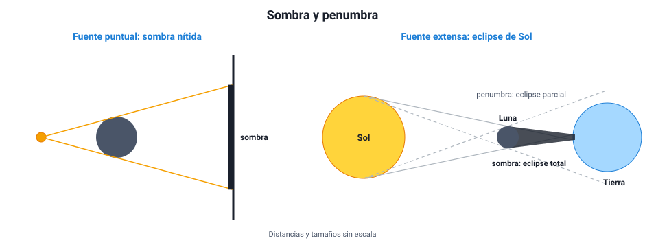
En un eclipse de Sol, la Luna se interpone entre el Sol y la Tierra. Quien está dentro de la sombra de la Luna ve un eclipse total; quien está en la penumbra lo ve parcial. En un eclipse de Luna, es la Tierra la que se interpone y la Luna entra en la sombra de la Tierra. Aun así, la Luna no desaparece: se ve tenue y rojiza, porque la atmósfera terrestre refracta hacia ella un poco de luz solar, de la que ya se dispersó casi todo el azul (sección 7). En julio de 2019 y en diciembre de 2020 hubo eclipses totales de Sol visibles desde Chile, en La Serena y en la Araucanía.
Predecir el tamaño de una sombra. Una ampolleta pequeña está a 1 m de una pared. A 0,25 m de la ampolleta se pone un disco de 10 cm de diámetro, paralelo a la pared. ¿Qué diámetro tiene la sombra?
Los rayos salen de la ampolleta en línea recta y rozan el borde del disco. Por semejanza de triángulos, el tamaño crece en proporción a la distancia desde la fuente: la pared está 4 veces más lejos que el disco (1 m / 0,25 m = 4), así que la sombra mide 4 · 10 cm = 40 cm. Si el disco se acerca a la pared, la sombra se achica; si se acerca a la ampolleta, se agranda.
e. La rapidez de la luzIA:171819
La luz es tan rápida que por siglos se creyó que se propagaba de forma instantánea. En 1676, Rømer estimó por primera vez su rapidez observando que los eclipses de la luna Ío de Júpiter se atrasaban cuando la Tierra estaba más lejos de Júpiter. Hoy se sabe que en el vacío es c = 299 792 458 m/s, es decir, unos 300 000 km/s. La luz del Sol tarda unos 8 minutos y 20 segundos en llegar a la Tierra.
En cualquier material la luz va más lento que en el vacío. Cuánto más lento depende del material, y eso es lo que mide el índice de refracción (sección 5).
3. Reflexión de la luz y espejos planosIA:2021
a. Las leyes de la reflexiónIA:222324
Cuando la luz llega a una superficie, una parte se refleja: vuelve al medio del que venía. La reflexión cumple dos leyes:
- El ángulo de incidencia es igual al ángulo de reflexión (i = r). Ambos se miden desde la normal, la recta perpendicular a la superficie en el punto donde llega el rayo, y no desde la superficie.
- El rayo incidente, la normal y el rayo reflejado están en un mismo plano.
El error más común con los ángulos. Si un enunciado dice que el rayo forma 30° con la superficie del espejo, el ángulo de incidencia es 90° − 30° = 60°, porque se mide desde la normal. Antes de usar un ángulo, fíjate desde dónde está medido.
b. Reflexión especular y reflexión difusaIA:252627
La ley de la reflexión se cumple en cada punto de cualquier superficie. Lo que cambia es la forma de la superficie:
- Reflexión especular: la superficie es lisa (un espejo, agua quieta, metal pulido). Todas las normales son paralelas, así que un haz de rayos paralelos sale paralelo. Se forma una imagen.
- Reflexión difusa: la superficie es rugosa a escala microscópica (papel, pared, ropa). Cada pequeña zona tiene su normal en otra dirección, así que los rayos salen en todas direcciones. No hay imagen, pero el objeto se ve desde cualquier lugar.
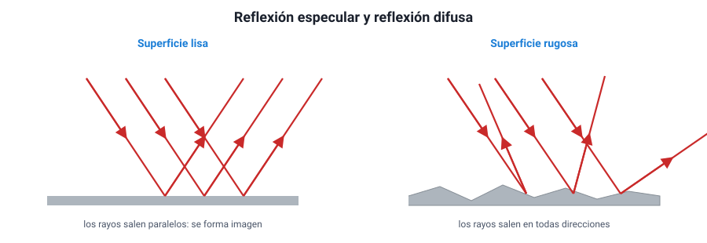
Gracias a la reflexión difusa podemos ver casi todos los objetos. Un camino mojado de noche se ve oscuro y encandila: el agua convierte la reflexión difusa del asfalto en especular, y la luz de los focos rebota en una sola dirección, lejos de tus ojos o directo a ellos.
c. La imagen en un espejo planoIA:282930
Frente a un espejo plano, los rayos que salen de un objeto se reflejan y llegan al ojo como si vinieran de detrás del espejo. El cerebro supone que la luz viaja en línea recta y «ve» el objeto donde se cruzan las prolongaciones de esos rayos.
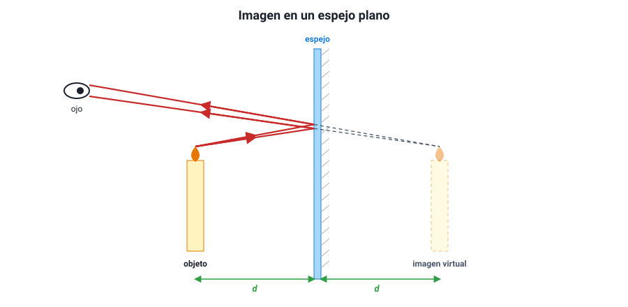
Características de la imagen en un espejo plano:
| Característica | Qué significa |
|---|---|
| Virtual | Se forma con las prolongaciones de los rayos: no se puede proyectar en una pantalla |
| Derecha | No está invertida de arriba abajo |
| Del mismo tamaño que el objeto | El espejo plano no aumenta ni reduce |
| Simétrica respecto del espejo | Está a la misma distancia detrás del espejo que el objeto delante |
| Con inversión lateral | Lo que es derecha en el objeto aparece como izquierda en la imagen, y viceversa |
La inversión lateral es la razón por la que la palabra AMBULANCIA se pinta al revés en el capó de las ambulancias: en el espejo retrovisor del auto de adelante se lee al derecho.
Distancias en un espejo plano. Una persona está a 2 m de un espejo plano. ¿A qué distancia de ella está su imagen? Si se acerca 0,5 m al espejo, ¿cuánto se acerca a su imagen?
La imagen está 2 m detrás del espejo, así que la distancia persona–imagen es 2 m + 2 m = 4 m. Al acercarse 0,5 m, la persona queda a 1,5 m del espejo y la imagen también, a 1,5 m detrás: la distancia entre ambas es 3 m. Se acercó 1 m a su imagen, el doble de lo que se movió ella.
¿Qué tamaño debe tener un espejo para verse de cuerpo entero? Basta con un espejo plano de la mitad de tu estatura, colgado a la altura adecuada, y la distancia a la que te pongas no importa. Es una consecuencia directa de i = r: el rayo que va de tus pies a tus ojos se refleja justo a mitad de camino en altura.
d. Dos espejos y muchas imágenesIA:313233
Si se ponen dos espejos planos formando un ángulo, la luz rebota de uno a otro y aparecen varias imágenes. Con dos espejos a 90° se ven 3 imágenes; al cerrar el ángulo aparecen más, y con dos espejos paralelos, en teoría infinitas, cada vez más tenues porque en cada reflexión se pierde algo de luz. Así funciona un caleidoscopio y así se «multiplican» las luces en un ascensor con espejos enfrentados.
Otra aplicación de la reflexión es el periscopio: dos espejos paralelos inclinados en 45° desvían la luz dos veces y permiten ver por encima de un obstáculo.
4. Espejos curvos: cóncavos y convexosIA:3435
a. Elementos de un espejo esféricoIA:363738
Un espejo esférico es un trozo de una esfera espejada. Si la cara que refleja es la interior, el espejo es cóncavo (como el interior de una cuchara). Si es la exterior, es convexo (como el dorso de la cuchara).
| Elemento | Qué es |
|---|---|
| Vértice (V) | Centro del espejo |
| Eje principal | Recta que pasa por el vértice y el centro de curvatura |
| Centro de curvatura (C) | Centro de la esfera de la que forma parte el espejo |
| Radio de curvatura (R) | Distancia entre C y el vértice |
| Foco (F) | Punto donde se juntan (cóncavo) o de donde parecen salir (convexo) los rayos que llegan paralelos al eje |
| Distancia focal (f) | Distancia entre F y el vértice. Vale la mitad del radio: f = R / 2 |
Cóncavo concentra, convexo abre. Un espejo cóncavo hace converger los rayos paralelos en el foco, que está delante del espejo: es un foco real. Un espejo convexo los hace diverger, como si salieran de un foco ubicado detrás del espejo: es un foco virtual.
b. Los rayos notablesIA:394041
Para encontrar la imagen de un objeto basta con dibujar dos de estos rayos, que salen de la punta del objeto, y ver dónde se cruzan (o dónde se cruzan sus prolongaciones):
- Un rayo que llega paralelo al eje se refleja pasando por el foco (en el convexo, alejándose como si viniera del foco).
- Un rayo que pasa por el foco se refleja paralelo al eje (en el convexo, el que va dirigido hacia el foco).
- Un rayo que pasa por el centro de curvatura se refleja sobre sí mismo, porque llega perpendicular al espejo.
- Un rayo que llega al vértice se refleja con el mismo ángulo al otro lado del eje.
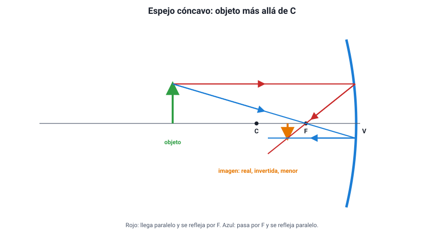
c. Las imágenes de un espejo cóncavoIA:424344
La imagen depende de dónde esté el objeto. Es la tabla más preguntada del tema:
| Posición del objeto | Imagen | Ubicación de la imagen | Ejemplo |
|---|---|---|---|
| Muy lejos (en el «infinito») | Real, invertida, un punto | En el foco | Telescopio, horno solar |
| Más allá de C | Real, invertida, menor | Entre F y C | Telescopio que proyecta una imagen |
| En C | Real, invertida, igual tamaño | En C | — |
| Entre C y F | Real, invertida, mayor | Más allá de C | Proyector |
| En F | No se forma (los rayos salen paralelos) | — | Foco de un auto, linterna |
| Entre F y el espejo | Virtual, derecha, mayor | Detrás del espejo | Espejo de maquillaje o de afeitar |
Una regla que ordena la tabla: mientras el objeto está más allá de F, la imagen es real e invertida; cuando está dentro de F, pasa a ser virtual, derecha y aumentada. Y a medida que el objeto se acerca desde lejos hacia F, la imagen real se aleja del espejo y crece.
Qué hay detrás de un foco de auto. Si pones una ampolleta en el foco de un espejo cóncavo, los rayos salen paralelos: es el principio de las linternas y los faros. Es la regla 2 al revés. Si una pregunta dice que el haz sale paralelo, la fuente está en F.
d. Las imágenes de un espejo convexoIA:454647
El convexo es más simple: para cualquier posición del objeto, la imagen es virtual, derecha y menor, y está detrás del espejo, entre el vértice y el foco. Como achica la imagen, abarca un campo de visión más amplio. Por eso se usa en:
- los espejos laterales de los autos (que advierten que los objetos están más cerca de lo que parecen: se ven más pequeños y el cerebro los interpreta como más lejanos);
- las esquinas de calles sin visibilidad y las cajas de supermercados;
- los espejos de seguridad en estacionamientos.
| Espejo | Imagen | Usos típicos |
|---|---|---|
| Plano | Virtual, derecha, igual tamaño | Espejo de baño, periscopio |
| Cóncavo | Depende de la posición del objeto | Linternas, telescopios, maquillaje, antenas parabólicas, hornos solares |
| Convexo | Siempre virtual, derecha y menor | Retrovisores laterales, seguridad |
e. Para profundizar: la ecuación de los espejosIA:484950
La posición de la imagen también se puede calcular. Si p es la distancia del objeto al espejo y q la de la imagen:
1 / f = 1 / p + 1 / q aumento: A = − q / p
Con la convención habitual, f es positiva en el cóncavo y negativa en el convexo; q positiva indica imagen real (delante del espejo) y negativa, virtual. Un aumento negativo indica imagen invertida.
Un objeto entre C y F. Un espejo cóncavo tiene R = 40 cm, así que f = 20 cm. Un objeto está a 30 cm del espejo (entre C, a 40 cm, y F, a 20 cm).
1/q = 1/20 − 1/30 = 3/60 − 2/60 = 1/60, así que q = 60 cm (positiva: imagen real, delante del espejo). A = −60/30 = −2: la imagen es invertida y del doble del tamaño.
Coincide con la tabla: objeto entre C y F → imagen real, invertida, mayor y más allá de C.
5. Refracción de la luzIA:5152
a. El índice de refracciónIA:535455
Cuando la luz entra en un material, se propaga más lento que en el vacío. El índice de refracción mide cuánto más lento:
n = c / v
donde c es la rapidez de la luz en el vacío y v su rapidez en el medio. Como la luz nunca va más rápido que en el vacío, n ≥ 1, y no tiene unidad (es un cociente de dos rapideces).
| Medio | Índice de refracción n | Rapidez de la luz (km/s) |
|---|---|---|
| Vacío | 1 (exacto) | 300 000 |
| Aire | 1,0003 (≈ 1) | ≈ 300 000 |
| Agua | 1,33 | ≈ 225 000 |
| Vidrio común | ≈ 1,5 | ≈ 200 000 |
| Diamante | 2,42 | ≈ 124 000 |
Se dice que un medio es más refringente (o, a veces, ópticamente más denso) cuando tiene mayor índice: en él la luz va más lento.
No confundas. Un índice mayor significa una rapidez menor. Y «ópticamente más denso» no es lo mismo que «más denso» en masa: el aceite es menos denso que el agua (flota), pero tiene mayor índice de refracción.
b. Por qué la luz se desvíaIA:565758
Cuando un haz llega oblicuo a la frontera entre dos medios, un borde del frente de onda entra primero al nuevo medio y cambia de rapidez antes que el otro. El frente «gira», y el rayo cambia de dirección. Una imagen útil es la de una fila de personas que marchan del pasto a la arena en diagonal: las primeras en pisar la arena se frenan y la fila entera gira.
Las reglas, medidas siempre desde la normal:
- Al pasar a un medio de mayor índice (más lento), el rayo se acerca a la normal: el ángulo de refracción es menor que el de incidencia.
- Al pasar a un medio de menor índice (más rápido), el rayo se aleja de la normal.
- Si llega perpendicular a la frontera (ángulo de incidencia 0°), no se desvía, aunque sí cambia su rapidez.
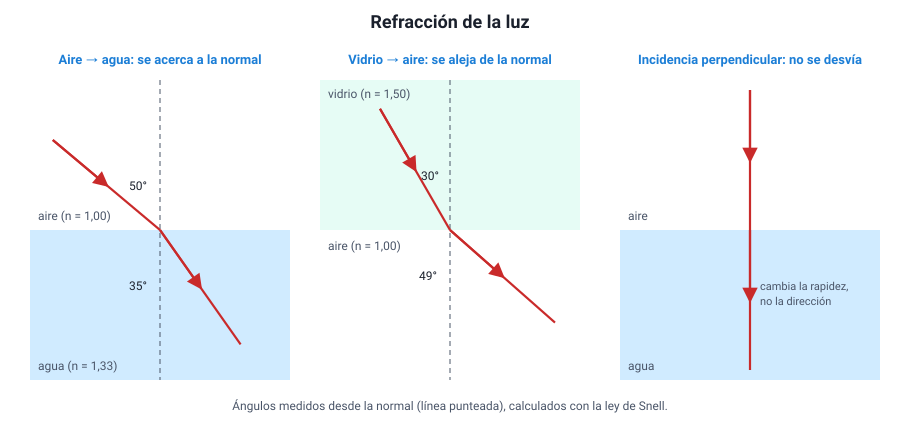
La relación exacta es la ley de Snell: n1 · sen θ1 = n2 · sen θ2. Para la PAES basta con usarla de forma cualitativa: el lado con mayor n tiene el ángulo menor.
Además, en la refracción:
| Magnitud | ¿Cambia? |
|---|---|
| Frecuencia (y por lo tanto el color) | No |
| Rapidez | Sí: disminuye si n aumenta |
| Longitud de onda | Sí, en la misma proporción que la rapidez |
| Dirección | Sí, salvo que la luz llegue perpendicular |
Y en toda frontera, parte de la luz se refleja y parte se refracta: por eso ves tu reflejo en una ventana y a la vez ves a través de ella.
c. Efectos cotidianos de la refracciónIA:596061
- Profundidad aparente. El fondo de una piscina parece más cerca de lo que está. La luz que sale del agua al aire se aleja de la normal, y el ojo prolonga los rayos en línea recta hasta un punto más alto. Mirando en vertical, la profundidad aparente es la real dividida por 1,33: una piscina de 2 m parece de 1,5 m.
- La bombilla quebrada. La parte sumergida de una bombilla parece desplazada por la misma razón.
- Los espejismos. En un día caluroso, el aire junto al asfalto está más caliente y tiene un índice algo menor que el aire de arriba. La luz del cielo que baja hacia el camino se va curvando hacia arriba y llega al ojo como si viniera del suelo: parece que hay agua en la carretera.
- El Sol en el horizonte. La atmósfera refracta la luz del Sol, de modo que al atardecer lo seguimos viendo unos minutos después de que geométricamente ya se ocultó.
d. Reflexión total internaIA:626364
Cuando la luz va de un medio de mayor índice a uno de menor índice (del agua al aire, del vidrio al aire), se aleja de la normal. Si se aumenta el ángulo de incidencia, el rayo refractado se acerca cada vez más a la superficie, hasta que, para un cierto ángulo límite o crítico, sale rasante (a 90°). Con ángulos mayores que el límite, la luz ya no sale: se refleja completa hacia adentro. Es la reflexión total interna.
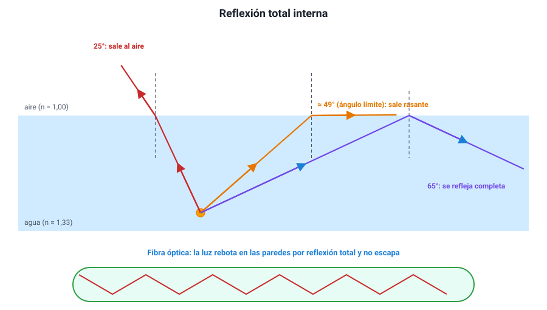
Condiciones para que ocurra: (1) la luz debe ir hacia un medio de menor índice, y (2) el ángulo de incidencia debe superar el ángulo límite. Si falta una de las dos, no hay reflexión total.
| Frontera | Ángulo límite aproximado |
|---|---|
| Agua → aire | 49° |
| Vidrio → aire | 42° |
| Diamante → aire | 24° |
Aplicaciones:
- Fibra óptica. Un hilo de vidrio muy puro, recubierto por otro vidrio de menor índice. La luz entra por un extremo y rebota en las paredes por reflexión total, sin escaparse, a lo largo de kilómetros. Transporta internet y telefonía con pulsos de luz infrarroja, y en medicina se usa en los endoscopios para ver el interior del cuerpo.
- Prismas de los prismáticos. Un prisma de vidrio con ángulos de 45° refleja la luz por completo, mejor que un espejo metálico (sección 8).
- El brillo del diamante. Su ángulo límite es tan pequeño que la luz que entra rebota muchas veces adentro antes de salir.
¿Sale o no sale? Un buzo apunta una linterna hacia la superficie del agua. En el primer intento el haz llega a la superficie con un ángulo de 30° respecto de la normal; en el segundo, con 60°. El ángulo límite agua–aire es de unos 49°.
- Con 30° (menor que 49°), la luz sale al aire, alejándose de la normal, y una parte se refleja.
- Con 60° (mayor que 49°), la luz no sale: se refleja completa y vuelve al agua.
Si en cambio alguien desde el bote apunta la linterna hacia el agua, la luz siempre entra, con cualquier ángulo: va hacia un medio de mayor índice, y ahí nunca hay reflexión total.
6. LentesIA:6566
a. Qué es una lente y qué tipos hayIA:676869
Una lente es un cuerpo transparente, normalmente de vidrio o plástico, limitado por dos superficies de las cuales al menos una es curva. La luz se refracta dos veces, al entrar y al salir, y cambia de dirección. Según su forma, hay dos grandes tipos:
| Lente convergente | Lente divergente | |
|---|---|---|
| Forma | Más gruesa en el centro que en los bordes (biconvexa, planoconvexa) | Más delgada en el centro que en los bordes (bicóncava, planocóncava) |
| Qué hace con rayos paralelos | Los junta en un foco real, al otro lado | Los separa; parecen salir de un foco virtual, del mismo lado |
| Distancia focal | Positiva | Negativa |
| Ejemplos | Lupa, lente de cámara, cristalino del ojo, lentes para hipermetropía | Mirilla de puerta, lentes para miopía |
Una lente tiene dos focos, uno a cada lado y a la misma distancia f del centro óptico (el centro de la lente). La distancia 2f se usa como referencia, igual que el centro de curvatura en los espejos.
La lupa y el vaso con agua. Una lupa concentra la luz del Sol en un punto que puede quemar un papel: ese punto es su foco. Si pones la lupa a esa distancia del papel, estás midiendo su distancia focal. Una lente divergente nunca puede hacer eso, porque separa los rayos.
b. Los rayos notablesIA:707172
- Un rayo que llega paralelo al eje sale pasando por el foco del otro lado (en la divergente, alejándose como si viniera del foco del mismo lado).
- Un rayo que pasa por el centro óptico sigue sin desviarse.
- Un rayo que pasa por el foco del lado del objeto sale paralelo al eje.
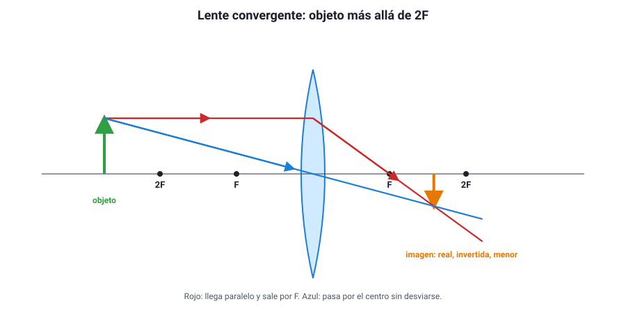
c. Las imágenes de una lente convergenteIA:737475
La tabla es paralela a la del espejo cóncavo, cambiando C por 2F y con la imagen real al otro lado de la lente:
| Posición del objeto | Imagen | Ubicación de la imagen | Ejemplo |
|---|---|---|---|
| Más allá de 2F | Real, invertida, menor | Entre F y 2F, al otro lado | Cámara fotográfica, ojo |
| En 2F | Real, invertida, igual tamaño | En 2F, al otro lado | Fotocopiadora a escala 1:1 |
| Entre 2F y F | Real, invertida, mayor | Más allá de 2F, al otro lado | Proyector |
| En F | No se forma (los rayos salen paralelos) | — | Faro, colimador |
| Entre F y la lente | Virtual, derecha, mayor | Del mismo lado que el objeto | Lupa |
Una lente divergente, en cambio, siempre forma una imagen virtual, derecha y menor, del mismo lado del objeto.
La ecuación es la misma que la de los espejos: 1/f = 1/p + 1/q, con q positiva para imágenes reales (al otro lado de la lente).
¿Qué pasa si tapas media lente? Mucha gente cree que desaparece media imagen. No es así: cada punto de la lente recibe luz de todo el objeto, así que la otra mitad sigue formando la imagen completa. Lo que cambia es que llega la mitad de la luz: la imagen se ve completa pero más tenue.
d. La potencia de una lenteIA:767778
Los ópticos no hablan de distancia focal sino de potencia (P), que es su inverso con f en metros:
P = 1 / f (unidad: dioptría, D = 1/m)
Una lente convergente de f = 0,5 m tiene +2 D; una divergente de f = −0,25 m tiene −4 D. En una receta médica, los números negativos corresponden a lentes divergentes (miopía) y los positivos a lentes convergentes (hipermetropía y presbicia). Una lente más curva desvía más la luz, tiene menor distancia focal y más dioptrías.
e. El ojo humano, una lente vivaIA:798081
El ojo funciona como una cámara: la córnea y el cristalino forman un sistema convergente que proyecta sobre la retina una imagen real, invertida y menor de lo que miramos. El cerebro se encarga de «darla vuelta».
Para enfocar objetos a distintas distancias, el ojo no mueve la lente como una cámara: los músculos ciliares cambian la curvatura del cristalino. Esta capacidad se llama acomodación. Un ojo sano enfoca desde unos 25 cm (punto cercano) hasta el infinito.
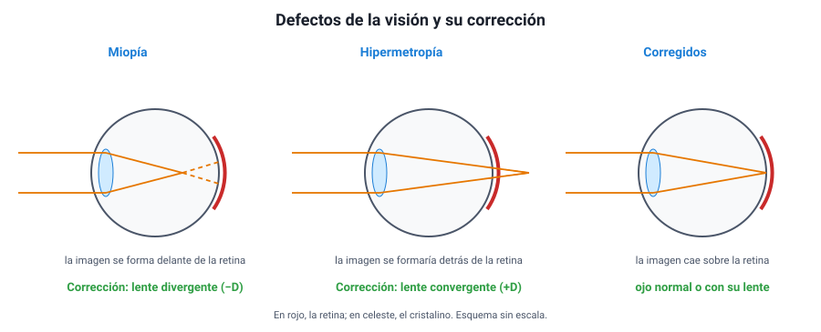
| Defecto | Qué pasa | Qué ve mal | Corrección |
|---|---|---|---|
| Miopía | El ojo es muy largo o converge demasiado: la imagen se forma delante de la retina | De lejos | Lente divergente (dioptrías negativas) |
| Hipermetropía | El ojo es muy corto o converge poco: la imagen se formaría detrás de la retina | De cerca | Lente convergente (dioptrías positivas) |
| Presbicia | Con la edad el cristalino pierde flexibilidad y acomoda menos | De cerca | Lente convergente para leer |
| Astigmatismo | La córnea tiene distinta curvatura en distintas direcciones | Imagen distorsionada | Lente cilíndrica |
Razonar la corrección. El ojo de un miope forma la imagen de un objeto lejano delante de la retina: converge demasiado. Para corregirlo hay que quitarle convergencia, y eso lo hace una lente divergente, que abre un poco los rayos antes de que entren al ojo. Así el punto de enfoque retrocede hasta la retina. El razonamiento para la hipermetropía es el opuesto. La PAES suele preguntar así: te describe dónde se forma la imagen y te pide qué tipo de lente corrige el problema.
7. El color y la dispersiónIA:8283
a. La luz blanca es una mezclaIA:848586
En 1666, Newton hizo pasar un haz de luz del Sol por un prisma de vidrio y obtuvo en la pared una franja de colores: rojo, naranjo, amarillo, verde, azul, añil y violeta. Muchos pensaban entonces que el prisma «teñía» la luz. Newton hizo la prueba decisiva: aisló un solo color, por ejemplo el rojo, y lo pasó por un segundo prisma. El rojo se desvió, pero siguió siendo rojo: el prisma no creaba colores. Y al juntar todos los colores con una lente, obtuvo de nuevo luz blanca. La conclusión: la luz blanca es una mezcla de todos los colores, y el prisma solo los separa.
Por qué es un buen experimento. Newton no se conformó con ver los colores: diseñó una prueba en la que las dos hipótesis predecían cosas distintas. Si el prisma creara los colores, el segundo prisma debería cambiar otra vez el color del haz rojo. No lo cambió. Este tipo de razonamiento —qué resultado esperaría cada hipótesis— es el que la PAES pide en la habilidad Observar y plantear preguntas.
b. Qué es la dispersiónIA:878889
El prisma separa los colores porque el índice de refracción del vidrio depende de la longitud de onda: es un poco mayor para el violeta que para el rojo. El violeta se frena más dentro del vidrio y se desvía más; el rojo se desvía menos. A esto se le llama dispersión.
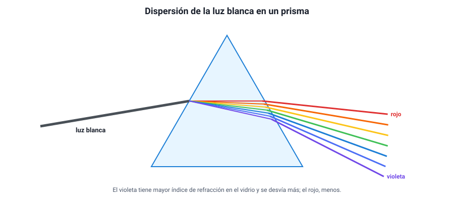
| Color | Longitud de onda aproximada | Índice en un vidrio típico | Desviación en el prisma |
|---|---|---|---|
| Rojo | ≈ 700 nm | Menor (≈ 1,51) | La menor |
| Verde | ≈ 530 nm | Intermedio | Intermedia |
| Violeta | ≈ 400 nm | Mayor (≈ 1,53) | La mayor |
Qué se conserva y qué no. Cada color mantiene su frecuencia al entrar al vidrio (capítulo 1): por eso sigue siendo del mismo color. Lo que cambia es su rapidez, y como cambia un poco distinto para cada color, cada uno toma un camino distinto. En el vacío no hay dispersión, porque todos los colores viajan exactamente a c.
c. El arcoírisIA:909192
Un arcoíris es dispersión en gotas de lluvia. La luz del Sol se refracta al entrar en la gota, se refleja en su pared interior y se refracta otra vez al salir. Como el agua desvía distinto cada color, los colores salen en direcciones algo distintas: el rojo, a unos 42° respecto de la dirección opuesta al Sol, y el violeta, a unos 40°.
Consecuencias que se pueden preguntar:
- Solo se ve arcoíris con el Sol a la espalda y la lluvia al frente.
- El rojo queda en la parte exterior del arco y el violeta en la interior.
- Cada persona ve su propio arcoíris, formado por gotas distintas: por eso nunca se llega a él.
- A veces aparece un arco secundario, más tenue y con los colores invertidos, por luz que se reflejó dos veces dentro de las gotas.
d. El color de los objetosIA:939495
Un objeto no tiene color «en sí mismo»: refleja algunos colores y absorbe los demás, y lo que vemos es la luz que refleja.
- Un tomate se ve rojo porque refleja sobre todo el rojo y absorbe el resto.
- Una hoja se ve verde porque refleja el verde y absorbe el rojo y el azul (que usa para la fotosíntesis).
- Un objeto blanco refleja todos los colores; uno negro los absorbe casi todos. Por eso la ropa negra se calienta más al sol.
Consecuencia importante: el color que vemos depende también de la luz que ilumina. Un tomate iluminado solo con luz verde se ve negro: absorbe el verde y no hay rojo que pueda reflejar. Por eso la ropa se ve distinta bajo la luz amarilla de algunos focos de la calle.
Un filtro de color funciona igual, pero por transmisión: un filtro rojo deja pasar el rojo y absorbe los demás. Si se mira a través de él un objeto azul, se ve negro.
e. Mezclar luces y mezclar pinturasIA:969798
Hay dos formas de mezclar colores, y dan resultados opuestos:
| Mezcla aditiva (luces) | Mezcla sustractiva (pigmentos y filtros) | |
|---|---|---|
| Qué se hace | Se suman luces de colores sobre una pantalla o en el ojo | Cada pigmento resta (absorbe) una parte de la luz blanca |
| Colores primarios | Rojo, verde y azul (RGB) | Cian, magenta y amarillo (CMY) |
| Los tres primarios juntos | Blanco | Casi negro |
| Ejemplos de mezcla | Rojo + verde = amarillo; rojo + azul = magenta; verde + azul = cian | Cian + amarillo = verde; magenta + amarillo = rojo |
| Dónde se usa | Pantallas de celular, televisor y proyectores | Impresoras (CMYK, con K = negro), pinturas |
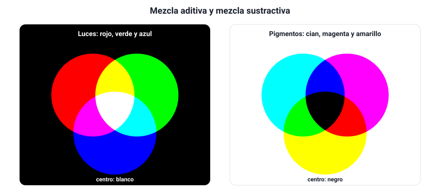
Si miras con una lupa la pantalla de un celular que muestra un fondo blanco, verás pequeños puntos rojos, verdes y azules encendidos a la vez: el ojo los suma y percibe blanco.
f. Por qué el cielo es azul y el atardecer rojoIA:99100101
Las moléculas del aire (nitrógeno y oxígeno) dispersan la luz del Sol en todas direcciones, y lo hacen mucho más con las longitudes de onda cortas (azul, violeta) que con las largas (rojo). A esto se le llama dispersión de Rayleigh (aquí «dispersión» significa desviar en todas direcciones, no separar colores como el prisma).
- De día, la luz azul dispersada nos llega desde todo el cielo: por eso se ve azul. No se ve violeta, en parte porque el Sol emite menos violeta y el ojo es menos sensible a él.
- Al atardecer, la luz del Sol atraviesa mucha más atmósfera para llegar a nosotros. En el camino pierde casi todo el azul, que se dispersa hacia otros lados, y llega sobre todo la luz roja y anaranjada.
- En la Luna, sin atmósfera, el cielo es negro aunque sea de día.
8. Instrumentos y dispositivos ópticosIA:102103
El temario pide comprender el funcionamiento y la utilidad de varios dispositivos. Todos combinan las piezas de este capítulo: espejos, lentes, prismas y reflexión total. La clave para entender cualquiera es preguntarse qué pieza forma la primera imagen y qué pieza la amplía o la desvía.
a. La lupa y el microscopioIA:104105106
- La lupa es una lente convergente. El objeto se pone entre el foco y la lente, y se ve una imagen virtual, derecha y mayor (sección 6).
- El microscopio usa dos lentes convergentes. El objetivo, de distancia focal muy corta, forma una imagen real, invertida y mayor del objeto, que está apenas más allá de su foco. El ocular actúa como una lupa y amplía esa primera imagen. El aumento total es el producto de los dos: un objetivo de 40× con un ocular de 10× da 400×.
b. Telescopios refractores y reflectoresIA:107108109
Un telescopio junta la luz de objetos lejanos y forma de ellos una imagen que luego se amplía con un ocular. Hay dos tipos, según la pieza que recoge la luz:
| Telescopio refractor | Telescopio reflector | |
|---|---|---|
| Qué recoge la luz | Una lente convergente grande (objetivo) | Un espejo cóncavo grande (espejo primario) |
| Fenómeno principal | Refracción | Reflexión |
| Primer constructor | Galileo (1609) apuntó uno al cielo | Newton (1668) |
| Ventajas | Tubo cerrado, poco mantenimiento | Sin aberración cromática; el espejo se sostiene por detrás; más barato en tamaños grandes |
| Limitaciones | Las lentes grandes pesan, se deforman y separan los colores (aberración cromática) | El espejo necesita realuminizarse y alinearse |
| El más grande | Yerkes (EE. UU.), 1,02 m, de 1897 | Varios de 8 a 10 m; el ELT, en construcción en Chile, tendrá 39 m |
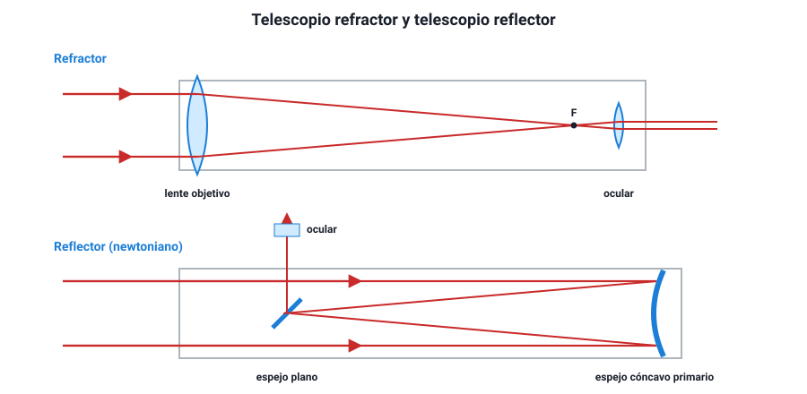
¿Por qué todos los grandes telescopios modernos son reflectores? Porque el poder de captar luz depende del área del objetivo, y una lente de más de un metro sería tan pesada que se deformaría con su propio peso, solo puede sostenerse por el borde y además separa los colores. Un espejo, en cambio, puede sostenerse por detrás y hacerse de segmentos. Así se construyen los telescopios del norte de Chile: el VLT en Cerro Paranal, con cuatro espejos de 8,2 m; Gemini Sur y el Observatorio Vera C. Rubin en Cerro Pachón; y el ELT en Cerro Armazones, cuyo espejo de 39 m estará formado por 798 segmentos hexagonales.
Radiotelescopios. Funcionan como un telescopio reflector, pero para ondas de radio: una antena parabólica refleja las ondas hacia un receptor ubicado en su foco. Como las longitudes de onda de radio son mucho mayores que las de la luz, necesitan antenas enormes o muchas antenas combinadas. ALMA, en el llano de Chajnantor (a 5 000 m de altura, región de Antofagasta), usa 66 antenas que trabajan como un solo instrumento y observan longitudes de onda milimétricas y submilimétricas.
c. Los prismáticosIA:110111112
Unos prismáticos son, en esencia, dos telescopios refractores pequeños, uno por ojo. Un telescopio refractor simple entrega la imagen invertida, lo que da igual al mirar estrellas pero no al mirar un paisaje. Los prismáticos lo resuelven con dos prismas en cada tubo que reflejan la luz por reflexión total interna (sección 5): enderezan la imagen y, al hacer que la luz vaya y vuelva, acortan el largo del instrumento.
Por qué prismas y no espejos. La reflexión total interna refleja prácticamente el 100 % de la luz, sin capa metálica que se oxide. Un espejo común absorbe una parte en cada reflexión. Si una pregunta te pregunta qué fenómeno permite el funcionamiento de los prismas de unos prismáticos, la respuesta es la reflexión total interna, no la dispersión.
d. La cámara fotográficaIA:113114115
Una cámara funciona como el ojo y como la cámara oscura. Su lente convergente forma en el sensor una imagen real, invertida y menor de un objeto lejano (objeto más allá de 2F). Para enfocar objetos a distinta distancia, la cámara mueve la lente, acercándola o alejándola del sensor; el ojo, en cambio, cambia la curvatura del cristalino.
e. La fibra ópticaIA:116117118
Una fibra óptica guía la luz por reflexión total interna: la luz rebota en la frontera entre el núcleo de vidrio y un recubrimiento de menor índice, y no se escapa aunque la fibra se curve. Los datos viajan como pulsos de luz, normalmente infrarroja, con muy pocas pérdidas y sin interferencias eléctricas. En Chile, el proyecto Fibra Óptica Austral tendió un cable submarino de unos 3 000 km entre Puerto Montt y Puerto Williams para llevar internet de alta velocidad al extremo sur. En medicina, los endoscopios usan haces de fibras para llevar luz al interior del cuerpo y traer de vuelta la imagen.
f. El rayo láserIA:119120121
La palabra láser es una sigla en inglés que significa amplificación de luz por emisión estimulada de radiación. Su luz se distingue de la de una ampolleta en tres propiedades:
| Propiedad | Luz láser | Luz de una ampolleta |
|---|---|---|
| Monocromática | Una sola longitud de onda (un solo color) | Mezcla de muchas longitudes de onda |
| Coherente | Todas las ondas en fase | Ondas desfasadas al azar |
| Direccional | El haz casi no se abre, aun a grandes distancias | Se abre en todas direcciones |
Gracias a esas propiedades, el láser concentra mucha energía en un punto pequeño. Se usa en lectores de códigos de barra, en cirugía ocular (para corregir miopía remodelando la córnea), en punteros, en la transmisión por fibra óptica, en cortes industriales y para medir distancias con enorme precisión, como la distancia a la Luna usando los reflectores que dejaron allí las misiones Apolo.
Evaluar una elección tecnológica. Un observatorio decide construir un telescopio reflector de 8 m en vez de un refractor del mismo diámetro. ¿Qué argumento físico apoya esa decisión?
- Una lente de 8 m debería sostenerse solo por el borde y se deformaría con su peso; un espejo se sostiene por toda su cara posterior.
- La lente separaría los colores por dispersión (aberración cromática); el espejo refleja todos los colores con el mismo ángulo, porque la ley de la reflexión no depende de la longitud de onda.
Ambos argumentos vienen del capítulo: el primero es mecánico, el segundo sale de comparar reflexión y refracción. Nota que «el espejo capta más luz» no es un buen argumento aquí: con el mismo diámetro, ambos captan la misma cantidad de luz.
Ejemplos PAES resueltos
Cuatro ítems al estilo de la prueba, resueltos paso a paso. Cúbrelos primero y después compara.
Ejemplo 1 (Procesar y analizar la evidencia). En un laboratorio, un grupo de estudiantes hace llegar un rayo láser desde el aire a la cara plana de un bloque semicircular de acrílico, variando el ángulo de incidencia. Miden el ángulo de refracción dentro del bloque:
| Ángulo de incidencia en el aire | Ángulo de refracción en el acrílico |
|---|---|
| 0° | 0° |
| 20° | 13° |
| 40° | 25° |
| 60° | 35° |
¿Cuál de las siguientes conclusiones es coherente con estos datos?
A) La luz viaja más rápido en el acrílico que en el aire. B) El rayo refractado se aleja de la normal al entrar en el acrílico. C) El ángulo de refracción es siempre la mitad del ángulo de incidencia. D) El acrílico tiene un índice de refracción mayor que el del aire.
Desarrollo.
- Qué muestran los datos. Para cada ángulo de incidencia distinto de cero, el ángulo de refracción es menor: el rayo se acerca a la normal. Eso descarta B.
- Qué significa acercarse a la normal. Ocurre cuando la luz pasa a un medio donde viaja más lento, es decir, de mayor índice de refracción. Por eso D es correcta y A dice lo contrario.
- Revisar C. 13° no es la mitad de 20°, ni 35° la mitad de 60°: la relación no es proporcional (es la ley de Snell, con senos). C es un error de generalizar a partir de un solo dato.
Clave: D.
Lo que evalúa. Que pases de un patrón en una tabla (ángulo refractado menor) a una conclusión sobre el modelo (índice mayor, rapidez menor), sin inventar una relación numérica que los datos no sostienen.
Ejemplo 2 (Planificar y conducir una investigación). Una estudiante quiere comprobar que la distancia a la que se forma la imagen real de una lente convergente depende de la distancia a la que pone el objeto. Tiene una vela, una lente de distancia focal conocida, una pantalla blanca y una huincha.
¿Cuál de los siguientes procedimientos le permite responder su pregunta?
A) Poner la vela a distintas distancias de la lente, siempre más allá del foco, y en cada caso mover la pantalla hasta ver la imagen nítida y medir su distancia a la lente. B) Poner la vela siempre a la misma distancia y probar lentes de distinta distancia focal, midiendo en cada caso el tamaño de la imagen en la pantalla. C) Poner la vela a distintas distancias de la lente, siempre entre el foco y la lente, y en cada caso buscar la imagen en la pantalla. D) Dejar fija la pantalla y mover la lente hasta que la imagen se vea nítida, midiendo solo la altura de la llama.
Desarrollo.
- Variables. Independiente: la distancia del objeto a la lente. Dependiente: la distancia de la imagen a la lente. Controlada: la lente (misma distancia focal).
- Descartar. B cambia la lente, que es otra variable, y mide el tamaño en vez de la distancia. C pone el objeto dentro del foco, donde la lente da una imagen virtual, que no se puede proyectar en la pantalla. D no varía de forma controlada la distancia del objeto y mide una variable que no es la de la pregunta.
- A varía la variable independiente, mide la dependiente con el instrumento adecuado y usa la pantalla correctamente: solo las imágenes reales se proyectan.
Clave: A.
Lo que evalúa. Que asocies las variables con el procedimiento y que uses un conocimiento de óptica (la imagen virtual no se proyecta) para descartar un diseño que no funcionaría.
Ejemplo 3 (Evaluar). Un fabricante afirma que sus prismáticos entregan imágenes más luminosas porque usan prismas en lugar de espejos metálicos para desviar la luz dentro de los tubos.
¿Cuál de las siguientes afirmaciones evalúa correctamente esa justificación?
A) Es incorrecta, porque los prismas separan la luz en colores y eso siempre hace más oscura la imagen. B) Es correcta, porque dentro del prisma la luz se refleja por reflexión total interna, que no pierde luz como un espejo metálico. C) Es incorrecta, porque la luz solo puede reflejarse en superficies metálicas pulidas. D) Es correcta, porque el vidrio del prisma aumenta la frecuencia de la luz y la hace más intensa.
Desarrollo.
- Qué fenómeno ocurre en el prisma. La luz llega a la cara interna del prisma con 45°, un ángulo mayor que el límite del vidrio (≈ 42°), y se refleja por completo: reflexión total interna. Un espejo metálico absorbe una parte de la luz en cada reflexión.
- Descartar. A confunde el uso del prisma: en los prismáticos la luz entra y sale por caras perpendiculares, así que no se dispersa apreciablemente. C es falsa: el vidrio, el agua y muchas superficies reflejan luz. D es falsa: la frecuencia no cambia al pasar de un medio a otro.
Clave: B.
Lo que evalúa. Que juzgues una afirmación tecnológica con el modelo físico correcto.
Ejemplo 4 (Observar y plantear preguntas). Un grupo ilumina una camiseta con distintas luces en una sala oscura. Con luz blanca la camiseta se ve roja; con luz roja se ve roja; con luz verde se ve negra; con luz azul se ve negra.
¿Cuál de las siguientes hipótesis explica mejor estas observaciones?
A) La camiseta emite luz roja propia cuando se ilumina con cualquier luz. B) La camiseta refleja principalmente la luz roja y absorbe la verde y la azul. C) La camiseta transforma la luz verde y azul en luz roja antes de reflejarla. D) La camiseta refleja la luz verde y azul, pero el ojo no puede percibirlas.
Desarrollo.
- Qué patrón hay. La camiseta solo se ve de color cuando la luz que la ilumina contiene rojo (luz blanca o roja). Sin rojo, se ve negra: no refleja nada que llegue al ojo.
- Qué hipótesis lo explica. Reflexión selectiva: refleja el rojo y absorbe el resto (B).
- Descartar. A: si emitiera luz roja propia, se vería roja también con luz verde y azul. C: si transformara esas luces en rojo, también se vería roja con ellas. D contradice que el ojo sí percibe el verde y el azul.
Clave: B.
Lo que evalúa. Que identifiques la hipótesis que es coherente con todas las observaciones, y que descartes las que chocan con alguna de ellas.
Evaluación formativa
Veinte preguntas sobre la propagación de la luz, la reflexión y los espejos, la refracción, las lentes, el color y los instrumentos ópticos. Responde todas y luego revisa las explicaciones.
1. Durante el día, una persona ve a través de una ventana de vidrio esmerilado que hay luz afuera, pero no distingue la forma de los árboles. ¿Cómo se clasifica ese vidrio?
- Opaco, porque no deja pasar ninguna luz.
- Translúcido, porque deja pasar luz difusa.
- Transparente, porque deja pasar toda la luz.
- Luminoso, porque emite su propia luz.
Respuesta correcta: B
Un material translúcido deja pasar luz, pero la desvía en muchas direcciones, así que no se forman imágenes nítidas. Uno transparente permitiría ver los árboles; uno opaco no dejaría pasar la luz.
2. Al iluminar una pelota con el tubo fluorescente largo de una sala, su sombra en el piso tiene un centro oscuro rodeado de una zona más clara. ¿Qué explica esa zona más clara?
- Que la luz del tubo se refleja en la pelota y llega al piso.
- Que la luz rodea la pelota por difracción y aclara la sombra.
- Que la pelota es translúcida y deja pasar parte de la luz.
- Que a esa zona llega luz de una parte del tubo, pero no de todo él.
Respuesta correcta: D
El tubo es una fuente extensa. En la sombra no llega luz de ningún punto del tubo; en la penumbra llega luz de una parte de él. Con una fuente puntual no habría penumbra.
3. Un rayo de luz forma un ángulo de 25° con la superficie de un espejo plano. ¿Cuál es el ángulo de reflexión?
- 65°
- 50°
- 25°
- 12,5°
Respuesta correcta: A
Los ángulos se miden desde la normal: el ángulo de incidencia es 90° − 25° = 65°, y el de reflexión es igual al de incidencia. Tomar 25° como ángulo de incidencia es el error más común.
4. ¿Por qué podemos ver una hoja de papel desde cualquier lugar de una sala, pero no nos vemos reflejados en ella?
- Porque el papel absorbe toda la luz que le llega.
- Porque su superficie rugosa produce reflexión difusa.
- Porque el papel no cumple la ley de la reflexión.
- Porque el papel emite luz propia en todas direcciones.
Respuesta correcta: B
El papel es rugoso a escala microscópica: cada punto cumple la ley de la reflexión, pero con normales en direcciones distintas, así que la luz sale hacia todos lados (reflexión difusa) y no se forma imagen.
5. Una niña está a 1,5 m de un espejo plano y camina hacia él a 0,5 m/s. ¿Con qué rapidez se acerca a su imagen?
- 0,25 m/s
- 0,5 m/s
- 1,0 m/s
- 1,5 m/s
Respuesta correcta: C
La imagen está siempre a la misma distancia detrás del espejo que la niña delante. Si ella se acerca 0,5 m cada segundo, la imagen también se acerca 0,5 m al espejo: la distancia entre ambas disminuye 1,0 m por segundo.
6. ¿Cuál de las siguientes es una característica de la imagen formada por un espejo plano?
- Es real y se puede proyectar sobre una pantalla.
- Es invertida de arriba abajo respecto del objeto.
- Es más pequeña cuanto más lejos está el objeto.
- Está tras el espejo, a igual distancia que el objeto.
Respuesta correcta: D
La imagen de un espejo plano es virtual, derecha, del mismo tamaño que el objeto y simétrica: está detrás del espejo a la misma distancia. Que se vea más pequeña de lejos es un efecto de la perspectiva, no del espejo.
7. En una linterna, la ampolleta se ubica frente a un espejo cóncavo para que la luz salga en un haz de rayos paralelos. ¿Dónde está la ampolleta?
- En el foco del espejo.
- En el centro de curvatura.
- Entre el foco y el espejo.
- Más allá del centro de curvatura.
Respuesta correcta: A
Un rayo que pasa por el foco se refleja paralelo al eje. Por eso, una fuente en el foco produce un haz paralelo. En el centro de curvatura la luz volvería sobre sí misma.
8. Una persona acerca la cara a un espejo cóncavo, quedando entre el foco y el espejo. ¿Cómo es la imagen que ve?
- Real, invertida y de mayor tamaño.
- Real, invertida y de menor tamaño.
- Virtual, derecha y de mayor tamaño.
- Virtual, derecha y de menor tamaño.
Respuesta correcta: C
Con el objeto entre F y el espejo, los rayos reflejados divergen y sus prolongaciones se cruzan detrás del espejo: la imagen es virtual, derecha y aumentada. Es el principio del espejo de maquillaje.
9. ¿Por qué los espejos laterales de los autos son convexos?
- Porque forman imágenes reales que el conductor ve con más nitidez.
- Porque dan imágenes menores y abarcan un campo de visión más amplio.
- Porque aumentan el tamaño de los vehículos que vienen detrás.
- Porque concentran la luz de los focos en el ojo del conductor.
Respuesta correcta: B
El espejo convexo siempre da imágenes virtuales, derechas y menores, lo que permite ver una zona más amplia. Por eso los autos parecen más lejanos de lo que están.
10. La luz viaja en el agua a unos 225 000 km/s y en el vacío a unos 300 000 km/s. ¿Cuál es aproximadamente el índice de refracción del agua?
- 0,75
- 1,00
- 1,25
- 1,33
Respuesta correcta: D
n = c / v = 300 000 / 225 000 ≈ 1,33. El valor 0,75 resulta de invertir el cociente; un índice menor que 1 significaría que la luz va más rápido que en el vacío, lo que no ocurre.
11. Un rayo de luz pasa del aire al vidrio con un ángulo de incidencia de 40°. ¿Qué ocurre con el rayo?
- Se acerca a la normal y su rapidez disminuye.
- Se aleja de la normal y su rapidez disminuye.
- Se acerca a la normal y su rapidez aumenta.
- Sigue sin desviarse y su rapidez se mantiene.
Respuesta correcta: A
El vidrio tiene mayor índice que el aire: la luz se frena y el rayo se acerca a la normal. Solo seguiría sin desviarse si llegara perpendicular a la superficie.
12. Al pasar del aire al agua, ¿qué magnitud de la luz se mantiene constante?
- La rapidez de propagación.
- La longitud de onda.
- La frecuencia.
- La dirección de propagación.
Respuesta correcta: C
La frecuencia la fija la fuente y no cambia al cambiar de medio; por eso la luz conserva su color. La rapidez y la longitud de onda disminuyen en la misma proporción, y la dirección cambia si la luz llega oblicua.
13. Un niño mira el fondo de una piscina desde el borde y le parece que es menos profunda de lo que es. ¿Qué fenómeno lo explica?
- La reflexión de la luz en la superficie del agua.
- La refracción de la luz al pasar del agua al aire.
- La dispersión de la luz en el agua de la piscina.
- La absorción de la luz por el agua de la piscina.
Respuesta correcta: B
La luz que sale del fondo se aleja de la normal al pasar al aire. El ojo prolonga los rayos en línea recta y ubica el fondo más arriba de donde está. Es la profundidad aparente, un efecto de la refracción.
14. ¿En cuál de las siguientes situaciones puede ocurrir reflexión total interna?
- Luz que va del aire al agua con un ángulo de 60°.
- Luz que va del aire al vidrio con un ángulo de 80°.
- Luz que va del agua al aire con un ángulo de 20°.
- Luz que va del vidrio al aire con un ángulo de 60°.
Respuesta correcta: D
Se necesitan dos condiciones: ir hacia un medio de menor índice y superar el ángulo límite. Del vidrio al aire el límite es de unos 42°, y 60° lo supera. Del agua al aire con 20° no supera el límite (≈ 49°), y del aire al agua o al vidrio nunca hay reflexión total.
15. ¿Qué fenómeno permite que la luz viaje por una fibra óptica aunque la fibra esté curvada?
- La reflexión total interna en las paredes de la fibra.
- La difracción de la luz en los bordes de la fibra.
- La dispersión de la luz en sus distintos colores.
- La absorción de la luz por el recubrimiento de la fibra.
Respuesta correcta: A
La luz incide sobre la pared de la fibra con un ángulo mayor que el límite y se refleja por completo, una y otra vez. Si el recubrimiento absorbiera la luz, la señal se perdería.
16. Una lupa es una lente convergente. ¿Dónde debe ubicarse el objeto para verlo aumentado y derecho?
- Más allá del doble de la distancia focal.
- Exactamente en el foco de la lente.
- Entre el foco y la lente.
- Entre el foco y el doble de la distancia focal.
Respuesta correcta: C
Con el objeto entre F y la lente, la imagen es virtual, derecha y mayor. Entre F y 2F la imagen es real, invertida y mayor (proyector); más allá de 2F, real, invertida y menor (cámara).
17. Una persona ve con nitidez de cerca, pero no de lejos, porque la imagen de los objetos lejanos se forma delante de la retina. ¿Qué defecto tiene y cómo se corrige?
- Hipermetropía, con una lente convergente.
- Miopía, con una lente divergente.
- Miopía, con una lente convergente.
- Hipermetropía, con una lente divergente.
Respuesta correcta: B
Si la imagen se forma delante de la retina, el ojo converge demasiado: es miopía. Para corregirla hay que restar convergencia con una lente divergente (dioptrías negativas).
18. Un haz de luz blanca atraviesa un prisma de vidrio y sale separado en colores. ¿Por qué el violeta se desvía más que el rojo?
- Porque el violeta tiene mayor longitud de onda que el rojo.
- Porque el violeta viaja más rápido que el rojo dentro del vidrio.
- Porque el prisma cambia la frecuencia de cada color de la luz.
- Porque el índice del vidrio es mayor para el violeta.
Respuesta correcta: D
El índice de refracción del vidrio depende de la longitud de onda: es mayor para el violeta. El violeta se frena más, se desvía más y así se separan los colores. El violeta tiene menor longitud de onda que el rojo, y la frecuencia no cambia al pasar al vidrio.
19. Un tomate que se ve rojo con luz blanca se ilumina solo con luz azul en una sala oscura. ¿De qué color se verá?
- Negro, porque absorbe la luz azul y no hay rojo que reflejar.
- Rojo, porque el color es una propiedad fija del tomate.
- Azul, porque el tomate refleja la luz que recibe.
- Violeta, porque se mezclan la luz azul y el rojo del tomate.
Respuesta correcta: A
El tomate refleja el rojo y absorbe los demás colores. Con luz azul no llega rojo que pueda reflejar, así que no devuelve luz al ojo y se ve negro. El color de un objeto depende de la luz que lo ilumina.
20. ¿Por qué los grandes telescopios ópticos modernos, como los del norte de Chile, son reflectores y no refractores?
- Porque los espejos aumentan la frecuencia de la luz que captan.
- Porque los espejos forman imágenes virtuales más fáciles de ver.
- Porque un espejo se sostiene por detrás y no separa colores.
- Porque las lentes no pueden formar imágenes de objetos muy lejanos.
Respuesta correcta: C
Una lente de varios metros solo podría sostenerse por el borde y se deformaría con su peso; además separaría los colores por dispersión. Un espejo se apoya por detrás, se puede hacer por segmentos y refleja todos los colores igual.
Fuentes del capítulo
Consultadas el 25 de septiembre de 2026. El texto es de redacción propia y los once diagramas son originales.
Documentos oficiales
- DEMRE (2026). Temario Regular – Pruebas Electivas – Ciencias. Admisión 2027, pág. 9 (área temática Ondas). Este capítulo cubre absorción, reflexión y refracción de la luz; su propagación rectilínea; formación de colores y dispersión; espejos y lentes con formación de imágenes; y dispositivos ópticos (prismáticos, telescopios reflector y refractor, radiotelescopios, fibra óptica y láser). demre.cl
- Ministerio de Educación de Chile, Currículum Nacional. Ciencias Naturales 1.º medio, eje Física, Unidad 2: Luz y óptica geométrica, y objetivo de aprendizaje CN1M OA 11 (fenómenos luminosos con los modelos corpuscular y ondulatorio, formación de imágenes con espejos y lentes, formación de colores y aplicaciones tecnológicas). curriculumnacional.cl
Textos de física de libre acceso
- OpenStax (2022). College Physics 2e, capítulo 25 «Geometric Optics» (25.1 a 25.7: rayos, reflexión, refracción, reflexión total interna, dispersión, lentes y espejos) y capítulo 26 (26.1 «Physics of the Eye», 26.2 «Vision Correction», 26.5 «Telescopes»). Licencia CC BY 4.0. Tabla de índices de refracción. openstax.org
- OpenStax. University Physics, volume 3, sección 1.4 «Total Internal Reflection»: ángulos límite del agua (48,6°) y del diamante (24,4°). openstax.org
- Khan Academy en español. Óptica geométrica: reflexión y refracción. es.khanacademy.org
Datos de observatorios y tecnología
- ESO. Very Large Telescope (Cerro Paranal, cuatro espejos de 8,2 m) y Extremely Large Telescope (Cerro Armazones, espejo de 39 m con 798 segmentos). eso.org
- ESO Chile. ALMA: 66 antenas en el llano de Chajnantor, a 5 000 m de altura. eso.org
- Observatorio Vera C. Rubin y Observatorio Gemini (Cerro Pachón). rubinobservatory.org
- Yerkes Observatory: el mayor telescopio refractor, de 40 pulgadas (1,02 m), inaugurado en 1897. yerkesobservatory.org
- Subsecretaría de Telecomunicaciones (Subtel). Proyecto Fibra Óptica Austral. subtel.gob.cl
- Encyclopaedia Britannica. Laser: significado de la sigla y propiedades de la luz láser. britannica.com
- NASA Space Place. Why Is the Sky Blue? spaceplace.nasa.gov
Libros de consulta
- Giancoli, D. Physics: Principles with Applications, 7.ª edición, capítulo 23 («Light: Geometric Optics», secciones 23-1 a 23-8) y capítulo 24 (secciones 24-4, «The Visible Spectrum and Dispersion», y 24-12, «Scattering of Light by the Atmosphere»).
- Johnson, K., Hewett, S. y otros. Advanced Physics for You, 2.ª edición, capítulo 11 («Reflection and Refraction»: leyes, ángulo límite, fibra óptica, lentes, telescopios y el ojo).
- Shipman, J. y otros. An Introduction to Physical Science, capítulo 7 («Optics and Wave Effects», secciones 7.1 a 7.4).
- Etkina, E., Gentile, M. y Van Heuvelen, A. College Physics, capítulo 22 («Mirrors and Lenses»), resumen.
Consulta de referencia; el texto de este capítulo es de redacción propia.
Preguntas de práctica (IA)
Estas 121 preguntas fueron creadas con inteligencia artificial a partir de los contenidos de esta sección; no son del libro. Los números verdes junto a cada título llevan a sus preguntas, y el botón «↩ Ver tema» de cada pregunta te devuelve a la materia que la explica.
Tema: 1. Conceptos clave
1.↩ Ver tema En una actividad de óptica, un curso analiza cuatro situaciones cotidianas. Para cada una, un estudiante coloca una hoja de papel blanco justo en el lugar donde se forma la imagen, con el fin de ver si esta queda dibujada sobre la hoja. ¿En cuál de las situaciones la imagen aparecerá sobre el papel? Procesar y analizar la evidencia Ondas
- El rostro de una persona que se mira en el espejo del baño.
- Las letras pequeñas de un diario observadas a través de una lupa.
- La escena de una película proyectada sobre el telón de un cine.
- Los cerros de la cordillera reflejados en una laguna muy quieta.
Respuesta correcta: C
Habilidad evaluada. Esta pregunta evalúa la habilidad de procesar y analizar la evidencia, es decir, obtener una conclusión o un resultado a partir de datos. La tarea consiste en decidir, en cada caso, si los rayos se cruzan de verdad o si solo lo hacen sus prolongaciones.
Concepto del libro. Según el título «Conceptos clave», una imagen real se forma donde los rayos de luz se cruzan efectivamente y por eso puede recogerse en una pantalla; una imagen virtual aparece donde convergen las prolongaciones de los rayos y solo se ve mirando hacia el sistema óptico.
Desarrollo. En el cine, la lente del proyector hace que los rayos que salen de cada punto de la película se junten de verdad sobre el telón: la imagen es real y el papel la mostraría. En el espejo del baño y en la laguna, la imagen parece estar detrás de la superficie reflectante, donde no llega luz. En la lupa, la imagen está del mismo lado que el diario y también es virtual. En esos tres casos, el papel quedaría iluminado, pero sin figura.
Por qué fallan las otras alternativas.
- A) (atribución cruzada) Esta opción es incorrecta porque el espejo plano forma una imagen virtual detrás del vidrio; allí no llegan rayos que dibujen algo en el papel.
- B) (atribución cruzada) Esta opción es incorrecta porque la lupa usada para leer produce una imagen virtual, que se observa a través de ella y no se proyecta.
- D) (verdadero pero irrelevante) Esta opción es incorrecta porque el agua quieta sí refleja como un espejo, pero esa imagen es virtual y no puede recogerse en una hoja.
Qué hay que saber y saber hacer. Hay que asociar «real» con rayos que se cruzan y «virtual» con prolongaciones. Atajo: si para ver la imagen hay que mirar hacia el espejo o la lente, es virtual; si aparece en una superficie separada, es real.
Pregunta creada con IA a partir del contenido de esta sección.
2.↩ Ver tema En un informe de laboratorio, un grupo mide la rapidez de la luz en un aceite transparente y registra que su índice de refracción es 0,92. Luego lo comparan con el agua (1,33) y el vidrio (1,50). ¿Cuál es la evaluación correcta del valor informado para el aceite? Evaluar Ondas
- Es incoherente, porque implicaría que la luz viaja en el aceite más rápido que en el vacío.
- Es coherente, porque los líquidos tienen índices de refracción menores que los sólidos.
- Es coherente si el aceite usado es menos denso que el agua con que se lo comparó.
- Es incoherente, porque el índice de todo líquido transparente debe ser mayor que 2.
Respuesta correcta: A
Habilidad evaluada. Esta pregunta evalúa la habilidad de evaluar, es decir, juzgar si una afirmación, explicación o propuesta es coherente con la evidencia y los modelos. La tarea consiste en contrastar un resultado experimental con la definición de índice de refracción y detectar si es físicamente posible.
Concepto del libro. Según el título «Conceptos clave», el índice de refracción es el cociente n = c / v entre la rapidez de la luz en el vacío y en el medio, y por eso siempre vale 1 o más: ningún material deja pasar la luz más rápido que el vacío.
Desarrollo. Si n = 0,92, entonces v = c / 0,92 ≈ 3,26 × 108 m/s, un valor mayor que c = 3 × 108 m/s. Eso contradice el hecho de que la luz es más lenta en cualquier material. El dato delata un error, probablemente haber invertido el cociente (v/c en lugar de c/v): 1/0,92 ≈ 1,09, un valor razonable para un medio transparente. Densidad o estado físico no pueden rescatar un índice menor que 1.
Por qué fallan las otras alternativas.
- B) (relación inversa o inexistente) Esta opción es incorrecta porque no existe una regla que haga a todo líquido menos refringente que un sólido; además, ningún índice puede bajar de 1.
- C) (variable equivocada) Esta opción es incorrecta porque la densidad no permite que la luz supere a c; el límite n ≥ 1 vale para cualquier material.
- D) (sobre-alcance) Esta opción es incorrecta porque el agua, con n = 1,33, muestra que un líquido transparente puede tener un índice bastante menor que 2.
Qué hay que saber y saber hacer. Hay que recordar que n ≥ 1 y que n = 1 solo en el vacío (el aire vale 1,0003). Una buena práctica al evaluar datos es revisar primero si respetan los límites que impone la definición antes de discutir su causa.
Pregunta creada con IA a partir del contenido de esta sección.
Tema: 2. Cómo se propaga la luz
3.↩ Ver tema En una sala oscura, un profesor enciende un puntero láser verde. Los estudiantes ubicados a un costado no ven el haz en el aire, solo el punto que se forma en la pared. Cuando rocía agua con un pulverizador, aparece de pronto una línea recta verde a lo largo del recorrido. ¿Cuál pregunta de investigación se desprende directamente de esta observación? Observar y plantear preguntas Ondas
- ¿Cambia el color del láser al atravesar las gotas de agua rociadas?
- ¿Viaja la luz más rápido en una sala oscura que en una iluminada?
- ¿Se apaga el haz láser cuando en el aire no hay ninguna partícula?
- ¿Se ve el haz solo si hay partículas que desvían luz hacia el ojo?
Respuesta correcta: D
Habilidad evaluada. Esta pregunta evalúa la habilidad de observar y plantear preguntas, es decir, transformar una observación en una pregunta que se pueda investigar. La tarea consiste en reconocer qué cambió entre las dos situaciones y convertir ese cambio en una pregunta que pueda ponerse a prueba.
Concepto del libro. Según el título «Cómo se propaga la luz», un objeto se ve cuando llega luz desde él a nuestros ojos, y en un medio homogéneo la luz avanza en línea recta. El haz de un láser no apunta hacia los observadores laterales, así que su luz no les llega salvo que algo la desvíe.
Desarrollo. Antes de rociar, el haz existía (el punto en la pared lo prueba), pero ningún rayo iba hacia los estudiantes del costado. Al rociar, las gotitas reflejan y dispersan una parte de la luz en muchas direcciones y parte de ella alcanza sus ojos: por eso la trayectoria recta se hace visible. La pregunta investigable es, entonces, si ver el haz depende de la presencia de partículas que redirijan la luz hacia el observador.
Por qué fallan las otras alternativas.
- A) (variable equivocada) Esta opción es incorrecta porque el color del punto en la pared no cambia al rociar; la observación se refiere a la visibilidad del haz, no a su color.
- B) (relación inversa o inexistente) Esta opción es incorrecta porque la rapidez de la luz no depende de que haya o no iluminación en la sala; nada de lo observado se relaciona con ella.
- C) (relación inversa o inexistente) Esta opción es incorrecta porque el punto verde en la pared muestra que el haz llega igual sin gotas; no se apaga, solo no se desvía hacia el costado.
Qué hay que saber y saber hacer. Hay que distinguir entre que la luz exista y que llegue al ojo. Dato útil: el mismo efecto explica los «rayos» de sol que se ven entrar por una ventana con polvo o en un bosque con neblina.
Pregunta creada con IA a partir del contenido de esta sección.
4.↩ Ver tema Desde un observatorio se envía un pulso de láser hacia uno de los retrorreflectores que los astronautas dejaron sobre la Luna. El pulso vuelve al telescopio 2,56 s después de ser emitido. Considerando c = 3 × 108 m/s, ¿a qué distancia de la Tierra se encontraba la Luna en ese momento? Procesar y analizar la evidencia Ondas
- 7,68 × 108 m
- 3,84 × 108 m
- 1,92 × 108 m
- 3,84 × 105 m
Respuesta correcta: B
Habilidad evaluada. Esta pregunta evalúa la habilidad de procesar y analizar la evidencia, es decir, obtener una conclusión o un resultado a partir de datos. La tarea consiste en usar el tiempo de ida y vuelta de la luz y su rapidez para calcular una distancia.
Concepto del libro. Según el título «Cómo se propaga la luz», la luz viaja en línea recta con una rapidez finita que en el vacío es c ≈ 3 × 108 m/s. Con rapidez constante, la distancia recorrida es d = v · t.
Desarrollo. En 2,56 s la luz recorre 3 × 108 m/s · 2,56 s = 7,68 × 108 m. Ese recorrido incluye la ida hasta la Luna y la vuelta al telescopio, así que la distancia Tierra–Luna es la mitad: 7,68 × 108 m / 2 = 3,84 × 108 m, unos 384 000 km. Cada trayecto dura 1,28 s.
Por qué fallan las otras alternativas.
- A) (error de cálculo típico) Esta opción es incorrecta porque corresponde al camino total de ida y vuelta; faltó dividir por 2.
- C) (error de cálculo típico) Esta opción es incorrecta porque divide por 2 dos veces, como si el tiempo medido fuera el doble del de ida y vuelta.
- D) (error de cálculo típico) Esta opción es incorrecta porque usa c = 3 × 105 km/s y entrega el resultado en kilómetros, pero lo expresa como si fueran metros.
Qué hay que saber y saber hacer. Hay que reconocer los problemas de eco (radar, sonar, láser): el tiempo medido es de ida y vuelta, y la distancia sale de d = c · t / 2. Dato: con este método se sabe que la Luna se aleja de la Tierra unos 3,8 cm por año.
Pregunta creada con IA a partir del contenido de esta sección.
Tema: a. Qué es la luz: dos modelos
5.↩ Ver tema A mediados del siglo XIX se comparó la rapidez de la luz en el aire y en el agua. El modelo corpuscular predecía que la luz iría más rápido en el agua; el modelo ondulatorio, que iría más lento. La medición entregó cerca de 3,0 × 108 m/s en el aire y 2,25 × 108 m/s en el agua. ¿Qué conclusión es válida a partir de este resultado? Evaluar Ondas
- Confirma el modelo corpuscular, pues la luz cambió efectivamente de rapidez en el agua.
- Prueba que la luz es solo una onda y descarta todo comportamiento como partícula.
- No permite decidir, porque ambos modelos explican la reflexión sobre el agua.
- Contradice la predicción corpuscular sobre la refracción y concuerda con la ondulatoria.
Respuesta correcta: D
Habilidad evaluada. Esta pregunta evalúa la habilidad de evaluar, es decir, juzgar si una afirmación, explicación o propuesta es coherente con la evidencia y los modelos. La tarea consiste en comparar lo que predecía cada modelo con el dato medido y decidir cuánto alcance tiene la conclusión.
Concepto del libro. Según el título «Qué es la luz: dos modelos», los modelos corpuscular y ondulatorio explicaban igual de bien la propagación rectilínea y la reflexión, pero hacían predicciones opuestas sobre la rapidez de la luz en el agua; ese fenómeno era el que permitía ponerlos a prueba.
Desarrollo. El dato muestra que 2,25 × 108 m/s es menor que 3,0 × 108 m/s: la luz se frena en el agua. Eso es lo que predecía el modelo ondulatorio y lo contrario de lo que esperaba el corpuscular. La conclusión válida se limita a ese fenómeno: el resultado apoya la visión ondulatoria de la refracción. No autoriza a descartar para siempre cualquier aspecto de partícula, porque en el siglo XX el efecto fotoeléctrico mostró que la luz también se comporta como fotones.
Por qué fallan las otras alternativas.
- A) (relación inversa o inexistente) Esta opción es incorrecta porque que la rapidez cambie no basta: el modelo corpuscular esperaba un aumento, y lo medido fue una disminución.
- B) (sobre-alcance) Esta opción es incorrecta porque un solo experimento sobre la refracción no descarta todo comportamiento corpuscular; hoy se acepta que la luz es dual.
- C) (verdadero pero irrelevante) Esta opción es incorrecta porque es cierto que ambos explican la reflexión, pero el experimento midió rapidez en el agua, donde sí discrepan.
Qué hay que saber y saber hacer. Hay que identificar qué predice cada modelo sobre el fenómeno exacto que se midió y no extender la conclusión más allá de él. Dato: la razón 3,0 / 2,25 ≈ 1,33 es justamente el índice de refracción del agua.
Pregunta creada con IA a partir del contenido de esta sección.
6.↩ Ver tema Para una feria científica, un grupo quiere recrear el debate entre los modelos corpuscular y ondulatorio de la luz. Disponen de un láser, rendijas, espejos, una pantalla y objetos opacos. Buscan un montaje cuyo resultado permita decidir entre ambos modelos. ¿Qué experimento deberían realizar? Planificar y conducir una investigación Ondas
- Medir si la sombra de un objeto opaco presenta bordes nítidos en la pantalla.
- Buscar franjas claras y oscuras en la pantalla al pasar la luz por dos rendijas.
- Comprobar que en un espejo el ángulo de reflexión iguala al de incidencia.
- Verificar que el haz del láser avanza en línea recta a través del aire.
Respuesta correcta: B
Habilidad evaluada. Esta pregunta evalúa la habilidad de planificar y conducir una investigación, es decir, elegir un procedimiento que ponga a prueba una idea controlando las variables. La tarea consiste en elegir un procedimiento cuyo resultado sea distinto según cuál de los dos modelos sea correcto.
Concepto del libro. Según el título «Qué es la luz: dos modelos», ambos modelos explicaban la propagación rectilínea, las sombras nítidas y la reflexión; en cambio, la interferencia y la difracción solo podían explicarse si la luz es una onda. Un experimento decisivo debe basarse en un fenómeno en que las predicciones difieran.
Desarrollo. Las sombras nítidas, la reflexión con ángulos iguales y el avance en línea recta son resultados que ambos modelos esperaban, así que, salga lo que salga, no favorecen a ninguno. Con dos rendijas, en cambio, el modelo ondulatorio predice un patrón de franjas claras y oscuras por interferencia, mientras que el corpuscular solo espera dos manchas. Observar las franjas, como hizo Young en 1801, inclina la balanza hacia el modelo ondulatorio.
Por qué fallan las otras alternativas.
- A) (verdadero pero irrelevante) Esta opción es incorrecta porque ambos modelos predicen sombras nítidas; el resultado no permite distinguirlos.
- C) (verdadero pero irrelevante) Esta opción es incorrecta porque la ley de la reflexión se explicaba tanto con partículas que rebotan como con ondas.
- D) (verdadero pero irrelevante) Esta opción es incorrecta porque la propagación rectilínea era compatible con los dos modelos, así que no sirve para decidir.
Qué hay que saber y saber hacer. Hay que saber que un buen experimento para comparar modelos busca una predicción en la que discrepen. Dato: para ver franjas con luz visible, las rendijas deben estar separadas por décimas de milímetro, porque λ es muy pequeña.
Pregunta creada con IA a partir del contenido de esta sección.
7.↩ Ver tema En un laboratorio universitario se ilumina una placa de zinc limpia y se registra si emite electrones. Con luz roja muy intensa no se desprende ningún electrón, aunque se ilumine por varios minutos. Con luz ultravioleta muy débil, los electrones salen de inmediato. ¿Qué interpretación es coherente con estos datos? Procesar y analizar la evidencia Ondas
- La luz entrega energía en paquetes que dependen de su frecuencia.
- La energía que recibe la placa depende solo de la intensidad de la luz.
- La luz ultravioleta se propaga más rápido que la roja en el aire del lugar.
- La placa refleja la luz roja entera y absorbe completa la ultravioleta.
Respuesta correcta: A
Habilidad evaluada. Esta pregunta evalúa la habilidad de procesar y analizar la evidencia, es decir, obtener una conclusión o un resultado a partir de datos. La tarea consiste en comparar los resultados de las dos iluminaciones e identificar qué explicación da cuenta de ambos a la vez.
Concepto del libro. Según el título «Qué es la luz: dos modelos», en el siglo XX se descubrió que en ciertos fenómenos, como el efecto fotoeléctrico, la luz se comporta como paquetes de energía llamados fotones; por eso hoy se le atribuye un comportamiento dual.
Desarrollo. Si la energía dependiera solo de la intensidad, la luz roja intensa, mantenida varios minutos, terminaría arrancando electrones; no ocurre. La ultravioleta débil, en cambio, los libera al instante. La explicación coherente es que la luz llega en fotones: cada uno entrega de golpe una energía que crece con la frecuencia. Los fotones rojos, de baja frecuencia, no alcanzan la energía mínima para liberar un electrón por muchos que sean; los ultravioleta sí, aunque lleguen pocos.
Por qué fallan las otras alternativas.
- B) (relación inversa o inexistente) Esta opción es incorrecta porque contradice los datos: la luz roja más intensa no desprende electrones y la ultravioleta débil sí.
- C) (relación inversa o inexistente) Esta opción es incorrecta porque todas las ondas electromagnéticas viajan prácticamente a c en el aire; la rapidez no explica la diferencia.
- D) (sobre-alcance) Esta opción es incorrecta porque el experimento no midió cuánta luz se refleja o se absorbe; afirma algo que los datos no contienen.
Qué hay que saber y saber hacer. Hay que leer los datos buscando qué variable decide el resultado (aquí, la frecuencia) y cuál no (la intensidad). Dato: la energía de un fotón es E = h · f, con h ≈ 6,63 × 10−34 J·s; la intensidad solo cambia cuántos fotones llegan.
Pregunta creada con IA a partir del contenido de esta sección.
Tema: b. Fuentes, cuerpos iluminados y materiales
8.↩ Ver tema Una empresa de ventanas de Puerto Montt entrega a un liceo varias muestras de igual grosor: vidrio liso, vidrio esmerilado, policarbonato, acrílico opalino y madera terciada. Los estudiantes deben clasificarlas como transparentes, translúcidas u opacas. ¿Qué procedimiento les permite hacerlo de manera adecuada? Planificar y conducir una investigación Ondas
- Mirar un texto tras cada muestra, con igual lámpara y distancia, y anotar qué se ve.
- Medir con un luxómetro cuánta luz atraviesa cada muestra, sin observar a través de ellas.
- Pesar cada muestra en una balanza y ordenarlas desde la más liviana hasta la más pesada.
- Iluminar cada muestra con una lámpara diferente y anotar cuáles se ven más brillantes.
Respuesta correcta: A
Habilidad evaluada. Esta pregunta evalúa la habilidad de planificar y conducir una investigación, es decir, elegir un procedimiento que ponga a prueba una idea controlando las variables. La tarea consiste en escoger el procedimiento que mide lo necesario para clasificar y que mantiene iguales las demás condiciones.
Concepto del libro. Según el título «Fuentes, cuerpos iluminados y materiales», un material transparente deja pasar la luz casi sin desviarla y a través de él se ven las formas; uno translúcido deja pasar luz, pero la desvía en muchas direcciones, y uno opaco no la deja pasar.
Desarrollo. Para distinguir las tres categorías se necesitan dos observaciones: si pasa luz (separa los opacos) y si a través de la muestra se reconocen las formas (separa transparentes de translúcidos). Mirar un texto impreso detrás de cada muestra responde ambas cosas. Usar la misma lámpara y la misma distancia asegura que las diferencias se deban al material. Un luxómetro solo informa la cantidad de luz y no permite saber si esa luz llega desviada.
Por qué fallan las otras alternativas.
- B) (condición incompleta) Esta opción es incorrecta porque la cantidad de luz separa a los opacos, pero no distingue una muestra translúcida de una transparente.
- C) (variable equivocada) Esta opción es incorrecta porque la masa no tiene relación con la forma en que un material deja pasar la luz.
- D) (condición incompleta) Esta opción es incorrecta porque al cambiar la lámpara en cada caso, el brillo observado ya no depende solo del material.
Qué hay que saber y saber hacer. Hay que identificar qué propiedad define cada categoría y elegir una medición que la capture, controlando las demás variables. Dato: un vidrio esmerilado mojado se vuelve casi transparente, porque el agua rellena sus rugosidades y la luz deja de desviarse.
Pregunta creada con IA a partir del contenido de esta sección.
9.↩ Ver tema Un grupo pone cuatro láminas del mismo grosor, una a la vez, entre una ampolleta y una hoja con letras. Detrás de cada lámina mide la iluminación con un luxómetro y anota si las letras se leen. Sin lámina, el luxómetro marca 900 lx. Resultados: P: 850 lx, letras legibles; Q: 610 lx, se ve un resplandor, pero no las letras; R: 0 lx, no se ve nada; S: 790 lx, letras legibles. ¿Qué clasificación es coherente con los datos? Procesar y analizar la evidencia Ondas
- P translúcida, Q transparente y R opaca.
- P transparente, Q opaca y R translúcida.
- P y Q transparentes y R opaca.
- P transparente, Q translúcida y R opaca.
Respuesta correcta: D
Habilidad evaluada. Esta pregunta evalúa la habilidad de procesar y analizar la evidencia, es decir, obtener una conclusión o un resultado a partir de datos. La tarea consiste en combinar dos columnas de datos, la luz que pasa y la nitidez de lo que se ve, para clasificar cada lámina.
Concepto del libro. Según el título «Fuentes, cuerpos iluminados y materiales», los materiales transparentes dejan pasar la luz y permiten ver con nitidez; los translúcidos la dejan pasar desviándola, de modo que se ve luz, pero no formas; y los opacos no la dejan pasar porque la reflejan o la absorben.
Desarrollo. P deja pasar casi toda la luz (850 de 900 lx) y las letras se leen: es transparente. Q deja pasar bastante luz (610 lx), pero las letras no se distinguen: la luz llega desviada, así que es translúcida. R no deja pasar luz (0 lx): es opaca. S se comporta como P. Nótese que la cifra del luxómetro por sí sola no basta para separar P de Q; lo decisivo es si se ven las formas.
Por qué fallan las otras alternativas.
- A) (relación inversa o inexistente) Esta opción es incorrecta porque invierte P y Q: la que permite leer las letras es P, no Q.
- B) (relación inversa o inexistente) Esta opción es incorrecta porque R no deja pasar nada de luz y Q sí deja pasar; sus categorías están intercambiadas.
- C) (variable equivocada) Esta opción es incorrecta porque clasifica solo por la cantidad de luz, sin considerar que a través de Q no se reconocen las letras.
Qué hay que saber y saber hacer. Hay que usar todas las columnas de una tabla antes de concluir. Dato: un material puede cambiar de categoría según su grosor; una lámina muy delgada de papel o de mármol puede ser translúcida, aunque un bloque grueso sea opaco.
Pregunta creada con IA a partir del contenido de esta sección.
10.↩ Ver tema Al atardecer, en el valle del Elqui, un estudiante observa Venus muy brillante sobre el horizonte y afirma: «Venus debe tener luz propia, porque brilla más que todas las estrellas». Su profesora le pide revisar la afirmación con evidencia. ¿Qué observación contradice mejor lo que dice el estudiante? Evaluar Ondas
- Venus brilla más que cualquier estrella del cielo nocturno visto a simple vista.
- Venus solo se ve cerca del horizonte, poco antes del amanecer o después del ocaso.
- Con telescopio, Venus muestra fases según su posición respecto del Sol.
- Venus tiene una atmósfera muy densa, con temperaturas superficiales cercanas a 460 °C.
Respuesta correcta: C
Habilidad evaluada. Esta pregunta evalúa la habilidad de evaluar, es decir, juzgar si una afirmación, explicación o propuesta es coherente con la evidencia y los modelos. La tarea consiste en decidir qué dato pone a prueba la idea de que Venus es una fuente luminosa y no un cuerpo iluminado.
Concepto del libro. Según el título «Fuentes, cuerpos iluminados y materiales», las fuentes luminosas emiten luz propia, como el Sol o una ampolleta, mientras que los cuerpos iluminados se ven porque reflejan la luz que reciben, como la Luna.
Desarrollo. Si Venus emitiera luz propia, se vería como un disco completo sin importar dónde esté respecto del Sol. Las fases (creciente, media, casi llena) muestran que solo brilla la parte que el Sol ilumina y que vemos desde la Tierra, igual que con la Luna: Venus refleja luz solar. Su brillo, en cambio, no prueba nada, porque se explica por su cercanía y por su atmósfera muy reflectante; y la posición cerca del horizonte o su alta temperatura no dicen si la luz que vemos es propia o reflejada.
Por qué fallan las otras alternativas.
- A) (verdadero pero irrelevante) Esta opción es incorrecta porque el gran brillo es justamente el argumento del estudiante; no lo contradice, porque un cuerpo cercano y muy reflectante también brilla mucho.
- B) (verdadero pero irrelevante) Esta opción es incorrecta porque la posición cercana al Sol en el cielo es cierta, pero no indica si la luz es propia o reflejada.
- D) (relación inversa o inexistente) Esta opción es incorrecta porque una superficie a 460 °C no brilla en el visible; esa temperatura no explica la luz que vemos.
Qué hay que saber y saber hacer. Hay que buscar la evidencia que discrimina entre las dos explicaciones, no la que simplemente acompaña al fenómeno. Dato histórico: Galileo observó las fases de Venus en 1610 y las usó como argumento a favor del modelo heliocéntrico.
Pregunta creada con IA a partir del contenido de esta sección.
Tema: c. La propagación rectilínea
11.↩ Ver tema Un estudiante construye una cámara oscura con una caja de 30 cm de profundidad y un orificio pequeño en una cara. La apunta a un árbol de 12 m de altura situado a 40 m del orificio. ¿Qué altura y orientación tendrá la imagen del árbol en la cara opuesta de la caja? Procesar y analizar la evidencia Ondas
- 4,5 cm, invertida
- 9,0 cm, invertida
- 9,0 cm, derecha
- 1,0 m, invertida
Respuesta correcta: B
Habilidad evaluada. Esta pregunta evalúa la habilidad de procesar y analizar la evidencia, es decir, obtener una conclusión o un resultado a partir de datos. La tarea consiste en aplicar semejanza de triángulos a los rayos que cruzan el orificio y deducir la orientación de la imagen.
Concepto del libro. Según el título «La propagación rectilínea», en un medio homogéneo la luz avanza en línea recta; en una cámara oscura, los rayos que vienen de arriba cruzan el orificio y llegan abajo, y viceversa, por lo que la imagen queda invertida.
Desarrollo. Los rayos que salen de la copa y de la base del árbol pasan por el orificio y forman dos triángulos semejantes con vértice común. Por lo tanto, altura de la imagen / altura del árbol = profundidad de la caja / distancia al árbol: h = 12 m · 0,30 m / 40 m = 0,090 m = 9,0 cm. Como los rayos se cruzan en el orificio, la copa aparece abajo y la base arriba: la imagen está invertida.
Por qué fallan las otras alternativas.
- A) (error de cálculo típico) Esta opción es incorrecta porque equivale a dividir el resultado por 2, como si la profundidad de la caja fuera 15 cm.
- C) (condición incompleta) Esta opción es incorrecta porque el tamaño está bien calculado, pero los rayos se cruzan en el orificio y la imagen queda invertida.
- D) (error de cálculo típico) Esta opción es incorrecta porque invierte la proporción (40 m · 0,30 m / 12 m) en lugar de multiplicar la altura del árbol por la razón de distancias.
Qué hay que saber y saber hacer. Hay que reconocer los triángulos semejantes que forman los rayos rectilíneos y plantear la proporción con las distancias correctas. Dato: si se agranda el orificio, la imagen gana brillo, pero pierde nitidez, porque cada punto del árbol ilumina una mancha en vez de un punto.
Pregunta creada con IA a partir del contenido de esta sección.
12.↩ Ver tema Un curso dispone de una vela, tres cartulinas con un orificio pequeño en el centro de cada una, soportes y un hilo. Quieren diseñar un experimento que ponga a prueba la hipótesis de que la luz se propaga en línea recta. ¿Qué procedimiento es el más adecuado? Planificar y conducir una investigación Ondas
- Usar solo una cartulina y verificar si la llama se ve a través del orificio.
- Cambiar la vela por otra más grande y repetir la observación con las tres.
- Ubicar los orificios a alturas distintas y comprobar que la llama se sigue viendo.
- Alinear los orificios con el hilo tenso y luego correr una cartulina.
Respuesta correcta: D
Habilidad evaluada. Esta pregunta evalúa la habilidad de planificar y conducir una investigación, es decir, elegir un procedimiento que ponga a prueba una idea controlando las variables. La tarea consiste en elegir un montaje que compare dos condiciones: orificios alineados en una recta y orificios fuera de ella.
Concepto del libro. Según el título «La propagación rectilínea», en un medio homogéneo la luz viaja en línea recta, y por eso se la representa con rayos. Si esa idea es correcta, la luz solo podrá atravesar varios orificios cuando estos estén sobre una misma recta.
Desarrollo. Con el hilo tenso se asegura que los tres orificios queden sobre una recta entre la llama y el ojo: la llama debería verse. Al desplazar una sola cartulina, los orificios dejan de estar alineados y la llama debería dejar de verse. Comparar ambas situaciones cambiando solo la alineación es lo que pone a prueba la hipótesis. Con una sola cartulina, cualquier trayectoria pasaría por el orificio, y cambiar el tamaño de la vela no modifica la geometría del camino.
Por qué fallan las otras alternativas.
- A) (condición incompleta) Esta opción es incorrecta porque con un solo orificio no hay forma de saber si la luz siguió una recta o una curva.
- B) (variable equivocada) Esta opción es incorrecta porque el tamaño de la vela no tiene que ver con la forma de la trayectoria de la luz.
- C) (relación inversa o inexistente) Esta opción es incorrecta porque si la luz viaja en línea recta, con los orificios desalineados la llama no debería verse; el resultado esperado está invertido.
Qué hay que saber y saber hacer. Hay que diseñar una prueba en que la hipótesis pueda fallar y en que se cambie una sola variable. Dato: el mismo principio se usa para alinear piezas con láser en construcción y en topografía.
Pregunta creada con IA a partir del contenido de esta sección.
13.↩ Ver tema Bajo un árbol en La Serena, un grupo nota que las manchas de sol en el suelo son casi circulares, aunque los huecos entre las hojas tienen formas irregulares. Durante el eclipse parcial de julio de 2019, bajo el mismo árbol, esas manchas tomaron forma de medialuna. ¿Qué pregunta de investigación surge directamente de estas observaciones? Observar y plantear preguntas Ondas
- ¿Reproduce cada mancha la forma del Sol y no la del hueco entre las hojas?
- ¿Influye el color de las hojas en la cantidad de manchas sobre el suelo?
- ¿Viaja más lento la luz que atraviesa huecos pequeños entre las hojas?
- ¿Hay más manchas bajo los árboles de mayor altura que bajo los bajos?
Respuesta correcta: A
Habilidad evaluada. Esta pregunta evalúa la habilidad de observar y plantear preguntas, es decir, transformar una observación en una pregunta que se pueda investigar. La tarea consiste en relacionar el cambio de forma de las manchas con el cambio en la forma aparente de la fuente.
Concepto del libro. Según el título «La propagación rectilínea», un orificio pequeño actúa como una cámara oscura: los rayos rectos que lo cruzan forman una imagen de la fuente, no del orificio.
Desarrollo. Los huecos irregulares no cambiaron durante el eclipse; lo que cambió fue la forma aparente del Sol, que pasó de disco a medialuna. Si las manchas cambiaron igual, cada hueco pequeño está funcionando como el orificio de una cámara oscura y proyecta una imagen del Sol. La pregunta que se desprende es si la forma de las manchas depende de la fuente y no de la abertura, algo que puede ponerse a prueba con agujeros de distintas formas en una cartulina.
Por qué fallan las otras alternativas.
- B) (variable equivocada) Esta opción es incorrecta porque el color de las hojas no cambió durante el eclipse, así que no explica el cambio de forma.
- C) (relación inversa o inexistente) Esta opción es incorrecta porque la rapidez de la luz no depende del tamaño del hueco que atraviesa en el aire.
- D) (variable equivocada) Esta opción es incorrecta porque la observación trata sobre la forma de las manchas, no sobre cuántas hay.
Qué hay que saber y saber hacer. Hay que identificar qué variable cambió entre dos observaciones y formular una pregunta que la relacione con el resultado. Dato: por eso se recomienda mirar un eclipse proyectándolo con un orificio en una cartulina, nunca de forma directa.
Pregunta creada con IA a partir del contenido de esta sección.
Tema: d. Sombra y penumbra
14.↩ Ver tema Un LED muy pequeño está a 2,0 m de una pared. Entre ambos se ubica una tarjeta opaca de 6,0 cm de ancho, paralela a la pared, a distintas distancias d del LED, y se mide el ancho S de la sombra: d = 0,40 m → S = 30 cm; d = 0,50 m → S = 24 cm; d = 0,80 m → S = 15 cm; d = 1,00 m → S = 12 cm. ¿Qué relación entre S y d describen los datos? Procesar y analizar la evidencia Ondas
- S es directamente proporcional a d.
- S baja lo mismo por cada 0,10 m de d.
- S es inversamente proporcional a d.
- S no depende de d, solo de la tarjeta.
Respuesta correcta: C
Habilidad evaluada. Esta pregunta evalúa la habilidad de procesar y analizar la evidencia, es decir, obtener una conclusión o un resultado a partir de datos. La tarea consiste en buscar en la tabla qué operación entre S y d se mantiene constante.
Concepto del libro. Según el título «Sombra y penumbra», una fuente puntual produce una sombra de bordes nítidos, y por la propagación rectilínea los rayos que rozan el borde del objeto forman triángulos semejantes: el tamaño de la sombra crece en proporción a la distancia desde la fuente.
Desarrollo. Al multiplicar: 0,40 · 30 = 12; 0,50 · 24 = 12; 0,80 · 15 = 12; 1,00 · 12 = 12 (en m·cm). El producto S · d es constante, lo que define una proporcionalidad inversa. Coincide con la geometría: S = 6,0 cm · 2,0 m / d. No es proporcional directa, porque S baja cuando d sube; tampoco es lineal, porque de 0,40 a 0,50 m baja 6 cm, pero de 0,50 a 0,80 m baja solo 9 cm en el triple de distancia.
Por qué fallan las otras alternativas.
- A) (relación inversa o inexistente) Esta opción es incorrecta porque al aumentar d, S disminuye; una relación directa exigiría que ambas crecieran juntas.
- B) (error de cálculo típico) Esta opción es incorrecta porque las disminuciones no son iguales: 6 cm en 0,10 m, pero solo 9 cm en 0,30 m.
- D) (relación inversa o inexistente) Esta opción es incorrecta porque la tabla muestra que S cambia de 30 a 12 cm con d; sí depende de la distancia.
Qué hay que saber y saber hacer. Hay que probar las relaciones típicas: cociente constante (directa), producto constante (inversa) o diferencia constante (lineal). Atajo: si al doblar d la sombra se reduce a la mitad (de 0,50 a 1,00 m, de 24 a 12 cm), la relación es inversa.
Pregunta creada con IA a partir del contenido de esta sección.
15.↩ Ver tema Un grupo quiere averiguar si el ancho de la penumbra que proyecta una pelota sobre una pantalla depende del tamaño de la fuente de luz. Cuenta con una lámpara con diafragma circular de diámetro ajustable, una pelota, una pantalla y una regla. ¿Qué diseño experimental es el adecuado? Planificar y conducir una investigación Ondas
- Cambiar la distancia entre la pelota y la pantalla, manteniendo fijo el diámetro del diafragma.
- Cambiar el diámetro del diafragma, dejando fijas las posiciones de pelota y pantalla.
- Cambiar el diámetro del diafragma y, en cada prueba, también la distancia a la pantalla.
- Cambiar la pelota por otras de distinto color, sin mover la lámpara ni la pantalla.
Respuesta correcta: B
Habilidad evaluada. Esta pregunta evalúa la habilidad de planificar y conducir una investigación, es decir, elegir un procedimiento que ponga a prueba una idea controlando las variables. La tarea consiste en identificar la variable independiente (tamaño de la fuente) y mantener constantes las demás que influyen en la sombra.
Concepto del libro. Según el título «Sombra y penumbra», una fuente extensa produce sombra (a la que no llega luz de ningún punto de la fuente) y penumbra (a la que llega luz de solo una parte). Una fuente puntual no produce penumbra, lo que sugiere que su ancho depende del tamaño de la fuente.
Desarrollo. La variable independiente es el diámetro de la fuente, y el diafragma permite cambiarla. La dependiente es el ancho de la penumbra, medido con la regla. Pero ese ancho también depende de las distancias entre fuente, pelota y pantalla; por eso deben quedar fijas. Si se cambian a la vez el diafragma y la distancia, no se sabría a cuál atribuir el cambio. Cambiar solo la distancia o el color de la pelota no responde la pregunta planteada.
Por qué fallan las otras alternativas.
- A) (variable equivocada) Esta opción es incorrecta porque estudia el efecto de la distancia, no el del tamaño de la fuente, que es lo que se pregunta.
- C) (condición incompleta) Esta opción es incorrecta porque cambia la variable correcta, pero al mover también la pantalla ya no controla la otra variable que influye.
- D) (variable equivocada) Esta opción es incorrecta porque el color de la pelota no modifica la geometría de los rayos que forman la penumbra.
Qué hay que saber y saber hacer. Hay que saber separar variable independiente, dependiente y controladas. Dato: con fuente fija, la penumbra se ensancha al alejar la pantalla del objeto; por eso los eclipses de Sol vistos desde la Tierra tienen una penumbra de miles de kilómetros.
Pregunta creada con IA a partir del contenido de esta sección.
16.↩ Ver tema El 2 de julio de 2019 el eclipse de Sol fue total en La Serena, mientras que en Santiago cerca de 90 % del disco solar quedó cubierto. Un estudiante explica: «En Santiago no fue total porque desde ahí el Sol estaba más lejos». ¿Cuál es la evaluación correcta de esta explicación? Evaluar Ondas
- Es correcta, porque la distancia al Sol es la que determina si el eclipse es total o parcial.
- Es incorrecta, porque en Santiago la Luna quedó situada dentro de la sombra de la Tierra.
- Es incorrecta, porque Santiago quedó fuera tanto de la sombra como de la penumbra.
- Es incorrecta: Santiago estaba en la penumbra lunar y recibía luz de parte del Sol.
Respuesta correcta: D
Habilidad evaluada. Esta pregunta evalúa la habilidad de evaluar, es decir, juzgar si una afirmación, explicación o propuesta es coherente con la evidencia y los modelos. La tarea consiste en contrastar la explicación del estudiante con el modelo de sombra y penumbra aplicado a un eclipse.
Concepto del libro. Según el título «Sombra y penumbra», el Sol es una fuente extensa, por lo que la Luna proyecta una sombra y una penumbra. En un eclipse de Sol, quien está en la sombra lunar ve un eclipse total, y quien está en la penumbra, uno parcial.
Desarrollo. La diferencia de distancia al Sol entre La Serena y Santiago (unos 400 km frente a 150 millones de kilómetros) es despreciable y no explica nada. Lo que cambia es la posición respecto del cono de sombra de la Luna, que en la superficie terrestre tenía apenas unos 150 km de ancho. La Serena estaba dentro de él y no le llegaba luz de ningún punto del Sol. Santiago quedó en la penumbra: le llegaba luz de una parte del disco, y por eso vio un 90 % cubierto.
Por qué fallan las otras alternativas.
- A) (relación inversa o inexistente) Esta opción es incorrecta porque la distancia al Sol prácticamente no cambia entre dos ciudades; no decide el tipo de eclipse.
- B) (atribución cruzada) Esta opción es incorrecta porque la Luna en la sombra terrestre corresponde a un eclipse de Luna, no a uno de Sol.
- C) (sub-alcance) Esta opción es incorrecta porque si Santiago estuviera fuera de la penumbra no habría visto ningún eclipse, pero vio el disco cubierto en 90 %.
Qué hay que saber y saber hacer. Hay que ubicar al observador en la zona correcta del modelo (sombra, penumbra o fuera de ambas). Dato: la franja de totalidad es angosta porque la Luna y el Sol se ven casi del mismo tamaño aparente desde la Tierra.
Pregunta creada con IA a partir del contenido de esta sección.
Tema: e. La rapidez de la luz
17.↩ Ver tema Una tabla de un museo de astronomía indica cuánto tarda la luz del Sol en llegar a cada planeta: Mercurio, 3,2 min; Tierra, 8,3 min; Júpiter, 43 min. Considerando c = 3 × 108 m/s, ¿cuál es aproximadamente la distancia entre el Sol y Júpiter? Procesar y analizar la evidencia Ondas
- 1,3 × 1010 m
- 3,9 × 1011 m
- 7,7 × 1011 m
- 4,6 × 1013 m
Respuesta correcta: C
Habilidad evaluada. Esta pregunta evalúa la habilidad de procesar y analizar la evidencia, es decir, obtener una conclusión o un resultado a partir de datos. La tarea consiste en convertir el tiempo a segundos y multiplicarlo por la rapidez de la luz.
Concepto del libro. Según el título «La rapidez de la luz», en el vacío la luz viaja a c ≈ 3 × 108 m/s (unos 300 000 km/s), por lo que tarda un tiempo medible en recorrer las distancias del sistema solar: desde el Sol a la Tierra, poco más de 8 minutos.
Desarrollo. Primero se pasa el tiempo a segundos: 43 min · 60 s/min = 2 580 s. Luego, d = c · t = 3 × 108 m/s · 2 580 s ≈ 7,7 × 1011 m. Como control, la Tierra da 8,3 · 60 · 3 × 108 ≈ 1,5 × 1011 m, el valor conocido; Júpiter resulta unas 5 veces más lejos, lo que es correcto. Aquí no se divide por 2, porque el tiempo es de un solo trayecto.
Por qué fallan las otras alternativas.
- A) (error de cálculo típico) Esta opción es incorrecta porque multiplica los 43 minutos directamente por c, sin pasarlos a segundos.
- B) (error de cálculo típico) Esta opción es incorrecta porque divide por 2 como si fuera un eco, pero la luz del Sol hace un solo trayecto.
- D) (error de cálculo típico) Esta opción es incorrecta porque multiplica por 3 600 como si fueran horas, en lugar de por 60.
Qué hay que saber y saber hacer. Hay que cuidar las conversiones de unidades y distinguir si un tiempo es de ida o de ida y vuelta. Dato: los astrónomos usan la unidad astronómica (1 UA ≈ 1,5 × 1011 m); Júpiter está a unas 5,2 UA del Sol.
Pregunta creada con IA a partir del contenido de esta sección.
18.↩ Ver tema En un pasillo de una universidad de Valparaíso, un equipo quiere medir la rapidez de la luz. Envía pulsos de láser muy breves hacia un espejo ubicado al fondo y registra con un sensor conectado a un osciloscopio el instante de salida y el de regreso de cada pulso. ¿Qué deben medir y cómo deben calcular la rapidez? Planificar y conducir una investigación Ondas
- La distancia de ida hasta el espejo y el tiempo de ida y vuelta, para calcular 2L/t.
- Solo el tiempo de ida y vuelta, ya que la rapidez depende únicamente de ese tiempo.
- La distancia hasta el espejo y el tiempo de ida y vuelta, para calcular L/t directo.
- La longitud de onda del láser, porque la rapidez en el aire depende del color.
Respuesta correcta: A
Habilidad evaluada. Esta pregunta evalúa la habilidad de planificar y conducir una investigación, es decir, elegir un procedimiento que ponga a prueba una idea controlando las variables. La tarea consiste en decidir qué magnitudes registrar y cómo combinarlas para obtener la rapidez de la luz.
Concepto del libro. Según el título «La rapidez de la luz», su valor en el vacío es c ≈ 3 × 108 m/s y en el aire es prácticamente el mismo. Para obtener una rapidez hay que medir una distancia recorrida y el tiempo empleado en recorrerla.
Desarrollo. El pulso va hasta el espejo y vuelve, así que recorre 2L en el tiempo t que marca el osciloscopio. La rapidez es v = 2L / t. Por ejemplo, con L = 150 m el pulso recorre 300 m y debería tardar 300 m / (3 × 108 m/s) = 1,0 × 10−6 s = 1,0 μs; por eso se necesita un osciloscopio y no un cronómetro. Usar L/t daría la mitad del valor real.
Por qué fallan las otras alternativas.
- B) (condición incompleta) Esta opción es incorrecta porque sin la distancia recorrida no se puede calcular ninguna rapidez.
- C) (error de cálculo típico) Esta opción es incorrecta porque olvida que el pulso recorre la distancia dos veces; el resultado sería la mitad de c.
- D) (variable equivocada) Esta opción es incorrecta porque en el aire todas las longitudes de onda viajan prácticamente a la misma rapidez.
Qué hay que saber y saber hacer. Hay que planificar la medición identificando todas las magnitudes necesarias y la geometría del recorrido. Dato: Fizeau (1849) hizo algo parecido con una rueda dentada y un espejo a 8,6 km, y obtuvo un valor cercano a 3,1 × 108 m/s.
Pregunta creada con IA a partir del contenido de esta sección.
19.↩ Ver tema El Observatorio Vera C. Rubin, en Cerro Pachón, fotografía una galaxia ubicada a 50 millones de años luz de la Tierra. Un año luz es la distancia que recorre la luz en un año. ¿Qué conclusión sobre lo que muestra la fotografía es válida? Evaluar Ondas
- Muestra la galaxia tal como es hoy, porque la luz llega de forma casi instantánea.
- Muestra la galaxia tal como era hace unos 50 millones de años, cuando salió esa luz.
- Muestra la galaxia tal como será dentro de 50 millones de años, cuando llegue la luz.
- Muestra la galaxia tal como era hace unos 50 años, cuando se emitió la luz captada.
Respuesta correcta: B
Habilidad evaluada. Esta pregunta evalúa la habilidad de evaluar, es decir, juzgar si una afirmación, explicación o propuesta es coherente con la evidencia y los modelos. La tarea consiste en juzgar qué afirmación es coherente con que la luz tenga una rapidez finita y con la definición de año luz.
Concepto del libro. Según el título «La rapidez de la luz», la luz no se propaga de forma instantánea: viaja a unos 300 000 km/s y, por ejemplo, la luz del Sol tarda unos 8 minutos y 20 segundos en llegar a la Tierra, así que vemos el Sol como era hace ese tiempo.
Desarrollo. Si la galaxia está a 50 millones de años luz, la luz que hoy entra al telescopio tuvo que viajar durante 50 millones de años. Por lo tanto, la fotografía muestra la galaxia como era cuando esa luz la dejó, no como es ahora. No puede mostrar el futuro, y el año luz mide distancia, así que no equivale a 50 años.
Por qué fallan las otras alternativas.
- A) (relación inversa o inexistente) Esta opción es incorrecta porque la luz es rápida, pero no instantánea; a esa distancia tarda 50 millones de años en llegar.
- C) (relación inversa o inexistente) Esta opción es incorrecta porque la luz captada ya llegó; invierte el sentido del tiempo y hablar del futuro no tiene base.
- D) (error de cálculo típico) Esta opción es incorrecta porque confunde la escala: la luz tardó 50 millones de años, no 50 años.
Qué hay que saber y saber hacer. Hay que saber que el año luz es una distancia (≈ 9,5 × 1015 m) y que el tiempo de viaje de la luz implica ver el pasado. Dato: la estrella más cercana después del Sol, Próxima Centauri, se ve como era hace unos 4,2 años.
Pregunta creada con IA a partir del contenido de esta sección.
Tema: 3. Reflexión de la luz y espejos planos
20.↩ Ver tema Un retrorreflector de una bicicleta se modela con dos espejos planos que forman un ángulo de 90° entre sí. Un rayo llega al primer espejo con un ángulo de incidencia de 30°, se refleja y luego incide sobre el segundo espejo. ¿Cuál es el ángulo de incidencia en el segundo espejo? Procesar y analizar la evidencia Ondas
- 30°
- 45°
- 60°
- 90°
Respuesta correcta: C
Habilidad evaluada. Esta pregunta evalúa la habilidad de procesar y analizar la evidencia, es decir, obtener una conclusión o un resultado a partir de datos. La tarea consiste en aplicar la ley de la reflexión en el primer espejo y usar la geometría del triángulo que forman el rayo y los espejos.
Concepto del libro. Según el título «Reflexión de la luz y espejos planos», en cada reflexión el ángulo de incidencia es igual al de reflexión, y ambos se miden desde la normal, la recta perpendicular a la superficie en el punto de incidencia, no desde la superficie.
Desarrollo. En el primer espejo, i = r = 30° desde la normal; entonces el rayo reflejado forma 90° − 30° = 60° con la superficie del primer espejo. El rayo y los dos espejos forman un triángulo con ángulos de 90° (entre los espejos) y 60°; el tercero vale 180° − 90° − 60° = 30°, y es el que forma el rayo con la superficie del segundo espejo. Medido desde la normal, el ángulo de incidencia en el segundo espejo es 90° − 30° = 60°.
Por qué fallan las otras alternativas.
- A) (error de cálculo típico) Esta opción es incorrecta porque copia el ángulo del primer espejo sin considerar que el segundo espejo está girado 90°.
- B) (error de cálculo típico) Esta opción es incorrecta porque supone que el rayo se reparte por igual entre los espejos y toma la mitad de 90°.
- D) (error de cálculo típico) Esta opción es incorrecta porque confunde el ángulo entre los espejos con el ángulo de incidencia del rayo.
Qué hay que saber y saber hacer. Hay que pasar con cuidado entre ángulos medidos desde la superficie y desde la normal. Dato: en dos espejos a 90°, los ángulos de incidencia siempre suman 90°, y por eso el rayo vuelve hacia la fuente.
Pregunta creada con IA a partir del contenido de esta sección.
21.↩ Ver tema Durante el día, desde el interior de una sala de clases se ve con claridad el patio a través de la ventana. De noche, con las luces de la sala encendidas y el patio a oscuras, la misma ventana muestra con nitidez el reflejo de la sala y casi no deja ver hacia afuera. ¿Qué pregunta de investigación se desprende de esta observación? Observar y plantear preguntas Ondas
- ¿Cambia el grosor del vidrio entre el día y la noche por la temperatura?
- ¿Refleja el vidrio la luz de las ampolletas solo si esta es de color blanco?
- ¿Se ve el reflejo porque de noche la luz viaja más lento dentro del vidrio?
- ¿Depende la nitidez del reflejo de cuánta luz llega desde el otro lado del vidrio?
Respuesta correcta: D
Habilidad evaluada. Esta pregunta evalúa la habilidad de observar y plantear preguntas, es decir, transformar una observación en una pregunta que se pueda investigar. La tarea consiste en identificar qué condición cambió entre el día y la noche y relacionarla con lo que se ve en la ventana.
Concepto del libro. Según el título «Reflexión de la luz y espejos planos», cuando la luz llega a una superficie una parte se refleja y vuelve al medio del que venía; en un vidrio liso esa reflexión forma una imagen, aunque la mayor parte de la luz lo atraviese.
Desarrollo. El vidrio refleja siempre una pequeña fracción de la luz que le llega desde la sala. De día, esa luz reflejada compite con la que entra desde el patio, mucho más intensa, y el reflejo pasa inadvertido. De noche, casi no llega luz desde afuera y lo único que alcanza el ojo es la luz de la sala reflejada: la ventana parece un espejo. La variable que cambió es la iluminación al otro lado del vidrio, y la pregunta debe relacionarla con la nitidez del reflejo.
Por qué fallan las otras alternativas.
- A) (relación inversa o inexistente) Esta opción es incorrecta porque la dilatación del vidrio es mínima y no explica un cambio tan evidente en lo que se ve.
- B) (variable equivocada) Esta opción es incorrecta porque el color de la luz no cambió entre el día y la noche; no se relaciona con lo observado.
- C) (relación inversa o inexistente) Esta opción es incorrecta porque la rapidez de la luz en el vidrio no depende de la hora del día.
Qué hay que saber y saber hacer. Hay que separar lo que el vidrio hace siempre (reflejar un poco) de lo que cambia entre ambas situaciones. Dato: los «espejos espía» de las salas de interrogatorio funcionan igual: el lado observado debe estar mucho más iluminado que el del observador.
Pregunta creada con IA a partir del contenido de esta sección.
Tema: a. Las leyes de la reflexión
22.↩ Ver tema En un laboratorio, un láser incide sobre un espejo plano y un estudiante mide con un transportador que el rayo incidente forma 25° con la superficie del espejo. ¿Qué ángulo forman entre sí el rayo incidente y el rayo reflejado? Procesar y analizar la evidencia Ondas
- 50°
- 65°
- 115°
- 130°
Respuesta correcta: D
Habilidad evaluada. Esta pregunta evalúa la habilidad de procesar y analizar la evidencia, es decir, obtener una conclusión o un resultado a partir de datos. La tarea consiste en convertir el ángulo medido desde la superficie en ángulo de incidencia y sumar los ángulos a ambos lados de la normal.
Concepto del libro. Según el título «Las leyes de la reflexión», el ángulo de incidencia es igual al ángulo de reflexión (i = r), y ambos se miden desde la normal. Además, el rayo incidente, la normal y el reflejado están en un mismo plano.
Desarrollo. El dato está medido desde la superficie, así que el ángulo de incidencia es i = 90° − 25° = 65°. Por la ley de la reflexión, r = 65°. El rayo incidente y el reflejado quedan a lados opuestos de la normal, por lo que el ángulo entre ellos es i + r = 65° + 65° = 130°. Comprobación: 180° − 2 · 25° = 130°.
Por qué fallan las otras alternativas.
- A) (error de cálculo típico) Esta opción es incorrecta porque duplica el ángulo medido desde la superficie, como si fuera el de incidencia.
- B) (sub-alcance) Esta opción es incorrecta porque es el ángulo de incidencia, pero la pregunta pide el ángulo entre los dos rayos.
- C) (error de cálculo típico) Esta opción es incorrecta porque resta 65° a 180°, en lugar de sumar el ángulo de incidencia y el de reflexión.
Qué hay que saber y saber hacer. Hay que fijarse desde dónde está medido cada ángulo antes de aplicar i = r. Atajo: el ángulo entre incidente y reflejado siempre es 2i; si el rayo llega rasante (i cerca de 90°) casi no se desvía, y si llega perpendicular (i = 0°) se devuelve por el mismo camino.
Pregunta creada con IA a partir del contenido de esta sección.
23.↩ Ver tema Un grupo quiere comprobar la primera ley de la reflexión con un láser, un espejo plano apoyado sobre una hoja, un lápiz y un transportador. ¿Qué procedimiento permite ponerla a prueba de manera adecuada? Planificar y conducir una investigación Ondas
- Trazar la normal, variar el ángulo de incidencia y medir cada reflejado desde ella.
- Medir una sola vez el ángulo de incidencia y el de reflexión, ambos desde la normal trazada.
- Medir el ángulo incidente desde la normal y el reflejado desde la superficie del espejo.
- Cambiar varias veces el color del láser, manteniendo fijo el ángulo de incidencia inicial.
Respuesta correcta: A
Habilidad evaluada. Esta pregunta evalúa la habilidad de planificar y conducir una investigación, es decir, elegir un procedimiento que ponga a prueba una idea controlando las variables. La tarea consiste en escoger un procedimiento con varias mediciones, hechas con la misma referencia, que permitan comparar i con r.
Concepto del libro. Según el título «Las leyes de la reflexión», la primera ley establece que el ángulo de incidencia es igual al de reflexión, y ambos deben medirse desde la normal, la recta perpendicular a la superficie en el punto de incidencia.
Desarrollo. Para poner a prueba una ley general hay que ver si se cumple en distintas condiciones: por eso se varía el ángulo de incidencia (por ejemplo 20°, 40° y 60°) y en cada caso se mide el reflejado. Ambos ángulos deben medirse desde la misma normal trazada en la hoja; si uno se mide desde la superficie, se comparan cantidades distintas. Con una sola medición no se sabe si la igualdad fue casual, y cambiar el color no modifica la variable que interesa.
Por qué fallan las otras alternativas.
- B) (condición incompleta) Esta opción es incorrecta porque una sola medición no basta para comprobar que la igualdad se cumple en general.
- C) (variable equivocada) Esta opción es incorrecta porque mide el reflejado desde la superficie, así que compara el ángulo de incidencia con su complemento.
- D) (variable equivocada) Esta opción es incorrecta porque el color no es la variable relevante para la ley; lo que debe variar es el ángulo de incidencia.
Qué hay que saber y saber hacer. Hay que saber que una ley se pone a prueba con varias mediciones, variando la independiente (i) y midiendo la dependiente (r) con la misma referencia. Dato: al graficar r en función de i, los puntos deberían caer sobre una recta de pendiente 1.
Pregunta creada con IA a partir del contenido de esta sección.
24.↩ Ver tema Un láser fijo ilumina un espejo plano montado sobre una base giratoria, y el rayo reflejado forma un punto en una pared. Un estudiante predice que, si gira el espejo 10°, el rayo reflejado girará también 10°. Al hacerlo, mide que el rayo reflejado giró 20°. ¿Cuál es la evaluación correcta de la predicción? Evaluar Ondas
- Es correcta; la diferencia observada se debe solo a un error al medir en la pared.
- Falla: la normal gira 10°, i y r cambian 10° cada uno y el rayo gira en total 20°.
- Falla, porque al girar el espejo la luz deja de cumplir que i sea igual a r.
- Es correcta solo si el ángulo de incidencia inicial era mayor que 45°.
Respuesta correcta: B
Habilidad evaluada. Esta pregunta evalúa la habilidad de evaluar, es decir, juzgar si una afirmación, explicación o propuesta es coherente con la evidencia y los modelos. La tarea consiste en contrastar una predicción con el resultado medido y explicar la discrepancia usando la ley de la reflexión.
Concepto del libro. Según el título «Las leyes de la reflexión», el ángulo de incidencia es igual al de reflexión y ambos se miden desde la normal; si la normal cambia de dirección, cambian los dos ángulos.
Desarrollo. Al girar el espejo 10°, su normal también gira 10°. Como el láser está fijo, el ángulo de incidencia cambia en 10°, por ejemplo, de 30° a 40°. Por la ley, el ángulo de reflexión también pasa de 30° a 40°. El ángulo entre el rayo incidente y el reflejado era 60° y ahora es 80°: el reflejado giró 20°. La medición no es un error; confirma la ley, y la predicción falló porque consideró solo el giro del espejo y no el doble efecto sobre i y r.
Por qué fallan las otras alternativas.
- A) (relación inversa o inexistente) Esta opción es incorrecta porque descarta el dato sin razón; el giro doble es justamente lo que predice la ley de la reflexión.
- C) (relación inversa o inexistente) Esta opción es incorrecta porque la ley i = r se cumple con cualquier orientación del espejo; lo que cambia es la normal.
- D) (condición incompleta) Esta opción es incorrecta porque el giro doble del reflejado no depende del ángulo inicial; se cumple para cualquier valor.
Qué hay que saber y saber hacer. Hay que razonar con la normal y no con la superficie, y reconocer que un dato que contradice una predicción puede revelar un razonamiento incompleto. Dato: por este efecto doble, los instrumentos de precisión usan un espejo en un galvanómetro para amplificar giros pequeños.
Pregunta creada con IA a partir del contenido de esta sección.
Tema: b. Reflexión especular y reflexión difusa
25.↩ Ver tema Un láser incide con un ángulo de 40° sobre dos láminas, X e Y. Un sensor mide la luz reflejada (en unidades arbitrarias) ubicándose a 20°, 40° y 60° de la normal, al otro lado de ella. Lámina X: 2; 95; 3. Lámina Y: 18; 21; 17. ¿Qué interpretación es coherente con los datos? Procesar y analizar la evidencia Ondas
- X es rugosa e Y es lisa, porque Y entrega lecturas más parejas.
- Ambas son lisas, porque las dos cumplen la ley de la reflexión.
- X es lisa e Y es rugosa, porque solo X concentra la luz en 40°.
- Ambas son rugosas, porque ninguna refleja toda la luz que recibe.
Respuesta correcta: C
Habilidad evaluada. Esta pregunta evalúa la habilidad de procesar y analizar la evidencia, es decir, obtener una conclusión o un resultado a partir de datos. La tarea consiste en comparar cómo se reparte la luz reflejada en distintos ángulos para inferir cómo es cada superficie.
Concepto del libro. Según el título «Reflexión especular y reflexión difusa», en una superficie lisa los rayos paralelos salen paralelos y la luz se concentra en la dirección que fija i = r (reflexión especular); en una superficie rugosa, cada zona tiene su normal en otra dirección y la luz sale en todas direcciones (reflexión difusa).
Desarrollo. En X, casi toda la luz aparece a 40°, justo el ángulo de reflexión que corresponde a i = 40°, y muy poca en 20° y 60°: comportamiento especular, superficie lisa. En Y, las lecturas son casi iguales en los tres ángulos: la luz se reparte en muchas direcciones, lo que indica una superficie rugosa. Que ninguna refleje el 100 % no dice nada sobre la rugosidad, porque parte de la luz siempre se absorbe o se transmite.
Por qué fallan las otras alternativas.
- A) (relación inversa o inexistente) Esta opción es incorrecta porque invierte la interpretación: lecturas parejas en todas las direcciones corresponden a la superficie rugosa.
- B) (verdadero pero irrelevante) Esta opción es incorrecta porque ambas cumplen la ley en cada punto, pero eso no dice nada sobre si la superficie es lisa.
- D) (variable equivocada) Esta opción es incorrecta porque la fracción reflejada no indica rugosidad; lo que la revela es cómo se reparte la luz en los ángulos.
Qué hay que saber y saber hacer. Hay que leer el patrón de los datos (concentrado o repartido) y no solo su valor. Dato: la ley de la reflexión se cumple en ambas láminas, punto por punto; en Y lo que cambia es la dirección de las normales microscópicas.
Pregunta creada con IA a partir del contenido de esta sección.
26.↩ Ver tema Un grupo quiere investigar cómo influye la rugosidad de una superficie metálica en la dispersión de la luz reflejada. Dispone de placas de aluminio idénticas, lijas de distinto grano, un láser y una pantalla. ¿Qué diseño experimental es el adecuado? Planificar y conducir una investigación Ondas
- Lijar placas con granos distintos y medir, con igual láser y ángulo, la mancha reflejada.
- Usar una sola placa lijada y medir la mancha reflejada con distintos ángulos de incidencia.
- Lijar cada placa con un grano distinto y usar para cada una un ángulo de incidencia diferente.
- Lijar placas de metales distintos con la misma lija y comparar el color de la luz reflejada.
Respuesta correcta: A
Habilidad evaluada. Esta pregunta evalúa la habilidad de planificar y conducir una investigación, es decir, elegir un procedimiento que ponga a prueba una idea controlando las variables. La tarea consiste en identificar la variable independiente (rugosidad), la dependiente (dispersión) y las que deben mantenerse constantes.
Concepto del libro. Según el título «Reflexión especular y reflexión difusa», una superficie lisa refleja un haz paralelo como un haz paralelo, mientras que una rugosa lo esparce en muchas direcciones. Si la rugosidad aumenta, el haz reflejado debería abrirse más.
Desarrollo. La variable independiente es la rugosidad, que se cambia con lijas de distinto grano. La dependiente es cuánto se abre el haz reflejado, que puede medirse como el ancho de la mancha en la pantalla. Para que la comparación sea justa, el láser, el ángulo de incidencia, la distancia a la pantalla y el tipo de metal deben ser los mismos. Si se cambia el ángulo en cada placa o se usan metales distintos, ya no se sabría qué produjo el cambio.
Por qué fallan las otras alternativas.
- B) (variable equivocada) Esta opción es incorrecta porque estudia el efecto del ángulo de incidencia, no el de la rugosidad.
- C) (condición incompleta) Esta opción es incorrecta porque cambia la rugosidad, pero también el ángulo, así que no controla una variable que influye en la mancha.
- D) (variable equivocada) Esta opción es incorrecta porque cambia el metal en vez de la rugosidad y mide el color, que no es la dispersión pedida.
Qué hay que saber y saber hacer. Hay que diseñar el experimento cambiando una sola variable y definiendo cómo medir la respuesta. Dato: una placa se ve «espejada» cuando sus irregularidades son menores que la longitud de onda de la luz, del orden de cientos de nanómetros.
Pregunta creada con IA a partir del contenido de esta sección.
27.↩ Ver tema Un conductor que viaja de noche por la Ruta 5, cerca de Osorno, nota que con el asfalto seco ve bien la calzada gris iluminada por sus focos. Después de la lluvia, con el asfalto mojado, la calzada frente a él se ve oscura, pero los focos de los autos que vienen de frente lo encandilan más. ¿Qué pregunta de investigación se desprende de esta observación? Observar y plantear preguntas Ondas
- ¿Aumenta la temperatura del asfalto cuando se moja con la lluvia?
- ¿Cambia la dirección en que el asfalto refleja la luz cuando lo cubre agua?
- ¿Absorbe el agua de lluvia toda la luz que emiten los focos del auto?
- ¿Viaja la luz de los focos más rápido sobre el asfalto que está seco?
Respuesta correcta: B
Habilidad evaluada. Esta pregunta evalúa la habilidad de observar y plantear preguntas, es decir, transformar una observación en una pregunta que se pueda investigar. La tarea consiste en reconocer que el cambio observado afecta la dirección de la luz reflejada y plantear una pregunta sobre eso.
Concepto del libro. Según el título «Reflexión especular y reflexión difusa», una superficie rugosa, como el asfalto seco, refleja la luz en todas direcciones; una superficie lisa, como una capa de agua, la refleja en una sola dirección, según i = r.
Desarrollo. Con el asfalto seco, la reflexión difusa devuelve parte de la luz de los propios focos hacia el conductor, y por eso ve la calzada. Con el asfalto mojado, el agua forma una capa lisa: la luz de sus focos rebota hacia adelante, lejos de él, y la calzada se ve oscura; en cambio, la luz de los autos que vienen de frente rebota justo hacia sus ojos. Las dos observaciones apuntan a un cambio en la dirección de la luz reflejada, y esa es la pregunta investigable.
Por qué fallan las otras alternativas.
- A) (variable equivocada) Esta opción es incorrecta porque la temperatura no explica por qué la calzada se ve oscura y a la vez encandila más.
- C) (sobre-alcance) Esta opción es incorrecta porque si el agua absorbiera toda la luz, no habría encandilamiento por los focos que vienen de frente.
- D) (relación inversa o inexistente) Esta opción es incorrecta porque la rapidez de la luz en el aire no depende del estado del asfalto.
Qué hay que saber y saber hacer. Hay que buscar una sola explicación que dé cuenta de todo lo observado (oscuridad y encandilamiento a la vez). Dato: las pinturas de demarcación vial llevan microesferas de vidrio que devuelven la luz hacia el conductor incluso con lluvia.
Pregunta creada con IA a partir del contenido de esta sección.
Tema: c. La imagen en un espejo plano
28.↩ Ver tema En una tienda de ropa, una clienta está a 3,0 m de un espejo plano vertical. Camina directo hacia él con rapidez constante de 0,50 m/s durante 2,0 s y se detiene. ¿A qué distancia de su imagen queda? Procesar y analizar la evidencia Ondas
- 2,0 m
- 4,0 m
- 5,0 m
- 6,0 m
Respuesta correcta: B
Habilidad evaluada. Esta pregunta evalúa la habilidad de procesar y analizar la evidencia, es decir, obtener una conclusión o un resultado a partir de datos. La tarea consiste en calcular la nueva posición de la clienta y usar la simetría del espejo plano para ubicar su imagen.
Concepto del libro. Según el título «La imagen en un espejo plano», la imagen es virtual, derecha, del mismo tamaño que el objeto y simétrica respecto del espejo: está detrás de él a la misma distancia que el objeto está delante.
Desarrollo. En 2,0 s, la clienta avanza 0,50 m/s · 2,0 s = 1,0 m, así que queda a 3,0 m − 1,0 m = 2,0 m del espejo. Su imagen también está a 2,0 m, pero detrás del espejo. La distancia entre ella y su imagen es 2,0 m + 2,0 m = 4,0 m. Al comienzo era 6,0 m: se acercó 2,0 m a su imagen, el doble de lo que caminó.
Por qué fallan las otras alternativas.
- A) (sub-alcance) Esta opción es incorrecta porque es la distancia de la clienta al espejo, no a su imagen, que está detrás de él.
- C) (error de cálculo típico) Esta opción es incorrecta porque resta 1,0 m a la distancia inicial de 6,0 m, sin considerar que la imagen también se acerca.
- D) (error de cálculo típico) Esta opción es incorrecta porque es la distancia inicial a la imagen; no considera lo que caminó la clienta.
Qué hay que saber y saber hacer. Hay que recordar que la imagen se mueve junto con el objeto y a la misma distancia del espejo. Atajo: la distancia objeto–imagen es siempre el doble de la distancia objeto–espejo, y la rapidez con que la persona se acerca a su imagen es el doble de su propia rapidez (aquí, 1,0 m/s).
Pregunta creada con IA a partir del contenido de esta sección.
29.↩ Ver tema Una óptica de Temuco necesita que sus pacientes lean una tabla de letras a 6,0 m, pero su sala mide solo 3,0 m de largo. Se propone colgar la tabla en la pared, justo sobre la cabeza del paciente, y un espejo plano en la pared de enfrente, a 3,0 m, para que el paciente lea la tabla en el espejo. ¿Cuál es la evaluación correcta de la propuesta? Evaluar Ondas
- No sirve, porque la imagen se forma sobre el espejo mismo, a 3,0 m del paciente.
- Sirve tal cual, pues la imagen queda a 6,0 m y el espejo no invierte las letras.
- Sirve para la distancia, pero la tabla debe imprimirse invertida de izquierda a derecha.
- No sirve, porque la imagen en un espejo plano es menor y las letras se verían chicas.
Respuesta correcta: C
Habilidad evaluada. Esta pregunta evalúa la habilidad de evaluar, es decir, juzgar si una afirmación, explicación o propuesta es coherente con la evidencia y los modelos. La tarea consiste en revisar si la propuesta cumple la condición de distancia y detectar si alguna propiedad de la imagen introduce un problema.
Concepto del libro. Según el título «La imagen en un espejo plano», la imagen es virtual, del mismo tamaño que el objeto, está detrás del espejo a la misma distancia que el objeto delante y presenta inversión lateral: lo que está a la derecha aparece a la izquierda.
Desarrollo. La tabla está prácticamente junto al paciente, a 3,0 m del espejo; su imagen se forma 3,0 m detrás del espejo, es decir, a 6,0 m del paciente, como se requiere. El tamaño de la imagen es igual al de la tabla, así que la prueba mide lo mismo que a 6,0 m reales. Sin embargo, la imagen está invertida lateralmente: letras como R, E o C se verían al revés. Por eso la tabla debe imprimirse invertida, igual que la palabra AMBULANCIA en el capó.
Por qué fallan las otras alternativas.
- A) (relación inversa o inexistente) Esta opción es incorrecta porque la imagen no está en la superficie del espejo, sino 3,0 m detrás de ella.
- B) (condición incompleta) Esta opción es incorrecta porque cumple la distancia, pero olvida la inversión lateral, que deja las letras al revés.
- D) (atribución cruzada) Esta opción es incorrecta porque un espejo plano forma imágenes del mismo tamaño; la imagen menor es propia de un espejo convexo.
Qué hay que saber y saber hacer. Hay que aplicar todas las propiedades de la imagen, no solo la de la distancia. Dato: las ópticas y consultas oftalmológicas usan justamente este montaje con tablas invertidas especiales.
Pregunta creada con IA a partir del contenido de esta sección.
30.↩ Ver tema En una clase se discute si la altura mínima de espejo que una persona necesita para verse de cuerpo entero depende de la distancia a la que se pare. Se cuenta con un espejo plano alto fijo en la pared, cinta adhesiva y una huincha. ¿Qué procedimiento permite responder la pregunta? Planificar y conducir una investigación Ondas
- Medir con la huincha la estatura de varias personas y calcular el promedio de ellas.
- Pararse a una sola distancia y marcar en el espejo dónde se ven los pies y la cabeza.
- Pararse a distancias diferentes, usando cada vez un espejo de distinta altura en la pared.
- Pararse a varias distancias y marcar en cada una dónde se ven en el espejo pies y cabeza.
Respuesta correcta: D
Habilidad evaluada. Esta pregunta evalúa la habilidad de planificar y conducir una investigación, es decir, elegir un procedimiento que ponga a prueba una idea controlando las variables. La tarea consiste en diseñar una medición que varíe la distancia al espejo y registre, en cada caso, la porción de espejo necesaria.
Concepto del libro. Según el título «La imagen en un espejo plano», la imagen se forma por prolongación de los rayos reflejados y es simétrica respecto del espejo; como consecuencia de i = r, el rayo que va de los pies a los ojos se refleja a media altura entre ambos.
Desarrollo. La variable independiente es la distancia al espejo, así que debe cambiarse en varias pruebas; la dependiente es la porción del espejo que se usa, que se obtiene marcando con cinta los puntos donde se ven los pies y la coronilla y midiendo la separación con la huincha. El resultado esperado es que esa separación sea siempre la mitad de la estatura, a cualquier distancia. Con una sola distancia no se ve la dependencia, y cambiar el espejo mezclaría variables.
Por qué fallan las otras alternativas.
- A) (variable equivocada) Esta opción es incorrecta porque la estatura no es la variable en estudio; la pregunta es sobre la distancia al espejo.
- B) (condición incompleta) Esta opción es incorrecta porque con una sola distancia no se puede saber si el resultado cambia al acercarse o alejarse.
- C) (condición incompleta) Esta opción es incorrecta porque cambia la distancia y además el espejo, así que no controla las variables.
Qué hay que saber y saber hacer. Hay que diseñar el experimento variando solo lo que se quiere estudiar y midiendo una magnitud concreta. Dato: la posición del espejo sí importa; su borde inferior debe estar a la mitad de la distancia entre los ojos y el suelo.
Pregunta creada con IA a partir del contenido de esta sección.
Tema: d. Dos espejos y muchas imágenes
31.↩ Ver tema Un grupo pone una vela entre dos espejos planos unidos por un borde y cuenta las imágenes para varios ángulos entre ellos: 120° → 2 imágenes; 90° → 3; 72° → 4; 60° → 5. Si la regularidad se mantiene, ¿cuántas imágenes esperan contar con los espejos a 30°? Procesar y analizar la evidencia Ondas
- 6
- 10
- 11
- 12
Respuesta correcta: C
Habilidad evaluada. Esta pregunta evalúa la habilidad de procesar y analizar la evidencia, es decir, obtener una conclusión o un resultado a partir de datos. La tarea consiste en descubrir la regla que relaciona el ángulo con el número de imágenes y aplicarla a un caso nuevo.
Concepto del libro. Según el título «Dos espejos y muchas imágenes», dos espejos planos que forman un ángulo producen varias imágenes, porque la luz rebota de uno a otro; al cerrar el ángulo aparecen más imágenes y, con espejos paralelos, en teoría infinitas.
Desarrollo. Al dividir 360° por cada ángulo se obtiene 3, 4, 5 y 6, uno más que el número de imágenes. La regla es N = 360°/θ − 1. Para 30°: N = 360°/30° − 1 = 12 − 1 = 11 imágenes. La tabla no crece de a una imagen por fila de forma independiente del ángulo, ni se duplica al reducir el ángulo a la mitad de 60°: hay que usar la relación con 360°.
Por qué fallan las otras alternativas.
- A) (error de cálculo típico) Esta opción es incorrecta porque sigue contando de a uno como si la tabla solo sumara una imagen por fila, sin mirar el ángulo.
- B) (error de cálculo típico) Esta opción es incorrecta porque duplica las 5 imágenes de 60°, suponiendo que al reducir el ángulo a la mitad se duplica el número de imágenes.
- D) (error de cálculo típico) Esta opción es incorrecta porque calcula 360°/30° y olvida restar 1, porque el objeto no cuenta como imagen.
Qué hay que saber y saber hacer. Hay que buscar una operación que funcione en todas las filas de la tabla, no solo en dos. Dato: la regla es exacta cuando 360°/θ es un número entero; los caleidoscopios usan espejos a 60° o 45° para lograr figuras simétricas.
Pregunta creada con IA a partir del contenido de esta sección.
32.↩ Ver tema Un curso quiere poner a prueba la hipótesis de que, al disminuir el ángulo entre dos espejos planos, aumenta el número de imágenes de un objeto ubicado entre ellos. Tiene dos espejos unidos con una bisagra, un transportador y varias velas. ¿Qué procedimiento es el adecuado? Planificar y conducir una investigación Ondas
- Fijar los espejos en varios ángulos y contar, en cada uno, las imágenes de una vela.
- Fijar los espejos en 90° y contar las imágenes usando cada vez velas de distintos tamaños.
- Fijar los espejos en varios ángulos y medir con un luxómetro el brillo de la vela en cada caso.
- Fijar los espejos en 60° y contar varias veces las imágenes de una misma vela sin moverla.
Respuesta correcta: A
Habilidad evaluada. Esta pregunta evalúa la habilidad de planificar y conducir una investigación, es decir, elegir un procedimiento que ponga a prueba una idea controlando las variables. La tarea consiste en definir qué se varía (el ángulo), qué se mide (el número de imágenes) y qué se mantiene constante (el objeto).
Concepto del libro. Según el título «Dos espejos y muchas imágenes», la cantidad de imágenes que se forman entre dos espejos planos depende del ángulo que forman: a 90° se ven 3 imágenes y al cerrar el ángulo aparecen más.
Desarrollo. La hipótesis relaciona el ángulo (independiente) con el número de imágenes (dependiente). Por eso hay que medir varios ángulos con el transportador y, en cada uno, contar las imágenes, siempre con la misma vela para que el objeto no sea otra variable. Dejar el ángulo fijo, aunque se repita la medición, no permite ver la relación. Medir el brillo en lugar del número de imágenes responde otra pregunta.
Por qué fallan las otras alternativas.
- B) (variable equivocada) Esta opción es incorrecta porque mantiene fijo el ángulo y cambia el tamaño de la vela, que no es la variable de la hipótesis.
- C) (variable equivocada) Esta opción es incorrecta porque varía el ángulo, pero mide el brillo en lugar del número de imágenes.
- D) (condición incompleta) Esta opción es incorrecta porque repetir el conteo a un solo ángulo mejora la precisión, pero no permite comparar ángulos.
Qué hay que saber y saber hacer. Hay que alinear el procedimiento con la hipótesis: variar lo que ella dice que es la causa y medir lo que dice que es el efecto. Dato: repetir el conteo en cada ángulo mejora la confiabilidad, pero no reemplaza el cambio de ángulo.
Pregunta creada con IA a partir del contenido de esta sección.
33.↩ Ver tema En un ascensor con dos paredes enfrentadas cubiertas de espejos planos paralelos, una persona ve una fila larga de imágenes suyas. Nota que las más lejanas se ven cada vez más oscuras y con un leve tono verdoso. ¿Qué pregunta de investigación se desprende directamente de esta observación? Observar y plantear preguntas Ondas
- ¿Cambia la cantidad de imágenes según la estatura de quien se mira?
- ¿Viaja la luz más lento después de cada reflexión en los espejos?
- ¿Es infinita la cantidad de imágenes en todo ascensor con espejos?
- ¿Cómo varía el brillo de cada imagen con el número de reflexiones?
Respuesta correcta: D
Habilidad evaluada. Esta pregunta evalúa la habilidad de observar y plantear preguntas, es decir, transformar una observación en una pregunta que se pueda investigar. La tarea consiste en relacionar lo observado (imágenes más tenues a mayor lejanía) con la causa que las distingue (cuántas veces se reflejó la luz).
Concepto del libro. Según el título «Dos espejos y muchas imágenes», con dos espejos paralelos se forman en teoría infinitas imágenes, cada vez más tenues porque en cada reflexión se pierde parte de la luz.
Desarrollo. Cada imagen más lejana está formada por luz que rebotó más veces entre los espejos. Si en cada reflexión una fracción de la luz se absorbe, las imágenes deberían oscurecerse progresivamente, que es justo lo que se observa. La pregunta que surge es cómo depende el brillo del número de reflexiones, algo que se puede medir con un luxómetro o una cámara. El tono verdoso sugiere, además, que el vidrio absorbe más unos colores que otros.
Por qué fallan las otras alternativas.
- A) (variable equivocada) Esta opción es incorrecta porque la observación no trata de cuántas imágenes hay, sino de su brillo; la estatura no se relaciona con ello.
- B) (relación inversa o inexistente) Esta opción es incorrecta porque la reflexión no cambia la rapidez de la luz en el aire; no explica el oscurecimiento.
- C) (sobre-alcance) Esta opción es incorrecta porque la observación muestra imágenes cada vez más tenues; no permite afirmar que en la práctica sean infinitas.
Qué hay que saber y saber hacer. Hay que transformar una tendencia observada en una pregunta que relacione dos variables medibles. Dato: si cada reflexión conserva el 90 % de la luz, tras 10 reflexiones queda solo 0,910 ≈ 35 %.
Pregunta creada con IA a partir del contenido de esta sección.
Tema: 4. Espejos curvos: cóncavos y convexos
34.↩ Ver tema Mientras toma once, Florencia mira su reflejo en una cuchara metálica. En la cara interior, con la cuchara a un brazo de distancia, se ve cabeza abajo y pequeña; en el dorso se ve derecha y también pequeña. Quiere convertir esta observación en una investigación escolar. ¿Cuál de las siguientes preguntas puede responderse con un experimento controlado a partir de lo observado? Observar y plantear preguntas Ondas
- ¿Se forma la imagen invertida porque el metal de la cuchara es plateado?
- ¿Cómo cambia la imagen interior al variar la distancia al objeto?
- ¿Forman imágenes invertidas todas las cucharas que se fabrican en el mundo?
- ¿Qué temperatura alcanza la cuchara si se deja al sol junto a la ventana?
Respuesta correcta: B
Habilidad evaluada. Esta pregunta evalúa la habilidad de observar y plantear preguntas, es decir, transformar una observación en una pregunta que se pueda responder midiendo. La tarea consiste en elegir, entre varias preguntas, la que relaciona una variable manipulable con una variable observable de la imagen.
Concepto del libro. Según el título «Espejos curvos: cóncavos y convexos», la cara interior de una cuchara funciona como espejo cóncavo y el dorso como espejo convexo; en el cóncavo, el tipo de imagen depende de la posición del objeto.
Desarrollo. Una buena pregunta de investigación nombra una variable que se puede cambiar (la distancia entre la cara y la cuchara) y otra que se puede registrar (orientación y tamaño de la imagen). La alternativa B cumple ambas condiciones y además apunta a lo esencial: si Florencia acerca mucho la cuchara, verá que la imagen se endereza y crece, porque su rostro queda dentro del foco. Las otras preguntas no se pueden contestar con un experimento acotado o miden algo ajeno a la formación de imágenes.
Por qué fallan las otras alternativas.
- A) (relación inversa o inexistente) Esta opción es incorrecta porque inventa un vínculo entre el color del metal y la inversión de la imagen, que depende de la curvatura y la posición.
- C) (sobre-alcance) Esta opción es incorrecta porque pretende una conclusión universal imposible de comprobar con un experimento escolar.
- D) (variable equivocada) Esta opción es incorrecta porque mide la temperatura, una variable que no tiene relación con la imagen observada.
Qué hay que saber y saber hacer. Hay que reconocer que una pregunta investigable relaciona dos variables medibles. Dato útil: una cuchara sopera tiene un foco de apenas uno o dos centímetros, por eso casi siempre se ve la imagen invertida en su cara interior.
Pregunta creada con IA a partir del contenido de esta sección.
35.↩ Ver tema En una discusión de clase, Matías afirma: «Todos los espejos curvos agrandan la imagen; por eso los usan para maquillarse». La profesora le pide revisar su idea con observaciones hechas en distintos lugares de la ciudad. ¿Cuál de las siguientes observaciones contradice directamente la afirmación de Matías? Evaluar Ondas
- En el espejo de maquillaje, el rostro cercano se ve derecho y más grande.
- En el espejo del baño, la imagen tiene el mismo tamaño que la persona.
- El espejo de seguridad es más ancho que el espejo usado para maquillarse.
- En el espejo de seguridad de la farmacia, todos se ven derechos y menores.
Respuesta correcta: D
Habilidad evaluada. Esta pregunta evalúa la habilidad de evaluar, es decir, juzgar la validez de una afirmación, un modelo o un razonamiento a la luz de la evidencia. La tarea consiste en identificar qué evidencia refuta una generalización y cuál solo la acompaña o no la toca.
Concepto del libro. Según el título «Espejos curvos: cóncavos y convexos», el espejo cóncavo concentra los rayos y puede aumentar la imagen, mientras que el convexo los abre y siempre entrega una imagen virtual, derecha y más pequeña.
Desarrollo. Para refutar «todos los espejos curvos agrandan» basta un espejo curvo que achique. El espejo de seguridad de una farmacia es convexo: sin importar dónde esté la persona, la imagen resulta menor. Esa observación contradice la regla general. El espejo de maquillaje es cóncavo y justamente agranda, por lo que no refuta nada; el del baño es plano, no curvo; y el ancho del espejo no informa sobre el tamaño de la imagen.
Por qué fallan las otras alternativas.
- A) (verdadero pero irrelevante) Esta opción es incorrecta porque describe un caso que coincide con la afirmación de Matías, así que no la contradice.
- B) (variable equivocada) Esta opción es incorrecta porque se refiere a un espejo plano, que no pertenece al grupo de espejos curvos discutido.
- C) (variable equivocada) Esta opción es incorrecta porque compara el ancho de los espejos, no el tamaño de las imágenes que forman.
Qué hay que saber y saber hacer. Hay que saber que una afirmación con «todos» cae con un solo contraejemplo pertinente. Además, conviene recordar que incluso el cóncavo no siempre agranda: con el objeto más allá de C, la imagen es menor.
Pregunta creada con IA a partir del contenido de esta sección.
Tema: a. Elementos de un espejo esférico
36.↩ Ver tema En un taller de energía solar en Vicuña, construyen un horno con un espejo cóncavo recortado de una esfera de 120 cm de diámetro. Quieren colocar la olla en el punto donde se concentra la luz del Sol, que llega prácticamente paralela al eje principal. ¿A qué distancia del vértice del espejo deben ubicar la olla? Procesar y analizar la evidencia Ondas
- 15 cm
- 30 cm
- 60 cm
- 120 cm
Respuesta correcta: B
Habilidad evaluada. Esta pregunta evalúa la habilidad de procesar y analizar la evidencia, es decir, obtener información a partir de datos, cálculos o diagramas descritos. La tarea consiste en obtener el radio de curvatura a partir del diámetro de la esfera y, con él, la distancia focal.
Concepto del libro. Según el título «Elementos de un espejo esférico», el radio de curvatura R es la distancia entre el centro de curvatura y el vértice, y la distancia focal vale la mitad del radio: f = R / 2. En el cóncavo, los rayos paralelos al eje convergen en ese foco real.
Desarrollo. El dato es el diámetro de la esfera, 120 cm, así que el radio es R = 120 cm / 2 = 60 cm. La distancia focal es f = 60 cm / 2 = 30 cm. Como la luz solar llega paralela al eje, se concentra en el foco, a 30 cm del vértice, y ahí debe ir la olla.
Por qué fallan las otras alternativas.
- A) (error de cálculo típico) Esta opción es incorrecta porque divide por dos una vez de más: 15 cm es la cuarta parte del radio.
- C) (variable equivocada) Esta opción es incorrecta porque entrega el radio de curvatura, que corresponde al punto C y no al foco.
- D) (variable equivocada) Esta opción es incorrecta porque usa el diámetro de la esfera como si fuera la distancia focal.
Qué hay que saber y saber hacer. Hay que distinguir diámetro, radio y distancia focal, y encadenar dos divisiones sin saltarse ninguna. Dato extra: en una antena parabólica ocurre lo mismo con las microondas, y el receptor se monta en el foco.
Pregunta creada con IA a partir del contenido de esta sección.
37.↩ Ver tema En el laboratorio de un liceo de Antofagasta, un grupo recibe un espejo cóncavo sin rotular y debe medir su distancia focal usando una regla y una pantalla de cartón. El día está despejado y pueden salir al patio. ¿Cuál de los siguientes procedimientos permite obtener directamente la distancia focal? Planificar y conducir una investigación Ondas
- Medir con la regla el ancho del espejo de borde a borde y dividirlo por dos.
- Poner la pantalla detrás del espejo y medir dónde se ve la luz reflejada.
- Apoyar una vela encendida en el espejo y medir la altura de la imagen.
- Apuntar el espejo al Sol y medir dónde la pantalla muestra el punto menor.
Respuesta correcta: D
Habilidad evaluada. Esta pregunta evalúa la habilidad de planificar y conducir una investigación, es decir, elegir un procedimiento o un diseño capaz de poner a prueba una idea. La tarea consiste en escoger el procedimiento cuyo resultado medido coincide con la magnitud buscada.
Concepto del libro. Según el título «Elementos de un espejo esférico», el foco de un espejo cóncavo es el punto delante del espejo donde se juntan los rayos que llegan paralelos al eje, y la distancia focal es la separación entre ese punto y el vértice.
Desarrollo. La luz del Sol llega prácticamente paralela. Si se orienta el eje del espejo hacia el Sol y se desplaza la pantalla hasta que la mancha de luz sea lo más pequeña y brillante posible, la pantalla queda en el foco; basta medir la distancia hasta el vértice. El ancho del espejo no depende de su curvatura, la luz reflejada no atraviesa el espejo y una vela pegada al espejo está dentro del foco, así que no da una imagen proyectable.
Por qué fallan las otras alternativas.
- A) (variable equivocada) Esta opción es incorrecta porque el ancho del espejo es un dato de tamaño y no informa sobre su curvatura ni su foco.
- B) (relación inversa o inexistente) Esta opción es incorrecta porque el foco del cóncavo es real y está delante del espejo; la luz no llega detrás.
- C) (condición incompleta) Esta opción es incorrecta porque con el objeto casi pegado al espejo la imagen es virtual y no aparece en una pantalla.
Qué hay que saber y saber hacer. Hay que saber que un haz paralelo converge en el foco del cóncavo y que ese punto se ubica con una pantalla. Precaución práctica: nunca se mira el punto de luz a ojo desnudo y se trabaja por poco tiempo, porque la pantalla puede quemarse.
Pregunta creada con IA a partir del contenido de esta sección.
38.↩ Ver tema Una técnica de un estacionamiento de Temuco necesita conocer la distancia focal de un espejo convexo de seguridad. Sabe que en este espejo los rayos reflejados se separan y no se juntan en ningún punto frente a él. Cuenta con dos punteros láser, papel y regla. ¿Qué procedimiento le permite ubicar el foco? Planificar y conducir una investigación Ondas
- Enviar dos haces paralelos al eje, trazar los reflejados y prolongarlos hacia atrás.
- Enviar un haz al espejo y buscar con el papel delante el punto de luz más pequeño.
- Poner el papel detrás del espejo y buscar allí el punto donde la luz se concentra.
- Medir el ancho del espejo de un extremo a otro y dividir ese valor por dos.
Respuesta correcta: A
Habilidad evaluada. Esta pregunta evalúa la habilidad de planificar y conducir una investigación, es decir, elegir un procedimiento o un diseño capaz de poner a prueba una idea. La tarea consiste en adaptar el método de medición del foco a un espejo cuyo foco es virtual.
Concepto del libro. Según el título «Elementos de un espejo esférico», en el espejo convexo los rayos paralelos al eje se reflejan divergiendo, como si salieran de un foco ubicado detrás del espejo; por eso ese foco es virtual y no puede atraparse en una pantalla.
Desarrollo. Como el foco del convexo es virtual, ninguna pantalla lo mostrará. La estrategia es geométrica: se envían dos haces paralelos al eje, se marcan sobre el papel las direcciones reflejadas y se prolongan con la regla hacia detrás del espejo. El punto donde se cruzan esas prolongaciones es el foco, y su distancia al vértice es |f|. Buscar un punto brillante delante sirve para el cóncavo, no aquí; detrás del espejo no llega luz; y el ancho no depende de la curvatura.
Por qué fallan las otras alternativas.
- B) (atribución cruzada) Esta opción es incorrecta porque aplica el método del espejo cóncavo a uno convexo, cuyos rayos nunca convergen delante.
- C) (relación inversa o inexistente) Esta opción es incorrecta porque la luz reflejada no atraviesa el espejo; detrás de él no se concentra nada.
- D) (variable equivocada) Esta opción es incorrecta porque el ancho del espejo es una medida de tamaño, no de curvatura ni de foco.
Qué hay que saber y saber hacer. Hay que distinguir foco real (se proyecta) de foco virtual (se construye con prolongaciones). Dato útil: con el foco hallado, el radio de curvatura del convexo se obtiene como R = 2|f|.
Pregunta creada con IA a partir del contenido de esta sección.
Tema: b. Los rayos notables
39.↩ Ver tema Para una prueba, Benjamín dibuja un espejo cóncavo con su eje, el foco F y el centro de curvatura C, y una vela ubicada más allá de C. Desde la punta de la llama traza cuatro rayos y describe cómo se refleja cada uno. ¿Cuál de sus trazados es incorrecto? Evaluar Ondas
- El rayo que pasa por F sale reflejado paralelo al eje principal.
- El rayo que llega al vértice sale con igual ángulo al otro lado del eje.
- El rayo que llega paralelo al eje sale reflejado pasando por el centro C.
- El rayo que pasa por C vuelve reflejado por su mismo camino de llegada.
Respuesta correcta: C
Habilidad evaluada. Esta pregunta evalúa la habilidad de evaluar, es decir, juzgar la validez de una afirmación, un modelo o un razonamiento a la luz de la evidencia. La tarea consiste en contrastar cada trazado con las reglas de los rayos notables y detectar el que no las cumple.
Concepto del libro. Según el título «Los rayos notables», el rayo paralelo al eje se refleja por el foco, el que pasa por el foco sale paralelo, el que pasa por el centro de curvatura vuelve sobre sí mismo y el que llega al vértice se refleja simétrico respecto del eje.
Desarrollo. Se revisa cada trazado. El que pasa por F y sale paralelo cumple la segunda regla. El que llega al vértice sale simétrico, porque allí la normal es el propio eje. El que pasa por C llega perpendicular a la superficie y regresa por donde vino. En cambio, un rayo paralelo al eje debe reflejarse pasando por F, que está a la mitad de la distancia a C; decir que pasa por C confunde los dos puntos. Ese trazado es el erróneo.
Por qué fallan las otras alternativas.
- A) (atribución cruzada) Esta opción es incorrecta porque describe bien la regla del rayo focal; quien la marca la confunde con la del rayo paralelo.
- B) (condición incompleta) Esta opción es incorrecta porque el trazado es válido: en el vértice la normal coincide con el eje y el rayo sale simétrico.
- D) (relación inversa o inexistente) Esta opción es incorrecta porque el rayo por C incide perpendicular y efectivamente vuelve por su mismo camino.
Qué hay que saber y saber hacer. Hay que dominar las cuatro reglas y saber por qué funcionan: todas son la ley de reflexión aplicada con la normal, que en un espejo esférico siempre apunta hacia C.
Pregunta creada con IA a partir del contenido de esta sección.
40.↩ Ver tema En un taller de óptica de la Universidad de Concepción, estudiantes quieren comprobar experimentalmente que un rayo que pasa por el centro de curvatura de un espejo cóncavo se refleja sobre sí mismo. Tienen el espejo sobre una mesa, un puntero láser y los puntos F y C ya marcados sobre el eje. ¿Qué montaje pone a prueba exactamente esa regla? Planificar y conducir una investigación Ondas
- Apuntar el láser pasando por C y comprobar si el haz regresa por su propio camino.
- Apuntar el láser paralelo al eje y comprobar si el haz reflejado pasa por el punto C.
- Apuntar el láser al vértice con cierta inclinación y ver si regresa sobre sí mismo.
- Apuntar el láser pasando por F y comprobar si el haz regresa por el mismo camino.
Respuesta correcta: A
Habilidad evaluada. Esta pregunta evalúa la habilidad de planificar y conducir una investigación, es decir, elegir un procedimiento o un diseño capaz de poner a prueba una idea. La tarea consiste en elegir un montaje en que la condición de entrada y la observación de salida correspondan a la regla que se quiere probar.
Concepto del libro. Según el título «Los rayos notables», el rayo que pasa por el centro de curvatura incide perpendicular a la superficie del espejo y por eso se refleja volviendo sobre su propia trayectoria.
Desarrollo. Para probar una regla del tipo «si entra así, sale así», el montaje debe imponer la condición de entrada (el haz pasa por C) y observar la salida (el haz vuelve sobre sí mismo). Eso es lo que hace la alternativa A. Un haz paralelo al eje se refleja por F, no por C; un haz inclinado al vértice sale simétrico al otro lado del eje; y un haz que pasa por F sale paralelo al eje. En esos tres montajes el resultado esperado es otro, así que no ponen a prueba la regla pedida.
Por qué fallan las otras alternativas.
- B) (atribución cruzada) Esta opción es incorrecta porque asigna al rayo paralelo el comportamiento de otro rayo; en realidad se refleja pasando por F.
- C) (condición incompleta) Esta opción es incorrecta porque solo un haz que viaja por el eje regresa sobre sí mismo en el vértice; uno inclinado sale simétrico.
- D) (variable equivocada) Esta opción es incorrecta porque usa el foco en lugar del centro de curvatura; ese rayo sale paralelo al eje.
Qué hay que saber y saber hacer. Hay que alinear la variable que se controla con la predicción que se verifica. Dato útil: este mismo principio se usa para encontrar C en un espejo desconocido: se busca el punto desde el cual el láser vuelve exactamente al puntero.
Pregunta creada con IA a partir del contenido de esta sección.
41.↩ Ver tema En una esquina sin visibilidad de Valparaíso hay un espejo convexo con un radio de curvatura de 1,2 m. De noche, el haz de un auto llega paralelo al eje principal del espejo. Una estudiante dibuja el rayo reflejado y lo prolonga hacia atrás con una línea punteada. ¿Por qué punto del eje pasa esa prolongación? Procesar y analizar la evidencia Ondas
- Por un punto a 0,6 m detrás del vértice.
- Por un punto a 0,6 m por delante del vértice.
- Por un punto que queda 1,2 m detrás del vértice.
- Por un punto que queda 1,2 m delante del vértice.
Respuesta correcta: A
Habilidad evaluada. Esta pregunta evalúa la habilidad de procesar y analizar la evidencia, es decir, obtener información a partir de datos, cálculos o diagramas descritos. La tarea consiste en aplicar la regla del rayo paralelo al caso convexo y ubicar numéricamente el foco virtual.
Concepto del libro. Según el título «Los rayos notables», en el espejo convexo el rayo que llega paralelo al eje se refleja alejándose como si viniera del foco. Ese foco es virtual, está detrás del espejo y su distancia al vértice es la mitad del radio.
Desarrollo. Primero se calcula la distancia focal: |f| = R / 2 = 1,2 m / 2 = 0,6 m. Luego se ubica: en un convexo, el foco está al otro lado de la superficie reflectante, es decir, detrás del espejo. La prolongación punteada del rayo reflejado cruza el eje justamente allí, a 0,6 m detrás del vértice. Ubicarlo delante sería tratar el espejo como cóncavo, y 1,2 m corresponde al centro de curvatura, no al foco.
Por qué fallan las otras alternativas.
- B) (atribución cruzada) Esta opción es incorrecta porque ubica el foco delante, como en un espejo cóncavo, cuando en el convexo es virtual y está detrás.
- C) (variable equivocada) Esta opción es incorrecta porque usa el radio de curvatura completo: esa posición es la del centro C, no la del foco.
- D) (error de cálculo típico) Esta opción es incorrecta porque no divide el radio por dos y además ubica el punto en el lado equivocado del espejo.
Qué hay que saber y saber hacer. Hay que combinar la relación f = R / 2 con la ubicación correcta del foco según el tipo de espejo. Dato útil: en la ecuación de los espejos este resultado se expresa con signo, f = −0,6 m para el convexo.
Pregunta creada con IA a partir del contenido de esta sección.
Tema: c. Las imágenes de un espejo cóncavo
42.↩ Ver tema Un curso de Talca trabaja con un espejo cóncavo de distancia focal 15 cm. Ubican una vela a distintas distancias y buscan su imagen con una pantalla. Registran: 60 cm → imagen nítida, invertida y más pequeña; 30 cm → nítida, invertida y del mismo tamaño; 20 cm → nítida, invertida y más grande; 10 cm → no aparece en la pantalla, aunque mirando el espejo se ve la vela derecha y aumentada. ¿Qué conclusión se apoya en estos datos? Procesar y analizar la evidencia Ondas
- La imagen se hace más pequeña a medida que la vela se acerca al foco.
- La imagen se puede proyectar solo si la vela está más allá del foco.
- Con la vela a 10 cm el espejo no forma ninguna imagen de la llama.
- El tamaño de la imagen depende de la llama y no de la distancia.
Respuesta correcta: B
Habilidad evaluada. Esta pregunta evalúa la habilidad de procesar y analizar la evidencia, es decir, obtener información a partir de datos, cálculos o diagramas descritos. La tarea consiste en leer una serie de observaciones y extraer la regularidad que las ordena.
Concepto del libro. Según el título «Las imágenes de un espejo cóncavo», mientras el objeto está más allá de F la imagen es real e invertida y puede proyectarse; cuando está entre F y el espejo, la imagen es virtual, derecha y mayor, y solo se ve mirando el espejo.
Desarrollo. Las posiciones 60, 30 y 20 cm están todas más allá de F (15 cm) y en todas hubo imagen en la pantalla. A 10 cm, dentro del foco, la pantalla quedó vacía pero la vela se veía en el espejo: la imagen existe, pero es virtual. Además, al acercar la vela de 60 a 20 cm la imagen pasó de menor a mayor, es decir, creció. Por eso la única conclusión respaldada es que la proyección exige ubicar el objeto más allá del foco.
Por qué fallan las otras alternativas.
- A) (relación inversa o inexistente) Esta opción es incorrecta porque invierte la tendencia: al acercarse la vela al foco, la imagen real crece.
- C) (sobre-alcance) Esta opción es incorrecta porque de que no se proyecte no se sigue que no exista: a 10 cm hay una imagen virtual visible.
- D) (relación inversa o inexistente) Esta opción es incorrecta porque los datos muestran que, con la misma vela, el tamaño cambia con la distancia.
Qué hay que saber y saber hacer. Hay que distinguir entre «no se proyecta» y «no existe», y reconocer la frontera que marca el foco. Dato útil: justo en F los rayos salen paralelos y no se forma imagen; ese es el principio de las linternas.
Pregunta creada con IA a partir del contenido de esta sección.
43.↩ Ver tema Una profesora de Puerto Montt plantea la hipótesis: «Con un espejo cóncavo, la imagen real crece a medida que el objeto se acerca al foco». Dispone de un espejo de distancia focal 15 cm, una vela, una pantalla y una huincha. ¿Qué diseño experimental pone a prueba esa hipótesis? Planificar y conducir una investigación Ondas
- Dejar la vela fija a 80 cm y cambiar el espejo por otros de distinto radio, midiendo la imagen.
- Acercar la vela desde 14 cm hasta 2 cm del espejo, midiendo la imagen que aparece en la pantalla.
- Acercar la vela desde 80 cm hasta 20 cm del espejo, midiendo la altura de la imagen que se proyecta.
- Acercar la vela desde 80 cm hasta 20 cm, anotando solo si la imagen está derecha o invertida.
Respuesta correcta: C
Habilidad evaluada. Esta pregunta evalúa la habilidad de planificar y conducir una investigación, es decir, elegir un procedimiento o un diseño capaz de poner a prueba una idea. La tarea consiste en elegir el diseño que manipula la variable independiente correcta, en el rango adecuado, y mide la variable dependiente de la hipótesis.
Concepto del libro. Según el título «Las imágenes de un espejo cóncavo», si el objeto está más allá de F la imagen es real e invertida, y a medida que el objeto se acerca desde lejos hacia F la imagen real se aleja del espejo y aumenta de tamaño.
Desarrollo. La hipótesis relaciona la distancia del objeto (independiente) con el tamaño de la imagen real (dependiente). El diseño C varía la distancia entre 80 y 20 cm, todas mayores que 15 cm, donde la imagen es real, y mide su altura en la pantalla. El diseño A cambia el espejo, que es otra variable. El diseño B trabaja dentro del foco, donde la imagen es virtual y no aparece en la pantalla. El diseño D recorre el rango correcto, pero registra la orientación y no el tamaño.
Por qué fallan las otras alternativas.
- A) (variable equivocada) Esta opción es incorrecta porque manipula el radio del espejo en lugar de la distancia del objeto.
- B) (condición incompleta) Esta opción es incorrecta porque trabaja dentro del foco, donde la imagen es virtual y la pantalla no muestra nada.
- D) (variable equivocada) Esta opción es incorrecta porque registra la orientación, que no es la variable dependiente de la hipótesis.
Qué hay que saber y saber hacer. Hay que alinear hipótesis, variables y rango de trabajo. Dato útil: al registrar también la distancia de la pantalla, los mismos datos permiten comprobar la ecuación de los espejos.
Pregunta creada con IA a partir del contenido de esta sección.
44.↩ Ver tema Una cosmetóloga de Iquique compra un espejo cóncavo de maquillaje con distancia focal de 40 cm. Quiere ver su rostro derecho y aumentado para trabajar con precisión. ¿A qué distancia del espejo debe ubicar su cara? Procesar y analizar la evidencia Ondas
- A 20 cm, entre el espejo y F
- A 60 cm, entre F y el centro C
- A 80 cm, justo en el centro C
- A 120 cm, más allá del centro C
Respuesta correcta: A
Habilidad evaluada. Esta pregunta evalúa la habilidad de procesar y analizar la evidencia, es decir, obtener información a partir de datos, cálculos o diagramas descritos. La tarea consiste en ubicar los puntos F y C a partir de la distancia focal y relacionar cada posición con el tipo de imagen.
Concepto del libro. Según el título «Las imágenes de un espejo cóncavo», la imagen es virtual, derecha y mayor solo cuando el objeto está entre el foco y el espejo; más allá del foco las imágenes son reales e invertidas.
Desarrollo. Con f = 40 cm, el centro de curvatura está a R = 2f = 80 cm. A 120 cm (más allá de C) la imagen es real, invertida y menor; a 80 cm (en C) es invertida y de igual tamaño; a 60 cm (entre C y F) es invertida y mayor. Solo a 20 cm, dentro del foco, la imagen resulta derecha y aumentada, que es lo que necesita la cosmetóloga. Con la ecuación de los espejos: 1/q = 1/40 − 1/20 = −1/40, q = −40 cm, y el aumento es A = 40/20 = 2.
Por qué fallan las otras alternativas.
- B) (condición incompleta) Esta opción es incorrecta porque a 60 cm la imagen sí es mayor, pero es real e invertida.
- C) (variable equivocada) Esta opción es incorrecta porque en C la imagen es invertida y de igual tamaño; confunde el centro con el foco.
- D) (relación inversa o inexistente) Esta opción es incorrecta porque más allá de C la imagen es invertida y menor, lo contrario de lo buscado.
Qué hay que saber y saber hacer. Hay que ubicar C y F con R = 2f y aplicar la tabla de imágenes. Dato útil: los espejos de maquillaje tienen focos largos para que la cara quepa cómodamente dentro del foco.
Pregunta creada con IA a partir del contenido de esta sección.
Tema: d. Las imágenes de un espejo convexo
45.↩ Ver tema En un supermercado de Rancagua, un estudiante observa que el espejo convexo colgado en una esquina permite ver el pasillo completo, pero las personas se ven muy pequeñas. Al llegar a casa revisa otro espejo convexo, más curvado, y le parece que abarca todavía más. ¿Qué pregunta de investigación surge de manera directa de sus observaciones? Observar y plantear preguntas Ondas
- ¿Cómo varía el campo de visión de un convexo al cambiar su radio de curvatura?
- ¿Se portan mejor los clientes que saben que un espejo los está observando?
- ¿Tienen todos los espejos convexos del país el mismo campo de visión?
- ¿Por qué los supermercados cuelgan los espejos en lo alto de las esquinas?
Respuesta correcta: A
Habilidad evaluada. Esta pregunta evalúa la habilidad de observar y plantear preguntas, es decir, transformar una observación en una pregunta que se pueda responder midiendo. La tarea consiste en reconocer la pregunta que conecta las dos variables que aparecen en las observaciones del estudiante.
Concepto del libro. Según el título «Las imágenes de un espejo convexo», este espejo siempre forma una imagen virtual, derecha y menor, ubicada detrás de él entre el vértice y el foco; al achicar las imágenes abarca un campo visual más amplio.
Desarrollo. El estudiante notó dos cosas: el convexo muestra mucho espacio y uno más curvado parece mostrar aún más. Las variables involucradas son la curvatura (radio) y el campo de visión, y ambas se pueden medir: el radio con un esferómetro o calculándolo, y el campo marcando qué ángulo del pasillo se alcanza a ver. La alternativa A las pone en relación. Las otras preguntas se desvían al comportamiento de clientes, exigen revisar todos los espejos del país o apuntan a una decisión de instalación.
Por qué fallan las otras alternativas.
- B) (variable equivocada) Esta opción es incorrecta porque investiga la conducta de los clientes, no un fenómeno óptico del espejo.
- C) (sobre-alcance) Esta opción es incorrecta porque exige una generalización a todos los espejos del país, imposible de abordar con un experimento.
- D) (verdadero pero irrelevante) Esta opción es incorrecta porque se refiere a la ubicación del espejo, que no surge de lo que el estudiante comparó.
Qué hay que saber y saber hacer. Hay que extraer de una observación las variables que cambian y formularlas como pregunta medible. Dato útil: a menor radio, menor distancia focal, las imágenes resultan más pequeñas y el campo visual crece.
Pregunta creada con IA a partir del contenido de esta sección.
46.↩ Ver tema Con un espejo convexo de distancia focal −20 cm, un grupo de Chillán mide dónde se ubica la imagen de un lápiz y qué fracción de su tamaño tiene. Resultados: lápiz a 20 cm → imagen 10 cm detrás del espejo, 0,50 del tamaño; a 60 cm → 15 cm detrás, 0,25 del tamaño; a 180 cm → 18 cm detrás, 0,10 del tamaño. ¿Qué afirmación se sostiene con estos datos? Procesar y analizar la evidencia Ondas
- La imagen se aleja sin límite del espejo a medida que el lápiz se aleja.
- El tamaño de la imagen es inversamente proporcional a la distancia al lápiz.
- Al alejar el lápiz, la imagen crece porque se va acercando hacia el foco.
- La imagen queda siempre a menos de 20 cm detrás y se achica al alejar el lápiz.
Respuesta correcta: D
Habilidad evaluada. Esta pregunta evalúa la habilidad de procesar y analizar la evidencia, es decir, obtener información a partir de datos, cálculos o diagramas descritos. La tarea consiste en reconocer en una tabla una tendencia y un límite, y descartar relaciones que los datos no cumplen.
Concepto del libro. Según el título «Las imágenes de un espejo convexo», para cualquier posición del objeto la imagen es virtual, derecha y menor, y se ubica detrás del espejo entre el vértice y el foco.
Desarrollo. Las distancias de imagen (10, 15 y 18 cm) aumentan, pero cada vez menos, y ninguna alcanza 20 cm, que es |f|: la imagen se acerca al foco sin pasarlo. Las fracciones de tamaño (0,50; 0,25; 0,10) bajan. Para probar la proporcionalidad inversa se multiplica tamaño por distancia: 0,50 · 20 = 10; 0,25 · 60 = 15; 0,10 · 180 = 18; el producto no es constante, así que no hay proporcionalidad inversa exacta. La afirmación D resume bien los datos.
Por qué fallan las otras alternativas.
- A) (sobre-alcance) Esta opción es incorrecta porque la distancia de la imagen crece cada vez menos y nunca supera los 20 cm del foco.
- B) (relación inversa o inexistente) Esta opción es incorrecta porque el producto tamaño × distancia cambia (10, 15, 18), así que esa proporcionalidad no existe.
- C) (relación inversa o inexistente) Esta opción es incorrecta porque los datos muestran que la imagen se achica al alejar el lápiz.
Qué hay que saber y saber hacer. Hay que verificar una proporcionalidad con un cálculo, no a ojo, y detectar un valor límite. Dato útil: con la ecuación 1/q = 1/f − 1/p se reproducen los tres valores de la tabla.
Pregunta creada con IA a partir del contenido de esta sección.
47.↩ Ver tema En una curva cerrada del Cajón del Maipo, la municipalidad quiere instalar un espejo para que los conductores vean los autos que vienen en sentido contrario. Un concejal propone uno cóncavo, «porque así los autos se verán más grandes». Los autos que interesan están a decenas de metros del espejo. ¿Cuál es la mejor evaluación de la propuesta? Evaluar Ondas
- Es adecuada, porque ver los autos más grandes permite calcular mejor su distancia.
- No es adecuada, porque un cóncavo solo forma imágenes virtuales que no se ven de lejos.
- No es adecuada, porque con autos lejanos el cóncavo da imágenes invertidas y pequeñas.
- Es adecuada, porque todos los espejos curvos forman imágenes derechas y más pequeñas.
Respuesta correcta: C
Habilidad evaluada. Esta pregunta evalúa la habilidad de evaluar, es decir, juzgar la validez de una afirmación, un modelo o un razonamiento a la luz de la evidencia. La tarea consiste en contrastar el argumento del concejal con el comportamiento real de cada espejo para objetos lejanos.
Concepto del libro. Según el título «Las imágenes de un espejo convexo», el convexo entrega siempre imágenes virtuales, derechas y menores, con un campo de visión amplio; por eso es el que se usa en esquinas y curvas sin visibilidad.
Desarrollo. Los autos están mucho más lejos que el centro de curvatura de cualquier espejo de calle. Para un cóncavo, un objeto más allá de C produce una imagen real, invertida y menor: el concejal se equivoca, porque el cóncavo solo agranda con el objeto dentro del foco. Además, el cóncavo abarca un campo estrecho. El convexo, en cambio, muestra el tramo completo con imágenes derechas. Por eso la propuesta no es adecuada, por la razón expresada en C.
Por qué fallan las otras alternativas.
- A) (sobre-alcance) Esta opción es incorrecta porque supone un aumento que el cóncavo no produce con objetos lejanos y saca de ahí una ventaja.
- B) (relación inversa o inexistente) Esta opción es incorrecta porque con objetos lejanos el cóncavo forma imágenes reales, no virtuales.
- D) (atribución cruzada) Esta opción es incorrecta porque asigna a todos los espejos curvos la imagen propia del convexo.
Qué hay que saber y saber hacer. Hay que evaluar una propuesta según la posición real del objeto, no según una idea general del espejo. Dato útil: los retrovisores laterales convexos advierten que los objetos están más cerca de lo que parecen, porque la imagen pequeña se interpreta como lejana.
Pregunta creada con IA a partir del contenido de esta sección.
Tema: e. Para profundizar: la ecuación de los espejos
48.↩ Ver tema Una odontóloga de Osorno usa un pequeño espejo cóncavo de distancia focal 2,0 cm para examinar una muela. Ubica el espejo a 1,5 cm de la pieza dental. Según la ecuación de los espejos, ¿cuántas veces más grande que la muela se ve su imagen? Procesar y analizar la evidencia Ondas
- 0,57 veces
- 0,75 veces
- 1,33 veces
- 4,0 veces
Respuesta correcta: D
Habilidad evaluada. Esta pregunta evalúa la habilidad de procesar y analizar la evidencia, es decir, obtener información a partir de datos, cálculos o diagramas descritos. La tarea consiste en aplicar la ecuación de los espejos y la del aumento, interpretando los signos.
Concepto del libro. Según el título «Para profundizar: la ecuación de los espejos», la posición de la imagen cumple 1/f = 1/p + 1/q y el aumento es A = −q/p; en el cóncavo f es positiva y un valor negativo de q indica una imagen virtual.
Desarrollo. Se despeja 1/q = 1/f − 1/p = 1/2,0 − 1/1,5 = 0,50 − 0,667 = −0,167 cm−1, de modo que q = −6,0 cm: la imagen es virtual y está detrás del espejo. El aumento es A = −(−6,0)/1,5 = 4,0. Es positivo, así que la imagen es derecha, y cuatro veces mayor que la muela. Coincide con la tabla cualitativa: objeto entre F y el espejo, imagen virtual, derecha y mayor.
Por qué fallan las otras alternativas.
- A) (error de cálculo típico) Esta opción es incorrecta porque suma 1/f y 1/p en lugar de restarlos, y obtiene q ≈ 0,86 cm y un aumento cercano a 0,57.
- B) (error de cálculo típico) Esta opción es incorrecta porque divide p por f, una razón que no corresponde a la fórmula del aumento.
- C) (variable equivocada) Esta opción es incorrecta porque calcula f/p, comparando la distancia focal con la del objeto en lugar de usar q.
Qué hay que saber y saber hacer. Hay que despejar con cuidado la fracción, arrastrar los signos y no confundir q con el aumento. Atajo útil: cuando el objeto está muy cerca del foco por dentro, el aumento se dispara, por eso los espejos dentales se ubican a una distancia un poco menor que f.
Pregunta creada con IA a partir del contenido de esta sección.
49.↩ Ver tema Un grupo de cuarto medio en La Serena quiere comprobar experimentalmente que la ecuación 1/f = 1/p + 1/q describe su espejo cóncavo. Tienen una vela, una pantalla, un riel graduado y saben que la distancia focal está cerca de 20 cm. ¿Qué conjunto de datos deben registrar? Planificar y conducir una investigación Ondas
- Una sola distancia de la vela y, para ella, varias medidas del alto de la imagen.
- Varias distancias de la vela y, para cada una, el brillo de la imagen en la pantalla.
- Varias distancias de la vela menores que 20 cm y la posición de la imagen proyectada.
- Varias distancias de la vela y, para cada una, la distancia de la pantalla nítida.
Respuesta correcta: D
Habilidad evaluada. Esta pregunta evalúa la habilidad de planificar y conducir una investigación, es decir, elegir un procedimiento o un diseño capaz de poner a prueba una idea. La tarea consiste en identificar qué magnitudes intervienen en la ecuación y cómo se miden en un montaje real.
Concepto del libro. Según el título «Para profundizar: la ecuación de los espejos», p es la distancia entre el objeto y el espejo y q la distancia entre el espejo y la imagen; si la imagen es real, q se mide ubicando la pantalla donde la imagen se ve nítida.
Desarrollo. Para someter a prueba la ecuación se necesitan pares (p, q) para varias posiciones de la vela, y luego calcular 1/p + 1/q en cada fila: si el resultado es siempre cercano a 1/20 cm−1, la ecuación se cumple. Eso entrega el diseño D. Una sola distancia no permite ver si la relación se mantiene. El brillo no aparece en la ecuación. Y con la vela a menos de 20 cm la imagen es virtual: no hay pantalla nítida que medir.
Por qué fallan las otras alternativas.
- A) (sub-alcance) Esta opción es incorrecta porque un único valor de p no permite comprobar una relación entre dos variables.
- B) (variable equivocada) Esta opción es incorrecta porque el brillo de la imagen no figura en la ecuación de los espejos.
- C) (condición incompleta) Esta opción es incorrecta porque dentro del foco la imagen es virtual y no se puede proyectar para medir q.
Qué hay que saber y saber hacer. Hay que traducir una ecuación en una tabla de mediciones y elegir un rango donde sea posible medir. Dato útil: graficar 1/q en función de 1/p entrega una recta de pendiente −1 cuyo intercepto es 1/f.
Pregunta creada con IA a partir del contenido de esta sección.
50.↩ Ver tema En un laboratorio de Punta Arenas, un estudiante registra para un espejo cóncavo tres pares de distancias objeto–imagen: p = 30 cm y q = 60 cm; p = 40 cm y q = 40 cm; p = 60 cm y q = 30 cm. ¿Qué valores de distancia focal y radio de curvatura son coherentes con esta tabla? Procesar y analizar la evidencia Ondas
- f = 10 cm y R = 20 cm
- f = 20 cm y R = 40 cm
- f = 40 cm y R = 80 cm
- f = 90 cm y R = 180 cm
Respuesta correcta: B
Habilidad evaluada. Esta pregunta evalúa la habilidad de procesar y analizar la evidencia, es decir, obtener información a partir de datos, cálculos o diagramas descritos. La tarea consiste en calcular una constante a partir de varios pares de datos y comprobar que se mantiene.
Concepto del libro. Según el título «Para profundizar: la ecuación de los espejos», la distancia focal cumple 1/f = 1/p + 1/q para cualquier par objeto–imagen del mismo espejo; y en un espejo esférico la distancia focal es la mitad del radio.
Desarrollo. Con el primer par: 1/30 + 1/60 = 2/60 + 1/60 = 3/60 = 1/20, así que f = 20 cm. Con el segundo: 1/40 + 1/40 = 2/40 = 1/20, otra vez 20 cm. Con el tercero: 1/60 + 1/30 = 1/20. Los tres pares entregan el mismo valor, f = 20 cm, y el radio es R = 2f = 40 cm. Además, el par p = q = 40 cm confirma que ese punto es el centro de curvatura, donde objeto e imagen coinciden en posición.
Por qué fallan las otras alternativas.
- A) (error de cálculo típico) Esta opción es incorrecta porque divide por dos una vez de más, confundiendo la mitad de f con la distancia focal.
- C) (atribución cruzada) Esta opción es incorrecta porque toma como foco el punto donde p = q, que en realidad es el centro de curvatura.
- D) (error de cálculo típico) Esta opción es incorrecta porque suma p y q en lugar de sumar sus inversos.
Qué hay que saber y saber hacer. Hay que sumar fracciones sin atajos erróneos y reconocer que p = q marca el centro C. Atajo útil: si en una tabla aparece p = q, ese valor es R y la distancia focal es su mitad.
Pregunta creada con IA a partir del contenido de esta sección.
Tema: 5. Refracción de la luz
51.↩ Ver tema Una estudiante pone una moneda en el fondo de un vaso vacío y la mira en vertical. Al llenar el vaso con agua nota que la moneda parece subir. Luego cambia el agua por aceite de cocina y le da la impresión de que la moneda sube un poco más. ¿Qué pregunta de investigación surge directamente de estas observaciones? Observar y plantear preguntas Ondas
- ¿Hace el agua que la moneda suba realmente hacia la superficie del vaso?
- ¿Cómo depende la profundidad aparente del líquido utilizado?
- ¿Qué color adquiere la moneda cuando queda sumergida bajo el líquido?
- ¿Producen todos los líquidos del planeta exactamente el mismo efecto?
Respuesta correcta: B
Habilidad evaluada. Esta pregunta evalúa la habilidad de observar y plantear preguntas, es decir, transformar una observación en una pregunta que se pueda responder midiendo. La tarea consiste en identificar la pregunta que relaciona la variable que la estudiante cambió con el efecto que percibió.
Concepto del libro. Según el título «Refracción de la luz», la luz cambia de rapidez al pasar de un medio a otro y, si llega oblicua, se desvía; cada material tiene su propio índice de refracción, que determina cuánto se desvía la luz.
Desarrollo. La estudiante manipuló el líquido (agua, luego aceite) y observó cambios en la altura a la que parece estar la moneda. La pregunta B conecta exactamente esas dos variables y se puede responder midiendo la profundidad aparente con una regla externa para varios líquidos. La moneda no se mueve de verdad: es la luz la que se desvía al salir del líquido. El color no fue lo observado, y preguntar por todos los líquidos del planeta excede cualquier experimento.
Por qué fallan las otras alternativas.
- A) (relación inversa o inexistente) Esta opción es incorrecta porque supone un movimiento real de la moneda, cuando se trata de un efecto óptico.
- C) (variable equivocada) Esta opción es incorrecta porque se centra en el color, que no fue la variable observada ni modificada.
- D) (sobre-alcance) Esta opción es incorrecta porque pide una generalización imposible de investigar en un experimento acotado.
Qué hay que saber y saber hacer. Hay que reconocer la variable manipulada y la observada en un relato y unirlas en una pregunta medible. Dato útil: el aceite tiene mayor índice que el agua aunque sea menos denso, por eso el efecto aumenta.
Pregunta creada con IA a partir del contenido de esta sección.
52.↩ Ver tema Durante una clase, Tomás sostiene: «La luz se desvía más en un material cuanto mayor sea su densidad, es decir, su masa por unidad de volumen». Para revisar su idea, el curso consulta datos de varios materiales transparentes. ¿Cuál de los siguientes hechos contradice la afirmación de Tomás? Evaluar Ondas
- El vidrio es más denso que el agua y desvía la luz más que ella.
- Un rayo que entra perpendicular al agua no cambia su dirección.
- La luz avanza más lentamente en el agua que en el aire que la rodea.
- El aceite flota sobre el agua y aun así desvía más la luz que ella.
Respuesta correcta: D
Habilidad evaluada. Esta pregunta evalúa la habilidad de evaluar, es decir, juzgar la validez de una afirmación, un modelo o un razonamiento a la luz de la evidencia. La tarea consiste en buscar el dato que se opone a la relación propuesta entre densidad de masa y desviación de la luz.
Concepto del libro. Según el título «Refracción de la luz», la desviación depende del índice de refracción, que compara la rapidez de la luz en el vacío y en el medio; un medio «ópticamente más denso» tiene mayor índice, lo que no equivale a tener más masa por unidad de volumen.
Desarrollo. Si la idea de Tomás fuera cierta, un material menos denso que el agua debería desviar menos la luz. El aceite flota, así que es menos denso, pero su índice de refracción es mayor que el del agua y desvía más la luz: ese hecho contradice la afirmación. El caso del vidrio va en la misma dirección que Tomás, así que no la refuta. El rayo perpendicular y la menor rapidez en agua son verdaderos, pero no comparan densidades.
Por qué fallan las otras alternativas.
- A) (verdadero pero irrelevante) Esta opción es incorrecta porque el caso del vidrio coincide con la idea de Tomás, así que no la contradice.
- B) (verdadero pero irrelevante) Esta opción es incorrecta porque describe la incidencia perpendicular y no compara materiales de distinta densidad.
- C) (condición incompleta) Esta opción es incorrecta porque solo afirma que la luz es más lenta en agua, sin vincularlo con la densidad de masa.
Qué hay que saber y saber hacer. Hay que separar densidad óptica y densidad de masa, y buscar un contraejemplo que las haga ir en sentidos opuestos. Dato útil: el alcohol es menos denso que el agua y también tiene un índice algo mayor, cerca de 1,36.
Pregunta creada con IA a partir del contenido de esta sección.
Tema: a. El índice de refracción
53.↩ Ver tema La fibra del cable submarino que une Puerto Montt con Punta Arenas tiene un núcleo de vidrio en el que la luz viaja a 2,04 × 108 m/s. Si en el vacío la luz viaja a 3,00 × 108 m/s, ¿cuál es el índice de refracción de ese núcleo? Procesar y analizar la evidencia Ondas
- 0,47
- 0,68
- 1,47
- 2,04
Respuesta correcta: C
Habilidad evaluada. Esta pregunta evalúa la habilidad de procesar y analizar la evidencia, es decir, obtener información a partir de datos, cálculos o diagramas descritos. La tarea consiste en aplicar la definición del índice de refracción a los datos de rapidez y evaluar si el resultado es físicamente posible.
Concepto del libro. Según el título «El índice de refracción», n = c / v, donde c es la rapidez de la luz en el vacío y v su rapidez en el medio; como la luz nunca supera a c, el índice es adimensional y siempre mayor o igual que 1.
Desarrollo. Se divide la rapidez en el vacío por la rapidez en el núcleo: n = (3,00 × 108 m/s) / (2,04 × 108 m/s) = 1,47. Las potencias y las unidades se cancelan, por lo que n no tiene unidad. Los valores 0,47 y 0,68 son menores que 1, lo que implicaría que la luz va más rápido en el vidrio que en el vacío: imposible. El valor 2,04 es solo la rapidez sin dividir.
Por qué fallan las otras alternativas.
- A) (error de cálculo típico) Esta opción es incorrecta porque calcula (c − v)/v, una operación que no corresponde a la definición.
- B) (relación inversa o inexistente) Esta opción es incorrecta porque invierte el cociente y calcula v/c, que siempre da menos de 1.
- D) (variable equivocada) Esta opción es incorrecta porque toma el valor numérico de la rapidez en el vidrio como si fuera el índice.
Qué hay que saber y saber hacer. Hay que saber la definición de n y usarla como control: cualquier índice menor que 1 delata un error. Dato útil: el revestimiento de la fibra tiene un índice apenas menor, cerca de 1,46, y esa pequeña diferencia basta para guiar la luz.
Pregunta creada con IA a partir del contenido de esta sección.
54.↩ Ver tema Un grupo de Coquimbo quiere determinar cuál de tres líquidos transparentes (agua, aceite y alcohol) tiene el mayor índice de refracción. Cuentan con un recipiente semicircular transparente, un puntero láser y un transportador. ¿Qué procedimiento les permite comparar los índices de forma válida? Planificar y conducir una investigación Ondas
- Hacer incidir el láser con el mismo ángulo en cada líquido y comparar los ángulos refractados.
- Hacer incidir el láser perpendicular a cada líquido y comparar cuánto se desvía en cada uno.
- Pesar un mismo volumen de cada líquido y considerar que el más pesado tiene el mayor índice.
- Hacer incidir el láser con un ángulo distinto en cada líquido y comparar los refractados.
Respuesta correcta: A
Habilidad evaluada. Esta pregunta evalúa la habilidad de planificar y conducir una investigación, es decir, elegir un procedimiento o un diseño capaz de poner a prueba una idea. La tarea consiste en elegir un diseño que controle el ángulo de incidencia y mida una variable que dependa del índice.
Concepto del libro. Según el título «El índice de refracción», un medio más refringente tiene mayor índice y en él la luz avanza más lento; por eso, al entrar en él desde el aire, el rayo se acerca más a la normal.
Desarrollo. Para comparar tres materiales hay que dejar todo igual salvo el líquido. Si el ángulo de incidencia es el mismo, el líquido con mayor índice dará el ángulo de refracción más pequeño. Con incidencia perpendicular ningún líquido desvía la luz, así que no habría diferencia que medir. La masa por volumen es otra propiedad, que no ordena los índices (el aceite es menos denso que el agua y tiene mayor índice). Y variar el ángulo mezcla dos causas.
Por qué fallan las otras alternativas.
- B) (condición incompleta) Esta opción es incorrecta porque a 0° la luz no se desvía en ningún líquido, así que no permite comparar.
- C) (variable equivocada) Esta opción es incorrecta porque la densidad de masa no determina el índice de refracción.
- D) (variable equivocada) Esta opción es incorrecta porque agrega el ángulo como segunda variable y la comparación deja de ser válida.
Qué hay que saber y saber hacer. Hay que identificar la variable controlada y elegir una medición sensible a lo que se busca. Dato útil: con los ángulos medidos, la ley de Snell permite además calcular cada índice numéricamente.
Pregunta creada con IA a partir del contenido de esta sección.
55.↩ Ver tema Un puntero láser rojo tiene una longitud de onda de 633 nm en el aire. Se hace pasar el haz por tres materiales: agua (n = 1,33), acrílico (n = 1,49) y diamante (n = 2,42). ¿En cuál de ellos la longitud de onda del haz es menor y cuánto vale aproximadamente? Procesar y analizar la evidencia Ondas
- En el agua, unos 476 nm
- En el diamante, cerca de 1 532 nm
- En el diamante, cerca de 262 nm
- En el acrílico, unos 425 nm
Respuesta correcta: C
Habilidad evaluada. Esta pregunta evalúa la habilidad de procesar y analizar la evidencia, es decir, obtener información a partir de datos, cálculos o diagramas descritos. La tarea consiste en relacionar el índice con la rapidez y la longitud de onda, y calcular el valor en el medio indicado.
Concepto del libro. Según el título «El índice de refracción», en un medio de índice n la luz viaja a v = c / n; como la frecuencia no cambia al pasar de un medio a otro, la longitud de onda disminuye en la misma proporción que la rapidez: λmedio = λaire / n.
Desarrollo. El mayor índice corresponde al diamante, así que ahí la luz es más lenta y la longitud de onda más corta: λ = 633 nm / 2,42 ≈ 262 nm. Para comparar, en el acrílico λ = 633 / 1,49 ≈ 425 nm y en el agua 633 / 1,33 ≈ 476 nm, ambos mayores. Multiplicar por n daría una longitud de onda mayor que en el aire.
Por qué fallan las otras alternativas.
- A) (relación inversa o inexistente) Esta opción es incorrecta porque asocia la longitud de onda menor al índice menor, al revés de lo que ocurre.
- B) (error de cálculo típico) Esta opción es incorrecta porque multiplica por el índice en lugar de dividir, y obtiene una longitud de onda mayor.
- D) (sub-alcance) Esta opción es incorrecta porque el cálculo es correcto para el acrílico, pero ese no es el material de mayor índice.
Qué hay que saber y saber hacer. Hay que recordar que la frecuencia la fija la fuente y se mantiene, mientras rapidez y longitud de onda cambian con el medio. Dato útil: aunque λ cambia, el color del láser se sigue viendo rojo, porque el ojo responde a la frecuencia.
Pregunta creada con IA a partir del contenido de esta sección.
Tema: b. Por qué la luz se desvía
56.↩ Ver tema En el laboratorio, un láser pasa del aire a un bloque transparente. Se registran ángulos medidos desde la normal: incidencia 30° → refracción 19,5°; 45° → 28,1°; 60° → 35,3°. Considera sen 19,5° ≈ 0,334; sen 28,1° ≈ 0,471; sen 35,3° ≈ 0,578; sen 30° = 0,500; sen 45° ≈ 0,707; sen 60° ≈ 0,866. ¿Qué conclusión respaldan estos datos? Procesar y analizar la evidencia Ondas
- El rayo se aleja de la normal, ya que el ángulo refractado es menor.
- El ángulo refractado es proporcional al incidente, pues su cociente es fijo.
- El índice del bloque se acerca a 1,33, pues es transparente como el agua.
- El índice del bloque es cercano a 1,5: el cociente de senos vale eso.
Respuesta correcta: D
Habilidad evaluada. Esta pregunta evalúa la habilidad de procesar y analizar la evidencia, es decir, obtener información a partir de datos, cálculos o diagramas descritos. La tarea consiste en aplicar la ley de Snell a una tabla de ángulos para obtener el índice y verificar qué regularidad se cumple.
Concepto del libro. Según el título «Por qué la luz se desvía», la ley de Snell establece n1 · sen θ1 = n2 · sen θ2, con los ángulos medidos desde la normal; al entrar a un medio de mayor índice, el rayo se acerca a la normal.
Desarrollo. Con naire ≈ 1, el índice del bloque es sen θ1 / sen θ2. Fila 1: 0,500 / 0,334 ≈ 1,50. Fila 2: 0,707 / 0,471 ≈ 1,50. Fila 3: 0,866 / 0,578 ≈ 1,50. El cociente de senos es constante y vale 1,5, propio del vidrio. En cambio, el cociente de ángulos no es fijo: 30/19,5 ≈ 1,54; 45/28,1 ≈ 1,60; 60/35,3 ≈ 1,70.
Por qué fallan las otras alternativas.
- A) (relación inversa o inexistente) Esta opción es incorrecta porque un ángulo refractado menor indica que el rayo se acerca a la normal, no que se aleja.
- B) (sobre-alcance) Esta opción es incorrecta porque el cociente de ángulos cambia (1,54; 1,60; 1,70); lo constante es el cociente de senos.
- C) (variable equivocada) Esta opción es incorrecta porque deduce el índice por la transparencia y no a partir de los ángulos medidos.
Qué hay que saber y saber hacer. Hay que operar con senos y no con ángulos, y usar el cociente constante como prueba de la ley. Dato útil: para ángulos pequeños, el cociente de ángulos se parece al de senos, y por eso el error solo aparece a ángulos grandes.
Pregunta creada con IA a partir del contenido de esta sección.
57.↩ Ver tema Una estudiante de Rengo quiere investigar cómo depende la desviación de un rayo del ángulo con que llega a la superficie de un bloque de acrílico. Hará incidir un láser con 10°, 20°, 30°, 40° y 50° y medirá, en cada caso, el ángulo entre el rayo incidente y el refractado. ¿Qué debe mantener constante durante todo el experimento? Planificar y conducir una investigación Ondas
- El ángulo de incidencia con el que el láser llega hasta el bloque.
- La desviación entre el rayo que llega y el que se refracta.
- El material del bloque sobre el que se hace incidir el láser.
- La hora del día en que se realiza cada una de las medidas.
Respuesta correcta: C
Habilidad evaluada. Esta pregunta evalúa la habilidad de planificar y conducir una investigación, es decir, elegir un procedimiento o un diseño capaz de poner a prueba una idea. La tarea consiste en distinguir en un diseño la variable independiente, la dependiente y las controladas.
Concepto del libro. Según el título «Por qué la luz se desvía», la desviación del rayo depende del ángulo de incidencia y de los índices de refracción de los dos medios; si el rayo llega perpendicular, no se desvía.
Desarrollo. La estudiante cambia a propósito el ángulo de incidencia: es la variable independiente. Lo que mide es la desviación: es la dependiente. Como la desviación también depende del índice, el material del bloque debe ser siempre el mismo; si lo cambiara a mitad del experimento, no sabría si la desviación varió por el ángulo o por el material. La hora del día no influye en la refracción del láser, de modo que controlarla no aporta nada.
Por qué fallan las otras alternativas.
- A) (variable equivocada) Esta opción es incorrecta porque el ángulo de incidencia es la variable que se manipula, no la que se controla.
- B) (variable equivocada) Esta opción es incorrecta porque la desviación es lo que se mide, es decir, la variable dependiente.
- D) (verdadero pero irrelevante) Esta opción es incorrecta porque la hora no afecta la refracción del láser; fijarla no controla ningún factor pertinente.
Qué hay que saber y saber hacer. Hay que reconocer cuáles factores afectan la variable medida y mantenerlos fijos. Dato útil: con estos datos se verá que la desviación crece con el ángulo de incidencia y es nula a 0°.
Pregunta creada con IA a partir del contenido de esta sección.
58.↩ Ver tema Para explicar la refracción, un profesor usa la analogía de una fila de estudiantes que marchan tomados del brazo desde el pasto hacia la arena, cruzando el límite en diagonal: los primeros en pisar la arena se frenan y la fila gira. ¿Qué aspecto de la refracción de la luz NO queda representado por esta analogía? Evaluar Ondas
- Que la luz avanza más lento en el medio de índice mayor.
- Que el rayo se acerca a la normal al entrar al medio lento.
- Que una parte de la luz se refleja en la frontera.
- Que un rayo perpendicular a la frontera no cambia de rumbo.
Respuesta correcta: C
Habilidad evaluada. Esta pregunta evalúa la habilidad de evaluar, es decir, juzgar la validez de una afirmación, un modelo o un razonamiento a la luz de la evidencia. La tarea consiste en comparar un modelo analógico con el fenómeno real y reconocer sus límites.
Concepto del libro. Según el título «Por qué la luz se desvía», cuando el frente de onda llega oblicuo, un borde cambia de rapidez antes que el otro y el rayo gira; además, en toda frontera una parte de la luz se refleja y otra se refracta.
Desarrollo. La analogía reproduce bien la disminución de rapidez (la arena frena la marcha), el giro hacia la normal (el extremo que entra primero se atrasa y la fila se endereza hacia la perpendicular) y el caso perpendicular (si la fila llega de frente, todos se frenan a la vez y no gira). Lo que no aparece es la reflexión parcial: todos los estudiantes cruzan a la arena, nadie rebota hacia el pasto. Por eso el modelo no representa esa parte del fenómeno.
Por qué fallan las otras alternativas.
- A) (verdadero pero irrelevante) Esta opción es incorrecta porque la arena que frena la marcha representa bien la menor rapidez de la luz.
- B) (verdadero pero irrelevante) Esta opción es incorrecta porque el giro de la fila reproduce el acercamiento del rayo a la normal.
- D) (verdadero pero irrelevante) Esta opción es incorrecta porque una fila que llega de frente se frena pareja y no gira, igual que el rayo.
Qué hay que saber y saber hacer. Hay que evaluar un modelo preguntándose qué rasgos del fenómeno captura y cuáles deja fuera. Dato útil: la reflexión parcial explica que de noche una ventana funcione como espejo cuando el interior está iluminado.
Pregunta creada con IA a partir del contenido de esta sección.
Tema: c. Efectos cotidianos de la refracción
59.↩ Ver tema Un salvavidas del Estadio Nacional mira en vertical el fondo de la fosa de clavados y estima que parece estar a 3,0 m bajo la superficie. El agua tiene índice 1,33. ¿Cuál es, aproximadamente, la profundidad real de la fosa? Procesar y analizar la evidencia Ondas
- 4,3 m
- 4,0 m
- 3,0 m
- 2,3 m
Respuesta correcta: B
Habilidad evaluada. Esta pregunta evalúa la habilidad de procesar y analizar la evidencia, es decir, obtener información a partir de datos, cálculos o diagramas descritos. La tarea consiste en usar la relación entre profundidad real y aparente para calcular un valor a partir de una observación.
Concepto del libro. Según el título «Efectos cotidianos de la refracción», el fondo de una piscina parece más cerca de lo que está porque la luz que sale del agua se aleja de la normal y el ojo prolonga los rayos en línea recta; mirando en vertical, la profundidad aparente es la real dividida por el índice del agua.
Desarrollo. Si haparente = hreal / 1,33, entonces hreal = haparente · 1,33 = 3,0 m · 1,33 ≈ 4,0 m. La fosa es más profunda de lo que parece, lo que coincide con el sentido del efecto. Dividir 3,0 por 1,33 (2,3 m) haría la fosa aún más baja que lo que se ve, al revés de lo real; sumar 1,33 (4,3 m) mezcla un índice adimensional con metros; y 3,0 m ignora la refracción.
Por qué fallan las otras alternativas.
- A) (error de cálculo típico) Esta opción es incorrecta porque suma el índice a la profundidad, operación sin sentido porque n no tiene unidad.
- C) (condición incompleta) Esta opción es incorrecta porque toma la profundidad aparente como real, sin corregir por la refracción.
- D) (relación inversa o inexistente) Esta opción es incorrecta porque divide en lugar de multiplicar y concluye que la fosa es menos profunda de lo que parece.
Qué hay que saber y saber hacer. Hay que identificar qué dato es el aparente y cuál el real antes de despejar. Dato útil: este efecto explica por qué muchos accidentes de clavados ocurren en aguas que parecen más profundas o más bajas de lo que son.
Pregunta creada con IA a partir del contenido de esta sección.
60.↩ Ver tema Viajando por la Ruta 5 en el desierto de Atacama, a las tres de la tarde, un estudiante ve a lo lejos lo que parece un charco sobre el asfalto; al acercarse, el charco desaparece y aparece otro más adelante. En la mañana, con el camino frío, no lo había visto. ¿Qué pregunta de investigación sugieren mejor sus observaciones? Observar y plantear preguntas Ondas
- ¿Hay realmente agua que se evapora sobre el asfalto de la carretera?
- ¿De qué color es el asfalto que se usa en las carreteras del desierto?
- ¿Ocurre el mismo fenómeno en todas las carreteras que existen en el mundo?
- ¿Depende el efecto de cuánto más caliente esté el aire junto al asfalto?
Respuesta correcta: D
Habilidad evaluada. Esta pregunta evalúa la habilidad de observar y plantear preguntas, es decir, transformar una observación en una pregunta que se pueda responder midiendo. La tarea consiste en reconocer qué variable cambió entre las dos observaciones y convertirla en una pregunta investigable.
Concepto del libro. Según el título «Efectos cotidianos de la refracción», en los espejismos el aire junto al asfalto caliente tiene un índice algo menor que el de más arriba; la luz del cielo que baja se curva hacia arriba y llega al ojo como si viniera del suelo.
Desarrollo. Lo que diferenció la mañana de la tarde fue la temperatura del camino: con el asfalto frío no hubo «charco» y con el asfalto caliente sí. La pregunta D relaciona esa variable (diferencia de temperatura entre el aire bajo y el de arriba) con la aparición del efecto, y puede investigarse midiendo temperaturas a distintas horas. Que el charco se desplace al avanzar indica que no hay agua real. El color del asfalto no se observó como variable, y preguntar por todas las carreteras del mundo excede lo investigable.
Por qué fallan las otras alternativas.
- A) (relación inversa o inexistente) Esta opción es incorrecta porque parte de suponer agua real, cuando el charco se desplaza y es un efecto óptico.
- B) (variable equivocada) Esta opción es incorrecta porque el color del asfalto no fue lo que cambió entre la mañana y la tarde.
- C) (sobre-alcance) Esta opción es incorrecta porque exige una generalización mundial que ningún experimento del estudiante puede abordar.
Qué hay que saber y saber hacer. Hay que leer las diferencias entre observaciones para detectar la variable relevante. Dato útil: el mismo fenómeno, con aire frío abajo y cálido arriba, produce espejismos superiores sobre el mar, donde barcos lejanos parecen flotar en el aire.
Pregunta creada con IA a partir del contenido de esta sección.
61.↩ Ver tema Un pescador de Chiloé, parado en su bote, ve un pez en aguas tranquilas algo alejado del bote y quiere atraparlo con un arpón. Afirma que debe apuntar un poco por debajo del lugar donde ve al pez. ¿Cuál es la mejor evaluación de su estrategia? Evaluar Ondas
- No es correcta, porque la luz se acerca a la normal al salir del agua y el pez se ve más abajo.
- Es correcta, porque el agua actúa como una lupa y hace ver al pez más grande de lo que es.
- Es correcta, porque la luz del pez se aleja de la normal al salir y así se ve más arriba.
- No es correcta, porque la luz viaja en línea recta y el pez está justo donde se lo ve.
Respuesta correcta: C
Habilidad evaluada. Esta pregunta evalúa la habilidad de evaluar, es decir, juzgar la validez de una afirmación, un modelo o un razonamiento a la luz de la evidencia. La tarea consiste en juzgar una práctica cotidiana usando el sentido correcto de la desviación de la luz entre dos medios.
Concepto del libro. Según el título «Efectos cotidianos de la refracción», la luz que sale del agua al aire se aleja de la normal; el ojo prolonga en línea recta los rayos que recibe y ubica el objeto en un punto más alto que el real.
Desarrollo. La luz reflejada por el pez viaja del agua (n = 1,33) al aire (n ≈ 1). Al pasar a un medio de menor índice se aleja de la normal. El ojo del pescador no «sabe» que el rayo se quebró y lo prolonga en línea recta, así que ve al pez más arriba y más cerca de la superficie de lo que está. Para acertar debe apuntar por debajo de la imagen: la estrategia es correcta por la razón de C.
Por qué fallan las otras alternativas.
- A) (relación inversa o inexistente) Esta opción es incorrecta porque invierte el sentido del quiebre: al salir a un medio de menor índice la luz se aleja de la normal.
- B) (variable equivocada) Esta opción es incorrecta porque se refiere al tamaño aparente y no a la posición, que es lo que importa para apuntar.
- D) (condición incompleta) Esta opción es incorrecta porque la luz viaja en línea recta solo dentro de un mismo medio; al cambiar de medio se desvía.
Qué hay que saber y saber hacer. Hay que fijar el sentido del quiebre según el cambio de índice y recordar que la imagen se forma en la prolongación. Dato útil: si el pescador mira en vertical, el desplazamiento se reduce a la profundidad dividida por 1,33.
Pregunta creada con IA a partir del contenido de esta sección.
Tema: d. Reflexión total interna
62.↩ Ver tema Un grupo de Calama envía un láser desde el interior de un bloque de acrílico hacia el aire y registra: incidencia 20° → sale con 30,6°; 35° → sale con 58,7°; 40° → sale con 73,3°; 50° → no sale, se refleja completo. Quieren medir el ángulo límite con precisión haciendo nuevas medidas cada 1°. ¿En qué rango de incidencia conviene hacer esas medidas? Planificar y conducir una investigación Ondas
- Por encima de 50°
- Entre 40° y 50°
- Entre 35° y 40°
- Entre 20° y 35°
Respuesta correcta: B
Habilidad evaluada. Esta pregunta evalúa la habilidad de planificar y conducir una investigación, es decir, elegir un procedimiento o un diseño capaz de poner a prueba una idea. La tarea consiste en usar resultados preliminares para acotar el rango donde vale la pena medir con mayor detalle.
Concepto del libro. Según el título «Reflexión total interna», cuando la luz va hacia un medio de menor índice el rayo refractado se acerca a la superficie al aumentar la incidencia; en el ángulo límite sale rasante, a 90°, y con ángulos mayores ya no sale.
Desarrollo. A 40° la luz todavía sale (con 73,3°, aún no rasante) y a 50° ya no sale: el ángulo límite está entre ambos valores. Por eso las medidas finas deben hacerse entre 40° y 50°. Con la ley de Snell se puede anticipar: sen θc = 1 / 1,49 ≈ 0,671, es decir θc ≈ 42°. Medir por encima de 50° solo repetiría la reflexión total; entre 20° y 40° la luz siempre sale y no hay transición.
Por qué fallan las otras alternativas.
- A) (relación inversa o inexistente) Esta opción es incorrecta porque sobre 50° ya se sabe que hay reflexión total; ahí no está la transición.
- C) (condición incompleta) Esta opción es incorrecta porque a 40° la luz aún sale con 73,3°; el límite debe ser mayor que 40°.
- D) (sub-alcance) Esta opción es incorrecta porque en ese rango la luz sale siempre; no contiene el cambio de comportamiento.
Qué hay que saber y saber hacer. Hay que ubicar la transición entre dos medidas consecutivas y concentrar allí el esfuerzo experimental. Dato útil: el ángulo límite se calcula con sen θc = n2 / n1, y para vidrio común da cerca de 42°.
Pregunta creada con IA a partir del contenido de esta sección.
63.↩ Ver tema Una empresa que tiende fibra óptica en la Patagonia debe elegir los vidrios del núcleo, por donde viaja la luz, y del revestimiento que lo rodea. Quiere que la luz quede atrapada en el núcleo por reflexión total a lo largo de kilómetros. ¿Qué combinación de índices de refracción cumple ese requisito? Planificar y conducir una investigación Ondas
- Núcleo con n = 1,48 y revestimiento con n = 1,46
- Núcleo con n = 1,46 y un revestimiento con n = 1,48
- Núcleo y revestimiento con igual índice, n = 1,48
- Núcleo hueco con aire (n = 1,00) y revestimiento con n = 1,46
Respuesta correcta: A
Habilidad evaluada. Esta pregunta evalúa la habilidad de planificar y conducir una investigación, es decir, elegir un procedimiento o un diseño capaz de poner a prueba una idea. La tarea consiste en seleccionar, entre varias opciones de diseño, la que satisface las condiciones físicas del fenómeno buscado.
Concepto del libro. Según el título «Reflexión total interna», para que ocurra se necesitan dos condiciones: la luz debe viajar hacia un medio de menor índice y el ángulo de incidencia debe superar el ángulo límite.
Desarrollo. La luz viaja por el núcleo y choca con el revestimiento. Para que pueda reflejarse por completo, el revestimiento debe tener menor índice que el núcleo. Solo la combinación A lo cumple: 1,48 > 1,46. Con índices iguales no hay frontera óptica y la luz pasa directamente; con el revestimiento de mayor índice, la luz entra en él y se pierde. Un núcleo de aire es más rápido, pero tiene el menor índice posible, de modo que tampoco atrapa la luz. El ángulo límite de la combinación correcta es cercano a 81°, así que los rayos deben viajar casi paralelos al eje.
Por qué fallan las otras alternativas.
- B) (relación inversa o inexistente) Esta opción es incorrecta porque invierte las condiciones: la luz iría hacia un medio de mayor índice y no se reflejaría por completo.
- C) (condición incompleta) Esta opción es incorrecta porque con índices iguales no existe frontera óptica y la luz no se refleja.
- D) (variable equivocada) Esta opción es incorrecta porque prioriza la rapidez en el núcleo por sobre la diferencia de índices que exige el fenómeno.
Qué hay que saber y saber hacer. Hay que aplicar las dos condiciones de la reflexión total a un diseño concreto. Dato útil: el ángulo límite entre núcleo y revestimiento se obtiene con sen θc = nrev / nnúcleo.
Pregunta creada con IA a partir del contenido de esta sección.
64.↩ Ver tema En una joyería de Santiago, un vendedor afirma: «Si apunto un láser desde el aire hacia la cara de un diamante con un ángulo de incidencia de 70°, la luz no entrará, porque 70° supera de lejos el ángulo límite del diamante, que es de unos 24°». ¿Cuál es la mejor evaluación de su afirmación? Evaluar Ondas
- Es incorrecta, porque la luz pasa a un medio de mayor índice y parte siempre entra.
- Es correcta, porque el ángulo de 70° supera con mucha holgura el ángulo límite de 24°.
- Es incorrecta, porque la reflexión total ocurre con ángulos menores que el límite.
- Es correcta, porque el diamante brilla al reflejar por completo la luz que le llega.
Respuesta correcta: A
Habilidad evaluada. Esta pregunta evalúa la habilidad de evaluar, es decir, juzgar la validez de una afirmación, un modelo o un razonamiento a la luz de la evidencia. La tarea consiste en verificar si una conclusión cumple todas las condiciones que exige el fenómeno invocado.
Concepto del libro. Según el título «Reflexión total interna», el fenómeno requiere dos condiciones simultáneas: que la luz vaya de un medio de mayor índice a uno de menor índice y que el ángulo de incidencia supere el ángulo límite. Si falta una, no hay reflexión total.
Desarrollo. El vendedor revisa solo el ángulo, pero la luz viaja del aire (n ≈ 1) al diamante (n = 2,42), es decir, hacia un medio de mayor índice. En ese sentido el rayo se acerca a la normal y siempre existe un rayo refractado, sin importar el ángulo; parte de la luz se refleja, pero no toda. Por lo tanto la afirmación es incorrecta por la razón de A. El brillo del diamante se debe a la reflexión total de la luz que ya está dentro, cuando intenta salir.
Por qué fallan las otras alternativas.
- B) (condición incompleta) Esta opción es incorrecta porque revisa el ángulo, pero olvida que la luz debe ir hacia un medio de menor índice.
- C) (relación inversa o inexistente) Esta opción es incorrecta porque invierte la condición: la reflexión total exige superar el ángulo límite.
- D) (sobre-alcance) Esta opción es incorrecta porque extiende a la luz que llega desde fuera un efecto que solo ocurre con la luz ya en el interior.
Qué hay que saber y saber hacer. Hay que exigir ambas condiciones antes de concluir que hay reflexión total. Dato útil: con un ángulo límite de solo 24°, la luz que entra al diamante rebota varias veces antes de salir, lo que explica su destello.
Pregunta creada con IA a partir del contenido de esta sección.
Tema: 6. Lentes
65.↩ Ver tema En el taller de ciencias de un liceo de Calama hay una ampolleta pequeña encendida, una lente convergente sin rótulo, una pantalla de cartón y una huincha. Es de noche, así que no se puede usar la luz del Sol. ¿Qué procedimiento permite determinar la distancia focal de la lente con estos materiales? Planificar y conducir una investigación Ondas
- Mover lente y pantalla hasta obtener una imagen nítida del tamaño de la ampolleta, y dividir por dos la distancia ampolleta–lente.
- Acercar la pantalla hasta ver nítida la imagen de la ampolleta, y tomar la distancia lente–pantalla como la distancia focal.
- Poner la ampolleta muy cerca de la lente, y medir la distancia a la que su imagen ampliada se ve más grande.
- Medir con la huincha el grosor de la lente en el centro y en el borde, y calcular f con esa diferencia.
Respuesta correcta: A
Habilidad evaluada. Esta pregunta evalúa la habilidad de planificar y conducir una investigación, es decir, elegir el procedimiento, las variables y las mediciones que ponen a prueba una idea. La tarea consiste en decidir qué medición entrega la distancia focal cuando no se dispone de rayos paralelos, como los del Sol.
Concepto del libro. Según el título «6. Lentes», una lente convergente forma una imagen real, invertida y de igual tamaño cuando el objeto está en 2F, y esa imagen aparece también en 2F, al otro lado. Además se cumple 1/f = 1/p + 1/q.
Desarrollo. Si el objeto está en 2F, entonces p = q = 2f. Basta desplazar lente y pantalla hasta que la imagen nítida mida lo mismo que la ampolleta: en ese instante, la distancia ampolleta–lente vale 2f. Por ejemplo, si se miden 40 cm, f = 20 cm. Comprobación con la ecuación: 1/40 + 1/40 = 2/40 = 1/20. En cambio, medir la distancia lente–pantalla para cualquier posición de la ampolleta da q, que solo se acerca a f cuando el objeto está muy lejos.
Por qué fallan las otras alternativas.
- B) (condición incompleta) Esta opción es incorrecta porque la distancia lente–pantalla coincide con f solo si el objeto está muy lejos; con la ampolleta cerca, la imagen se forma más allá del foco.
- C) (variable equivocada) Esta opción es incorrecta porque con el objeto entre F y la lente la imagen es virtual: no se proyecta ni permite medir una distancia en la pantalla.
- D) (verdadero pero irrelevante) Esta opción es incorrecta porque comparar grosores permite saber si la lente es convergente, pero no entrega su distancia focal.
Qué hay que saber y saber hacer. Hay que conocer las posiciones notables del objeto frente a una lente y convertirlas en una medición concreta. Dato útil: la menor separación posible entre un objeto y su imagen real en una lente convergente es 4f, y se logra justamente con el objeto en 2F.
Pregunta creada con IA a partir del contenido de esta sección.
66.↩ Ver tema Una empresa que vende mirillas para puertas de departamentos en Santiago afirma en su publicidad: «Nuestra mirilla, formada por una lente divergente, proyecta sobre la pared interior una imagen del pasillo, para ver quién toca sin acercarse a la puerta». ¿Cuál es la evaluación correcta de esa afirmación? Evaluar Ondas
- Es correcta, porque la lente refracta dos veces la luz del pasillo y la concentra sobre la pared.
- Es correcta, siempre que el pasillo quede más allá del punto 2F de la lente divergente de la mirilla.
- Es incorrecta: una lente divergente solo forma imágenes virtuales, y estas no se proyectan.
- Es incorrecta, porque la imagen que forma una lente divergente es siempre mayor que el objeto.
Respuesta correcta: C
Habilidad evaluada. Esta pregunta evalúa la habilidad de evaluar, es decir, juzgar la validez de una afirmación o de una representación a partir de los conceptos y la evidencia. La tarea consiste en contrastar la promesa publicitaria con el tipo de imagen que forma una lente divergente.
Concepto del libro. Según el título «6. Lentes», una lente divergente separa los rayos paralelos, que parecen salir de un foco virtual del mismo lado, y forma siempre una imagen virtual, derecha y menor. Una imagen virtual se ve, pero no se puede recoger en una pantalla.
Desarrollo. Para proyectar una imagen se necesitan rayos que de verdad se crucen en la pared. Una lente divergente abre los rayos del pasillo: solo sus prolongaciones hacia atrás se juntan, del mismo lado del objeto. Por eso, quien mira por la mirilla ve una imagen pequeña y derecha del pasillo, con un campo visual amplio, pero ninguna pared interior recibe esa imagen. La posición del visitante no cambia esto, porque la regla vale para cualquier distancia.
Por qué fallan las otras alternativas.
- A) (relación inversa o inexistente) Esta opción es incorrecta porque una lente divergente separa los rayos; no los concentra en ningún punto de la pared.
- B) (atribución cruzada) Esta opción es incorrecta porque aplica a la lente divergente la tabla de imágenes de la convergente; la divergente da imagen virtual en cualquier posición.
- D) (relación inversa o inexistente) Esta opción es incorrecta porque la imagen de una lente divergente es menor que el objeto, no mayor; además, el problema real es que no se puede proyectar.
Qué hay que saber y saber hacer. Hay que saber qué tipo de imagen da cada lente y qué significa que una imagen sea real o virtual. Atajo: si el enunciado habla de proyectar, piensa de inmediato en una lente convergente con el objeto más allá de F.
Pregunta creada con IA a partir del contenido de esta sección.
Tema: a. Qué es una lente y qué tipos hay
67.↩ Ver tema Un óptico de Puerto Montt recibe tres lentes sin rótulo, todas del mismo diámetro, y quiere clasificarlas en convergentes o divergentes y, además, conocer la distancia focal de las convergentes. Es mediodía y el cielo está despejado. ¿Qué procedimiento le entrega ambas informaciones? Planificar y conducir una investigación Ondas
- Palpar cada lente para comparar el grosor del centro con el de los bordes y anotar cuál es la más gruesa.
- Mirar una letra muy cerca a través de cada lente y medir cuántas veces aumenta el tamaño de la letra.
- Pesar cada lente en una balanza, pues la más pesada será la que tenga la mayor distancia focal.
- Orientar cada lente al Sol, buscar con una hoja un punto brillante y medir su distancia a la lente.
Respuesta correcta: D
Habilidad evaluada. Esta pregunta evalúa la habilidad de planificar y conducir una investigación, es decir, elegir el procedimiento, las variables y las mediciones que ponen a prueba una idea. La tarea consiste en elegir una sola prueba que distinga el tipo de lente y, a la vez, mida la distancia focal.
Concepto del libro. Según el título «a. Qué es una lente y qué tipos hay», una lente convergente reúne los rayos paralelos en un foco real, al otro lado, mientras que una divergente los separa y sus rayos parecen salir de un foco virtual. La distancia entre el foco y el centro óptico es la distancia focal f.
Desarrollo. Los rayos del Sol llegan prácticamente paralelos. Si una lente los concentra en un punto brillante sobre la hoja, es convergente, y la distancia lente–hoja en ese momento es su distancia focal. Si con ninguna posición de la hoja se consigue un punto, sino una mancha que crece al alejar la hoja, la lente es divergente. Así, un solo procedimiento responde las dos preguntas del óptico.
Por qué fallan las otras alternativas.
- A) (condición incompleta) Esta opción es incorrecta porque comparar grosores clasifica las lentes, pero no entrega la distancia focal de las convergentes.
- B) (variable equivocada) Esta opción es incorrecta porque el aumento de una lupa depende de dónde se ponga la letra, y no entrega directamente la distancia focal.
- C) (relación inversa o inexistente) Esta opción es incorrecta porque la masa no determina la distancia focal: esta depende de la curvatura de las caras y del material.
Qué hay que saber y saber hacer. Hay que saber qué hace cada tipo de lente con rayos paralelos y reconocer que la luz solar sirve como fuente de rayos paralelos. Precaución práctica: el punto de enfoque concentra mucha energía; nunca se debe mirar el Sol a través de la lente.
Pregunta creada con IA a partir del contenido de esta sección.
68.↩ Ver tema Una tarde de verano en La Serena, una estudiante nota que un frasco cilíndrico lleno de agua, apoyado junto a la ventana, concentra la luz del Sol en una franja brillante sobre la mesa. Tiene varios frascos del mismo vidrio, pero de distintos diámetros, además de agua y una regla. ¿Cuál de las siguientes preguntas de investigación puede responder con esos materiales? Observar y plantear preguntas Ondas
- ¿Por qué el vidrio de los frascos es un material transparente para la luz visible del Sol?
- ¿Cómo varía la distancia a la que se concentra la luz según el diámetro del frasco?
- ¿Qué frasco de la cocina sería el más adecuado para fabricar una lupa comercial?
- ¿Cómo varía el color de la franja concentrada según el tipo de vidrio del frasco?
Respuesta correcta: B
Habilidad evaluada. Esta pregunta evalúa la habilidad de observar y plantear preguntas, es decir, reconocer en una observación un problema o una predicción que pueda ponerse a prueba. La tarea consiste en reconocer una pregunta que relacione dos variables que se puedan cambiar y medir con los materiales descritos.
Concepto del libro. Según el título «a. Qué es una lente y qué tipos hay», una lente es un cuerpo transparente limitado por superficies curvas que refracta la luz dos veces; un frasco cilíndrico con agua actúa como una lente convergente y reúne la luz en una zona brillante, a una distancia que depende de su curvatura.
Desarrollo. Una pregunta investigable debe tener una variable que la estudiante pueda cambiar y otra que pueda medir. Aquí puede cambiar el diámetro del frasco, porque tiene varios, y medir con la regla la distancia entre el frasco y la franja brillante. La pregunta correcta une exactamente esas dos variables. Las demás piden explicaciones generales, juicios de valor o cambios en una variable que no está disponible.
Por qué fallan las otras alternativas.
- A) (verdadero pero irrelevante) Esta opción es incorrecta porque es una pregunta válida, pero no relaciona variables que pueda medir con frascos y una regla.
- C) (sobre-alcance) Esta opción es incorrecta porque «más adecuado para una lupa comercial» exige criterios que el experimento no puede medir.
- D) (variable equivocada) Esta opción es incorrecta porque todos los frascos son del mismo vidrio, así que esa variable no puede modificarse con los materiales disponibles.
Qué hay que saber y saber hacer. Hay que distinguir una pregunta científica investigable de una curiosidad general o de una opinión. Dato que extiende la materia: un frasco de menor diámetro es más curvo y concentra la luz más cerca, igual que una lente con caras más curvas tiene menor distancia focal.
Pregunta creada con IA a partir del contenido de esta sección.
69.↩ Ver tema En un laboratorio de óptica de Concepción se ilumina cada una de dos lentes, P y Q, con un haz de rayos paralelos al eje. En P, los rayos se cruzan en un punto situado 20 cm detrás de la lente. En Q, los rayos salen separándose, y sus prolongaciones hacia atrás se juntan en un punto 25 cm delante de la lente, del lado por donde entra la luz. ¿Qué conclusión se desprende de estos registros? Procesar y analizar la evidencia Ondas
- P es convergente, con f = +20 cm, y Q es divergente, con f = −25 cm.
- P es convergente, con f = +20 cm, y Q también es convergente, con f = +25 cm.
- P es divergente, con f = −20 cm, y Q convergente, con f = +25 cm.
- P es convergente, con f = +40 cm, y Q divergente, con f = −50 cm.
Respuesta correcta: A
Habilidad evaluada. Esta pregunta evalúa la habilidad de procesar y analizar la evidencia, es decir, transformar datos u observaciones en resultados y conclusiones justificadas. La tarea consiste en interpretar dónde se reúnen los rayos, o sus prolongaciones, para clasificar cada lente y asignarle su distancia focal con signo.
Concepto del libro. Según el título «a. Qué es una lente y qué tipos hay», la lente convergente junta los rayos paralelos en un foco real al otro lado y tiene distancia focal positiva; la divergente los separa, parecen salir de un foco virtual del mismo lado y su distancia focal es negativa.
Desarrollo. En P, los rayos se cruzan de verdad detrás de la lente: es un foco real, así que P es convergente y f = +20 cm. En Q, los rayos no se cruzan; solo sus prolongaciones se reúnen del lado de entrada, lo que define un foco virtual. Q es divergente y su distancia focal lleva signo negativo: f = −25 cm.
Por qué fallan las otras alternativas.
- B) (condición incompleta) Esta opción es incorrecta porque lee bien la distancia de Q, pero ignora que su foco es virtual, del lado de entrada, lo que la hace divergente.
- C) (relación inversa o inexistente) Esta opción es incorrecta porque invierte los tipos: la lente que junta los rayos en un foco real es la convergente.
- D) (error de cálculo típico) Esta opción es incorrecta porque duplica las distancias medidas, como si el punto registrado fuera 2F y no el foco.
Qué hay que saber y saber hacer. Hay que saber leer una descripción de rayos y decidir si el foco es real o virtual, y asociar ese carácter al signo de f. Dato útil: el signo de f es el mismo que el de la potencia en dioptrías, por lo que una receta con valor negativo indica una lente divergente.
Pregunta creada con IA a partir del contenido de esta sección.
Tema: b. Los rayos notables
70.↩ Ver tema En una clase de óptica en Iquique se dibuja a escala una vela de 2,0 cm de altura ubicada a 30 cm de una lente convergente de 10 cm de distancia focal. Desde la punta de la llama se trazan dos rayos: uno que llega paralelo al eje y otro que pasa por el centro óptico. ¿Dónde se cruzan esos dos rayos después de atravesar la lente? Procesar y analizar la evidencia Ondas
- A 10 cm de la lente, 2,0 cm por debajo del eje.
- A 15 cm de la lente, 1,0 cm por sobre el eje.
- A 15 cm de la lente, 1,0 cm bajo el eje.
- A 30 cm de la lente, 2,0 cm por debajo del eje.
Respuesta correcta: C
Habilidad evaluada. Esta pregunta evalúa la habilidad de procesar y analizar la evidencia, es decir, transformar datos u observaciones en resultados y conclusiones justificadas. La tarea consiste en aplicar los rayos notables a una situación concreta y ubicar, con distancias y alturas, el punto donde se forma la imagen.
Concepto del libro. Según el título «b. Los rayos notables», el rayo que llega paralelo al eje sale pasando por el foco del otro lado, y el rayo que pasa por el centro óptico sigue sin desviarse. La imagen de la punta de la llama está donde esos rayos se cruzan.
Desarrollo. Con la ecuación de las lentes: 1/q = 1/10 − 1/30 = 2/30, así que q = 15 cm. El aumento es −q/p = −15/30 = −0,5: la imagen mide 0,5 · 2,0 cm = 1,0 cm y queda invertida, bajo el eje. Verificación con los rayos: el paralelo baja 0,2 cm por cada centímetro y a 15 cm está en 2,0 − 3,0 = −1,0 cm; el central también llega a −1,0 cm.
Por qué fallan las otras alternativas.
- A) (condición incompleta) Esta opción es incorrecta porque supone que los rayos se cruzan en el foco; ahí solo pasa el rayo que llegó paralelo.
- B) (relación inversa o inexistente) Esta opción es incorrecta porque acierta la distancia, pero pone la imagen derecha: con el objeto más allá de F la imagen real queda invertida.
- D) (error de cálculo típico) Esta opción es incorrecta porque trata el objeto como si estuviera en 2F; con f = 10 cm, 2F está a 20 cm, no a 30 cm.
Qué hay que saber y saber hacer. Hay que dominar al menos dos rayos notables y saber traducirlos a distancias. Atajo: con el objeto más allá de 2F, la imagen real siempre cae entre F y 2F del otro lado, y es menor e invertida; aquí, entre 10 y 20 cm.
Pregunta creada con IA a partir del contenido de esta sección.
71.↩ Ver tema Para un afiche sobre anteojos para miopía, un estudiante de Rancagua dibuja una lente divergente y un rayo que le llega paralelo al eje. En su dibujo, ese rayo sale de la lente y cruza el eje justo en el foco ubicado al otro lado. ¿Cuál es la mejor evaluación de su dibujo? Evaluar Ondas
- Es correcto: todo rayo paralelo al eje pasa por el foco del otro lado, sea cual sea la lente.
- Es erróneo: el rayo paralelo debería atravesar la lente sin desviarse en absoluto.
- Es erróneo: el rayo debería salir paralelo al eje, pero en sentido contrario al de llegada.
- Es erróneo: el rayo debe alejarse del eje, como si viniera del foco del lado de entrada.
Respuesta correcta: D
Habilidad evaluada. Esta pregunta evalúa la habilidad de evaluar, es decir, juzgar la validez de una afirmación o de una representación a partir de los conceptos y la evidencia. La tarea consiste en comparar la trayectoria dibujada con la regla de los rayos notables que corresponde a una lente divergente.
Concepto del libro. Según el título «b. Los rayos notables», un rayo que llega paralelo al eje sale pasando por el foco del otro lado en una lente convergente; en una divergente, en cambio, sale alejándose del eje, como si proviniera del foco situado del mismo lado por donde entra la luz.
Desarrollo. El dibujo aplica a la lente divergente la regla de la convergente. Una lente más delgada en el centro que en los bordes abre los rayos: el rayo paralelo se desvía hacia afuera, y solo su prolongación hacia atrás pasa por el foco del lado de entrada. Por eso el foco de la divergente es virtual y su distancia focal es negativa. El rayo que no se desvía es el que pasa por el centro óptico, no el paralelo.
Por qué fallan las otras alternativas.
- A) (sobre-alcance) Esta opción es incorrecta porque generaliza a todas las lentes una regla que solo vale para las convergentes.
- B) (atribución cruzada) Esta opción es incorrecta porque atribuye al rayo paralelo el comportamiento del rayo que pasa por el centro óptico.
- C) (relación inversa o inexistente) Esta opción es incorrecta porque la luz no se devuelve al atravesar una lente; la refracción cambia su dirección, pero sigue avanzando.
Qué hay que saber y saber hacer. Hay que memorizar los tres rayos notables y, sobre todo, saber adaptarlos a cada tipo de lente. Atajo: en las divergentes, reemplaza «pasa por el foco» por «parece venir del foco» (o «va hacia el foco», en el tercer rayo).
Pregunta creada con IA a partir del contenido de esta sección.
72.↩ Ver tema En un laboratorio de Valparaíso, un grupo quiere comprobar que, en una lente convergente, la luz que entra cruzando el foco situado antes de la lente emerge paralela al eje. Su lente tiene f = 15 cm y cuentan con un puntero láser, un riel graduado y una pantalla móvil. ¿Qué procedimiento pone a prueba esa regla? Planificar y conducir una investigación Ondas
- Pasar el láser por el centro de la lente y comprobar que el haz sale sin cambiar de dirección al atravesarla.
- Pasar el láser por el punto a 15 cm antes de la lente y medir la altura del haz a dos distancias.
- Pasar el láser por el punto a 15 cm antes de la lente y medir la altura del haz en una sola posición de la pantalla.
- Enviar el láser paralelo al eje y comprobar que, tras atravesar la lente, cruza el eje a 15 cm de ella.
Respuesta correcta: B
Habilidad evaluada. Esta pregunta evalúa la habilidad de planificar y conducir una investigación, es decir, elegir el procedimiento, las variables y las mediciones que ponen a prueba una idea. La tarea consiste en elegir un montaje y unas mediciones que permitan confirmar o refutar una predicción concreta.
Concepto del libro. Según el título «b. Los rayos notables», un rayo que pasa por el foco del lado del objeto sale de la lente paralelo al eje. Es el camino inverso del rayo que llega paralelo y sale por el foco del otro lado.
Desarrollo. Para comprobar la regla, el haz debe pasar por el foco del lado de entrada, es decir, por el punto ubicado a 15 cm antes de la lente sobre el eje. Luego hay que verificar que sale paralelo: si la altura del haz sobre el eje es la misma con la pantalla cerca de la lente y lejos de ella, la dirección no cambia y el rayo es paralelo. Una medición única no distingue entre un haz paralelo y uno inclinado.
Por qué fallan las otras alternativas.
- A) (variable equivocada) Esta opción es incorrecta porque así se prueba la regla del rayo que pasa por el centro óptico, no la del rayo que pasa por el foco.
- C) (condición incompleta) Esta opción es incorrecta porque con una sola medición no se puede saber si el haz sale paralelo: hacen falta al menos dos alturas para compararlas.
- D) (verdadero pero irrelevante) Esta opción es incorrecta porque es una prueba correcta de otra regla, la del rayo paralelo, pero no de la que se quiere comprobar.
Qué hay que saber y saber hacer. Hay que saber qué predice cada rayo notable y qué medición demuestra que dos rectas son paralelas. Dato útil: los caminos de la luz son reversibles; si un rayo paralelo sale por F, un rayo que entra por F sale paralelo.
Pregunta creada con IA a partir del contenido de esta sección.
Tema: c. Las imágenes de una lente convergente
73.↩ Ver tema El proyector de diapositivas de un museo en Punta Arenas usa una lente convergente de 12 cm de distancia focal, y debe formar una imagen nítida sobre una pantalla situada a 3,6 m de la lente. ¿A qué distancia de la lente hay que ubicar la diapositiva y cómo resulta la imagen? Procesar y analizar la evidencia Ondas
- A unos 11,6 cm: la imagen es virtual, derecha y unas 31 veces mayor.
- A unos 12,4 cm: la imagen es real, invertida y unas 29 veces mayor.
- A unos 24 cm: la imagen es real, invertida y de igual tamaño.
- A unos 360 cm: la imagen es real, invertida y unas 29 veces menor.
Respuesta correcta: B
Habilidad evaluada. Esta pregunta evalúa la habilidad de procesar y analizar la evidencia, es decir, transformar datos u observaciones en resultados y conclusiones justificadas. La tarea consiste en calcular la posición del objeto con la ecuación de las lentes y reconocer, con la tabla de imágenes, el tipo de imagen resultante.
Concepto del libro. Según el título «c. Las imágenes de una lente convergente», cuando el objeto está entre F y 2F, la imagen es real, invertida y mayor, y se forma más allá de 2F al otro lado: es el caso del proyector. Se cumple 1/f = 1/p + 1/q, con q positiva para imágenes reales.
Desarrollo. Datos: f = 12 cm y q = 3,6 m = 360 cm. Despejando: 1/p = 1/12 − 1/360 = 30/360 − 1/360 = 29/360, así que p = 360/29 ≈ 12,4 cm. Ese valor queda entre F y 2F, como exige la tabla para una imagen real y mayor. El aumento vale q/p = 360/12,4 ≈ 29, y la imagen es invertida: por eso las diapositivas se cargan de cabeza.
Por qué fallan las otras alternativas.
- A) (error de cálculo típico) Esta opción es incorrecta porque suma los inversos en vez de restarlos (1/12 + 1/360), lo que deja la diapositiva dentro de F y daría una imagen virtual.
- C) (condición incompleta) Esta opción es incorrecta porque con el objeto en 2F la imagen se forma a 24 cm, no sobre la pantalla que está a 3,6 m.
- D) (relación inversa o inexistente) Esta opción es incorrecta porque intercambia las distancias del objeto y de la imagen: los 360 cm corresponden a q, no a p.
Qué hay que saber y saber hacer. Hay que usar la ecuación de las lentes con unidades coherentes y cruzar el resultado con la tabla de imágenes. Atajo: mientras más lejos está la pantalla, más cerca de F hay que poner la diapositiva.
Pregunta creada con IA a partir del contenido de esta sección.
74.↩ Ver tema Una fotógrafa en Torres del Paine sostiene su cámara con torpeza y, sin notarlo, tapa con un dedo la mitad inferior de la lente del objetivo. Su acompañante predice: «Como la imagen se forma invertida, en la foto faltará la mitad superior del paisaje». ¿Cuál es la mejor evaluación de esa predicción? Evaluar Ondas
- Es incorrecta: la foto saldrá completa pero más oscura, porque toda zona de la lente recibe luz de todo el paisaje.
- Es correcta: al ser invertida la imagen, tapar la mitad inferior de la lente borra la mitad superior de la foto.
- Es incorrecta: la foto saldrá completa y con el mismo brillo, porque el dedo queda fuera del foco.
- Es incorrecta: en la foto faltará la mitad inferior del paisaje, que es la zona que quedó tapada.
Respuesta correcta: A
Habilidad evaluada. Esta pregunta evalúa la habilidad de evaluar, es decir, juzgar la validez de una afirmación o de una representación a partir de los conceptos y la evidencia. La tarea consiste en decidir si una predicción es coherente con la forma en que una lente convergente construye la imagen de cada punto del objeto.
Concepto del libro. Según el título «c. Las imágenes de una lente convergente», cada punto de la lente recibe luz proveniente de todo el objeto; por eso, si se cubre parte de la lente, la parte libre sigue formando la imagen completa, aunque con menos luz.
Desarrollo. Desde cada punto del paisaje salen rayos que llegan a toda la superficie del objetivo, y todos esos rayos convergen en el mismo punto del sensor. Si el dedo bloquea la mitad inferior, los rayos que pasan por la mitad superior siguen llegando a cada punto de la imagen. Resultado: la foto sale completa, pero con cerca de la mitad de la luz, es decir, más oscura.
Por qué fallan las otras alternativas.
- B) (relación inversa o inexistente) Esta opción es incorrecta porque supone que cada zona de la lente forma solo una parte de la imagen, un vínculo que no existe.
- C) (condición incompleta) Esta opción es incorrecta porque acierta en que la imagen sale completa, pero olvida que llega menos luz y la foto se oscurece.
- D) (relación inversa o inexistente) Esta opción es incorrecta porque mantiene la idea errónea de que tapar una parte de la lente borra una parte de la imagen.
Qué hay que saber y saber hacer. Hay que razonar con haces de rayos y no con un solo rayo por punto. Dato que extiende la materia: los telescopios reflectores tienen un espejo secundario que tapa el centro del principal, y aun así la imagen de las estrellas sale completa.
Pregunta creada con IA a partir del contenido de esta sección.
75.↩ Ver tema Para una feria científica en Chillán, un grupo quiere mostrar con una ampolleta, una lente convergente de 10 cm de distancia focal y una pantalla los tres casos de imagen real que forma la lente: menor, igual y mayor que el objeto. ¿Qué distancias entre la ampolleta y la lente deben usar, en ese orden? Planificar y conducir una investigación Ondas
- 20 cm, 10 cm y 5 cm.
- 25 cm, 20 cm y 10 cm.
- 30 cm, 20 cm y 15 cm.
- 40 cm, 30 cm y 25 cm.
Respuesta correcta: C
Habilidad evaluada. Esta pregunta evalúa la habilidad de planificar y conducir una investigación, es decir, elegir el procedimiento, las variables y las mediciones que ponen a prueba una idea. La tarea consiste en elegir, para un montaje dado, las posiciones del objeto que producen cada tipo de imagen que se quiere mostrar.
Concepto del libro. Según el título «c. Las imágenes de una lente convergente», con el objeto más allá de 2F la imagen es real, invertida y menor; en 2F es real e igual; entre 2F y F es real y mayor; en F no se forma, y entre F y la lente es virtual.
Desarrollo. Con f = 10 cm, 2F está a 20 cm. Menor: p = 30 cm, más allá de 2F; la ecuación da 1/q = 1/10 − 1/30, q = 15 cm, con aumento 0,5. Igual: p = 20 cm, que da q = 20 cm. Mayor: p = 15 cm, entre F y 2F; q = 30 cm y aumento 2. Ninguna posición puede estar en F o más cerca, porque ahí no hay imagen proyectable.
Por qué fallan las otras alternativas.
- A) (atribución cruzada) Esta opción es incorrecta porque toma el foco como si fuera 2F; a 10 cm no hay imagen y a 5 cm la imagen es virtual y no se proyecta.
- B) (error de cálculo típico) Esta opción es incorrecta porque 25 cm y 20 cm sirven, pero a 10 cm la ampolleta está en F y no se forma imagen.
- D) (condición incompleta) Esta opción es incorrecta porque las tres distancias están más allá de 2F (20 cm): solo se obtendrían imágenes menores.
Qué hay que saber y saber hacer. Hay que ubicar F y 2F a partir de f antes de elegir posiciones. Dato útil: al acercar el objeto desde muy lejos hasta F, la imagen real se aleja de la lente y crece sin límite.
Pregunta creada con IA a partir del contenido de esta sección.
Tema: d. La potencia de una lente
76.↩ Ver tema La receta que entrega una oftalmóloga en Arica indica: ojo derecho −2,50 D; ojo izquierdo +1,25 D. ¿Qué lentes corresponden a esta receta? Procesar y analizar la evidencia Ondas
- Derecho: convergente de f = +0,40 m; izquierdo: divergente de f = −0,80 m.
- Derecho: divergente de f = −2,50 m; izquierdo: convergente de f = +1,25 m.
- Derecho: divergente de f = −4 m; izquierdo: convergente de f = +8 m.
- Derecho: divergente de f = −0,4 m; izquierdo: convergente de f = +0,8 m.
Respuesta correcta: D
Habilidad evaluada. Esta pregunta evalúa la habilidad de procesar y analizar la evidencia, es decir, transformar datos u observaciones en resultados y conclusiones justificadas. La tarea consiste en convertir cada potencia en distancia focal y relacionar su signo con el tipo de lente.
Concepto del libro. Según el título «d. La potencia de una lente», la potencia es el inverso de la distancia focal medida en metros, P = 1/f, y su unidad es la dioptría (D). En una receta, los valores negativos corresponden a lentes divergentes y los positivos a lentes convergentes.
Desarrollo. Ojo derecho: f = 1/P = 1/(−2,50 D) = −0,40 m. El signo negativo indica una lente divergente, típica de la corrección de miopía. Ojo izquierdo: f = 1/(+1,25 D) = +0,80 m, una lente convergente, propia de la hipermetropía. Verificación rápida: 0,40 m · 2,50 D = 1 y 0,80 m · 1,25 D = 1, como debe ocurrir, porque P y f son inversos.
Por qué fallan las otras alternativas.
- A) (relación inversa o inexistente) Esta opción es incorrecta porque invierte la relación entre signo y tipo: la potencia negativa corresponde a una lente divergente.
- B) (variable equivocada) Esta opción es incorrecta porque confunde la potencia con la distancia focal; hay que invertir el valor para obtener f.
- C) (error de cálculo típico) Esta opción es incorrecta porque corre la coma al invertir: 1/2,5 es 0,40, no 4,0.
Qué hay que saber y saber hacer. Hay que invertir la potencia con cuidado y conservar el signo, que decide el tipo de lente. Atajo mental: 1 D equivale a 1 m, 2 D a 50 cm, 4 D a 25 cm; una misma persona puede necesitar lentes de tipos distintos en cada ojo.
Pregunta creada con IA a partir del contenido de esta sección.
77.↩ Ver tema Una estudiante de un liceo de Talca quiere poner a prueba la hipótesis «mientras más curvas son las caras de una lente convergente, mayor es su potencia». Dispone de varias lentes biconvexas, de un día soleado, una hoja y una regla. ¿Qué diseño es el adecuado? Planificar y conducir una investigación Ondas
- Usar lentes de distinto vidrio y distinta curvatura, medir la f de cada una con el Sol y calcular P = 1/f.
- Usar lentes del mismo vidrio y distinta curvatura, medir la f de cada una con el Sol y calcular P = 1/f.
- Usar lentes del mismo vidrio con distinta curvatura y medir con una regla el diámetro de cada una.
- Usar una sola lente, medir su f muchas veces con el Sol y promediar los datos para calcular P = 1/f.
Respuesta correcta: B
Habilidad evaluada. Esta pregunta evalúa la habilidad de planificar y conducir una investigación, es decir, elegir el procedimiento, las variables y las mediciones que ponen a prueba una idea. La tarea consiste en identificar la variable independiente, la dependiente y las que deben mantenerse constantes para probar una hipótesis.
Concepto del libro. Según el título «d. La potencia de una lente», la potencia es P = 1/f, con f en metros; una lente más curva desvía más la luz, tiene menor distancia focal y, por lo tanto, más dioptrías.
Desarrollo. La variable independiente es la curvatura de las caras, y la dependiente es la potencia, que se obtiene midiendo f. El material debe ser el mismo, porque también influye en cuánto se desvía la luz. Con el Sol, la distancia entre la lente y el punto brillante es f; por ejemplo, 0,20 m equivalen a 5 D y 0,50 m a 2 D. Si las más curvas dan f menores, la hipótesis queda apoyada.
Por qué fallan las otras alternativas.
- A) (condición incompleta) Esta opción es incorrecta porque cambia a la vez el material y la curvatura, así que no se puede atribuir la diferencia de potencia a la curvatura.
- C) (variable equivocada) Esta opción es incorrecta porque el diámetro de la lente no es la potencia; la variable que se debe medir es la distancia focal.
- D) (sub-alcance) Esta opción es incorrecta porque mejora la precisión de una medición, pero sin variar la curvatura no puede probar la hipótesis.
Qué hay que saber y saber hacer. Hay que reconocer las variables de un diseño y controlar las que podrían confundir el resultado. Dato que extiende la materia: por eso los fabricantes usan vidrios de índice alto para hacer lentes delgados, que logran la misma potencia con caras menos curvas.
Pregunta creada con IA a partir del contenido de esta sección.
78.↩ Ver tema En una guía de ejercicios, un estudiante calcula la potencia de una lupa cuya distancia focal es de 25 cm y escribe: «P = 1/25 = 0,04 D; es una lente muy débil». ¿Cuál es la mejor evaluación de su respuesta? Evaluar Ondas
- Es errónea: f debe expresarse en metros, por lo que P = 1/0,25 m = +4 D.
- Es correcta: la potencia es el inverso de la distancia focal, que en la lupa vale 25.
- Es errónea: la potencia es igual a la distancia focal, por lo que P = +25 D.
- Es errónea: toda lupa tiene potencia negativa, por lo que P = −4 D.
Respuesta correcta: A
Habilidad evaluada. Esta pregunta evalúa la habilidad de evaluar, es decir, juzgar la validez de una afirmación o de una representación a partir de los conceptos y la evidencia. La tarea consiste en revisar un cálculo y detectar en qué paso falla, comparándolo con la definición de potencia.
Concepto del libro. Según el título «d. La potencia de una lente», la potencia es el inverso de la distancia focal medida en metros, P = 1/f, y se expresa en dioptrías (1 D = 1/m). Las lentes convergentes, como la lupa, tienen potencia positiva.
Desarrollo. El estudiante usó la definición correcta, pero con f en centímetros. Hay que convertir: 25 cm = 0,25 m. Entonces P = 1/0,25 m = +4 D, un valor cien veces mayor que el que obtuvo. Una lupa de +4 D es común; lo que hace que una lente sea «débil» es tener pocas dioptrías, es decir, una distancia focal larga. El signo es positivo porque la lupa es una lente convergente.
Por qué fallan las otras alternativas.
- B) (condición incompleta) Esta opción es incorrecta porque recuerda la definición, pero olvida que la distancia focal debe estar en metros.
- C) (relación inversa o inexistente) Esta opción es incorrecta porque la potencia es el inverso de la distancia focal, no la distancia focal misma.
- D) (atribución cruzada) Esta opción es incorrecta porque asigna a la lupa, que es convergente, el signo propio de las lentes divergentes.
Qué hay que saber y saber hacer. Hay que cuidar las unidades en toda fórmula con dioptrías y saber interpretar el resultado. Atajo: si f está en centímetros, P = 100/f; por ejemplo, 25 cm dan 100/25 = 4 D y 50 cm dan 2 D.
Pregunta creada con IA a partir del contenido de esta sección.
Tema: e. El ojo humano, una lente viva
79.↩ Ver tema En un control oftalmológico en Temuco, un examen muestra que el ojo de un joven forma la imagen de los objetos lejanos 0,5 mm delante de la retina, mientras que enfoca sin problemas un libro a 30 cm. ¿Qué diagnóstico y qué corrección son coherentes con estos datos? Procesar y analizar la evidencia Ondas
- Hipermetropía, que se corrige con una lente convergente de potencia positiva.
- Miopía, que se corrige con una lente convergente de potencia positiva.
- Miopía, que se corrige con una lente divergente de potencia negativa.
- Presbicia, que se corrige con una lente convergente para leer de cerca.
Respuesta correcta: C
Habilidad evaluada. Esta pregunta evalúa la habilidad de procesar y analizar la evidencia, es decir, transformar datos u observaciones en resultados y conclusiones justificadas. La tarea consiste en interpretar dónde se forma la imagen y qué distancias se ven bien, para deducir el defecto y la lente que lo corrige.
Concepto del libro. Según el título «e. El ojo humano, una lente viva», en la miopía el ojo es muy largo o converge demasiado, y la imagen de los objetos lejanos se forma delante de la retina; se corrige con una lente divergente, de dioptrías negativas.
Desarrollo. El dato clave es que la imagen de lo lejano se forma antes de llegar a la retina: el sistema córnea–cristalino converge más de la cuenta. Además, el joven ve bien de cerca, lo que descarta la hipermetropía y la presbicia, que afectan la visión cercana. Para llevar el foco hacia atrás hay que quitar convergencia, y eso lo hace una lente divergente, que abre un poco los rayos antes de que entren al ojo.
Por qué fallan las otras alternativas.
- A) (relación inversa o inexistente) Esta opción es incorrecta porque en la hipermetropía la imagen se formaría detrás de la retina, no delante.
- B) (condición incompleta) Esta opción es incorrecta porque identifica bien el defecto, pero una lente convergente aumentaría el exceso de convergencia del ojo.
- D) (atribución cruzada) Esta opción es incorrecta porque la presbicia afecta la visión de cerca, y el joven lee bien a 30 cm; su problema está en la visión de lejos.
Qué hay que saber y saber hacer. Hay que asociar la posición de la imagen respecto de la retina con el defecto y razonar qué tipo de lente compensa. Atajo: imagen delante, falta divergencia (lente negativa); imagen detrás, falta convergencia (lente positiva).
Pregunta creada con IA a partir del contenido de esta sección.
80.↩ Ver tema Un estudiante de Osorno nota que su abuelo, de 62 años, aleja el diario para poder leerlo, aunque distingue sin problemas los cerros lejanos. En cambio, su hermana de 12 años lee con el diario a 15 cm de los ojos. ¿Qué pregunta de investigación se desprende mejor de esta observación? Observar y plantear preguntas Ondas
- ¿Aumenta con la edad la longitud del globo ocular hasta producir miopía?
- ¿Tienen los adultos mayores menos células en la retina que los niños?
- ¿Por qué el abuelo necesita más luz que su nieta para leer el diario?
- ¿Disminuye con la edad la capacidad del cristalino para cambiar su curvatura?
Respuesta correcta: D
Habilidad evaluada. Esta pregunta evalúa la habilidad de observar y plantear preguntas, es decir, reconocer en una observación un problema o una predicción que pueda ponerse a prueba. La tarea consiste en transformar una observación cotidiana en una pregunta que apunte a la variable que la explica.
Concepto del libro. Según el título «e. El ojo humano, una lente viva», el ojo enfoca a distintas distancias cambiando la curvatura del cristalino mediante los músculos ciliares, lo que se llama acomodación; con la edad el cristalino pierde flexibilidad y aparece la presbicia.
Desarrollo. La observación compara dos personas de distinta edad: la mayor necesita alejar el texto, pero ve bien de lejos; la menor enfoca muy cerca. Lo que cambia es la distancia mínima a la que se logra enfocar, que depende de cuánto puede acomodar el cristalino. Por eso la pregunta que mejor se desprende relaciona la edad con esa capacidad de cambiar de curvatura. Las demás apuntan a defectos o variables que no calzan con lo observado.
Por qué fallan las otras alternativas.
- A) (relación inversa o inexistente) Esta opción es incorrecta porque la miopía dificulta ver de lejos, y el abuelo ve bien los cerros; su problema es de cerca.
- B) (variable equivocada) Esta opción es incorrecta porque apunta a la retina, que capta la imagen, y no a la capacidad de enfocar, que es lo que cambia en la observación.
- C) (verdadero pero irrelevante) Esta opción es incorrecta porque puede ser cierto, pero la observación trata sobre la distancia de lectura, no sobre la cantidad de luz.
Qué hay que saber y saber hacer. Hay que identificar qué variable cambia entre los casos observados y formular una pregunta que la relacione con otra medible. Dato que extiende la materia: la presbicia suele notarse desde los 40 a 45 años y se corrige con lentes convergentes para leer.
Pregunta creada con IA a partir del contenido de esta sección.
81.↩ Ver tema Un optometrista de Coquimbo mide el punto cercano (la menor distancia a la que un objeto se ve nítido) en personas de distintas edades: 10 años → 7 cm; 20 años → 10 cm; 40 años → 22 cm; 60 años → 100 cm. Si un texto se lee cómodamente a unos 25 cm, ¿qué conclusión apoyan estos datos? Procesar y analizar la evidencia Ondas
- La acomodación disminuye con la edad, y a los 60 años se necesita una lente divergente para leer.
- La acomodación baja con la edad, y a los 60 años se requiere una lente convergente.
- La acomodación aumenta con la edad, porque el ojo logra enfocar objetos cada vez más lejanos.
- Toda persona mayor de 20 años necesita lentes, porque su punto cercano supera los 7 cm.
Respuesta correcta: B
Habilidad evaluada. Esta pregunta evalúa la habilidad de procesar y analizar la evidencia, es decir, transformar datos u observaciones en resultados y conclusiones justificadas. La tarea consiste en leer la tendencia de una tabla, compararla con un valor de referencia y deducir la corrección necesaria.
Concepto del libro. Según el título «e. El ojo humano, una lente viva», la acomodación es la capacidad del cristalino de cambiar su curvatura para enfocar a distintas distancias; un ojo sano enfoca desde unos 25 cm, y con la edad el cristalino pierde flexibilidad (presbicia), lo que se corrige con una lente convergente para leer.
Desarrollo. El punto cercano crece con la edad: 7, 10, 22 y 100 cm. Que crezca significa que el ojo ya no logra enfocar tan cerca, es decir, que acomoda menos. Hasta los 40 años el valor sigue bajo los 25 cm de lectura, así que no se necesitan lentes. A los 60 años, en cambio, el punto cercano está a 100 cm: el ojo no converge lo suficiente para un texto a 25 cm, y hay que agregarle convergencia con una lente positiva.
Por qué fallan las otras alternativas.
- A) (condición incompleta) Esta opción es incorrecta porque interpreta bien la tendencia, pero elige la lente que empeora la visión de cerca.
- C) (relación inversa o inexistente) Esta opción es incorrecta porque un punto cercano más lejano significa que el ojo acomoda menos, no más.
- D) (sobre-alcance) Esta opción es incorrecta porque a los 20 y a los 40 años el punto cercano sigue bajo 25 cm, así que se puede leer sin lentes.
Qué hay que saber y saber hacer. Hay que describir tendencias en una tabla y compararlas con un umbral sin extrapolar de más. Dato útil: con la ecuación de las lentes se puede calcular la lente para leer; aquí, P = 1/0,25 − 1/1,00 = +3 D.
Pregunta creada con IA a partir del contenido de esta sección.
Tema: 7. El color y la dispersión
82.↩ Ver tema En el observatorio escolar de Vicuña se hacen incidir dos punteros láser, uno rojo y otro violeta, con el mismo ángulo de 45° sobre un bloque de vidrio cuyo índice es 1,51 para el rojo y 1,53 para el violeta. Los ángulos de refracción medidos son 27,9° para el rojo y 27,5° para el violeta. ¿Qué conclusión es coherente con estos datos? Procesar y analizar la evidencia Ondas
- El violeta se desvía más que el rojo, y ambos colores conservan su frecuencia.
- El rojo se desvía más que el violeta, y ambos conservan su frecuencia.
- El violeta se desvía más que el rojo, porque en el vidrio aumenta su frecuencia.
- Los dos se desvían igual, pues 0,4° es solo un error de medición del grupo.
Respuesta correcta: A
Habilidad evaluada. Esta pregunta evalúa la habilidad de procesar y analizar la evidencia, es decir, transformar datos u observaciones en resultados y conclusiones justificadas. La tarea consiste en verificar los datos con la ley de Snell y decidir cuál color se desvía más y qué magnitud se conserva.
Concepto del libro. Según el título «7. El color y la dispersión», el índice de refracción del vidrio depende del color: es mayor para el violeta que para el rojo, por lo que el violeta se desvía más. Cada color mantiene su frecuencia al entrar al vidrio; lo que cambia es su rapidez.
Desarrollo. Con la ley de Snell: sen r = sen 45° / n. Para el rojo, 0,707/1,51 = 0,468, r ≈ 27,9°; para el violeta, 0,707/1,53 = 0,462, r ≈ 27,5°. Los datos calzan con la teoría. La desviación es la diferencia entre el ángulo de incidencia y el de refracción: rojo, 45° − 27,9° = 17,1°; violeta, 45° − 27,5° = 17,5°. El violeta se desvía más. Su color se conserva porque la frecuencia no cambia.
Por qué fallan las otras alternativas.
- B) (relación inversa o inexistente) Esta opción es incorrecta porque confunde un ángulo de refracción mayor con una desviación mayor; ocurre lo contrario.
- C) (variable equivocada) Esta opción es incorrecta porque al cambiar de medio cambian la rapidez y la longitud de onda, pero la frecuencia se mantiene.
- D) (sub-alcance) Esta opción es incorrecta porque descarta una diferencia que coincide con la que predice la ley de Snell para esos índices.
Qué hay que saber y saber hacer. Hay que aplicar la ley de Snell, medir los ángulos desde la normal y no confundir ángulo de refracción con desviación. Dato útil: aunque la diferencia sea pequeña, en un prisma se suma en dos caras y basta para abrir un abanico de colores visible.
Pregunta creada con IA a partir del contenido de esta sección.
83.↩ Ver tema La diseñadora de vestuario de una compañía de teatro de Santiago quiere comprobar que el color con que el público ve un traje depende de la luz que lo ilumina. Tiene un traje rojo, focos LED blancos, rojos y verdes, y una sala que puede oscurecer por completo. ¿Qué procedimiento le sirve para comprobarlo? Planificar y conducir una investigación Ondas
- En la sala oscura, iluminar trajes de distintos colores con el foco blanco y anotar el color de cada uno.
- Con la sala iluminada, apuntar cada foco al traje por separado y anotar el color que se percibe.
- En la sala oscura, iluminar el mismo traje con cada foco por separado y anotar el color que se percibe.
- En la sala oscura, iluminar el traje con los tres focos a la vez y anotar el color que se percibe.
Respuesta correcta: C
Habilidad evaluada. Esta pregunta evalúa la habilidad de planificar y conducir una investigación, es decir, elegir el procedimiento, las variables y las mediciones que ponen a prueba una idea. La tarea consiste en elegir un diseño en que solo cambie el tipo de luz, manteniendo el mismo objeto y eliminando otras fuentes.
Concepto del libro. Según el título «7. El color y la dispersión», un objeto refleja algunos colores y absorbe los demás; el color que vemos es la luz que refleja y, por eso, depende también de la luz que lo ilumina. Un objeto rojo iluminado solo con luz verde se ve negro.
Desarrollo. La variable independiente es el color de la luz, y la dependiente es el color percibido. El traje debe ser siempre el mismo y la sala debe estar oscura para que la única luz sea la del foco en uso. Resultados esperados: con luz blanca o roja, el traje se ve rojo; con luz verde, se ve casi negro, porque absorbe el verde y no recibe rojo que reflejar.
Por qué fallan las otras alternativas.
- A) (variable equivocada) Esta opción es incorrecta porque cambia el traje en vez de cambiar la luz, que es la variable cuyo efecto se quiere estudiar.
- B) (condición incompleta) Esta opción es incorrecta porque la luz ambiente se suma a la de cada foco, así que el traje nunca queda iluminado por un solo color.
- D) (sub-alcance) Esta opción es incorrecta porque con los tres focos encendidos no se puede saber qué efecto tiene cada tipo de luz por separado.
Qué hay que saber y saber hacer. Hay que diseñar pruebas en que cambie una sola variable y eliminar fuentes de luz no controladas. Dato que extiende la materia: por eso las tiendas de ropa usan iluminación blanca, y bajo las luces amarillas de sodio de la calle muchos colores se ven grises o apagados.
Pregunta creada con IA a partir del contenido de esta sección.
Tema: a. La luz blanca es una mezcla
84.↩ Ver tema Un grupo de Antofagasta repite el experimento del prisma y discute dos hipótesis. H1: el vidrio del prisma tiñe la luz y crea los colores. H2: la luz blanca ya contiene los colores y el prisma solo los separa. Con una rendija aíslan la franja verde y la hacen pasar por un segundo prisma. ¿Qué resultado habría apoyado H1 y no H2? Observar y plantear preguntas Ondas
- Que la franja verde se desviara al atravesar el segundo prisma.
- Que la franja verde siguiera siendo verde al salir del segundo prisma.
- Que el primer prisma formara una franja de siete colores en la pared.
- Que la franja verde se abriera en un nuevo abanico de colores.
Respuesta correcta: D
Habilidad evaluada. Esta pregunta evalúa la habilidad de observar y plantear preguntas, es decir, reconocer en una observación un problema o una predicción que pueda ponerse a prueba. La tarea consiste en deducir qué resultado espera cada hipótesis y reconocer el que solo es compatible con una de ellas.
Concepto del libro. Según el título «a. La luz blanca es una mezcla», un buen experimento es aquel en que las hipótesis rivales predicen resultados distintos: si el prisma tiñera la luz, un segundo prisma debería volver a cambiar el color de un haz aislado; si solo separa colores, el haz aislado conserva su color.
Desarrollo. Bajo H1, el prisma es un fabricante de colores: cualquier haz que lo atraviese debería salir transformado, y el verde se abriría en un nuevo abanico. Bajo H2, el verde ya es una componente pura y no tiene nada más que separar: se desvía, pero sigue verde. Solo la opción del nuevo abanico es exclusiva de H1. Las observaciones que ambas hipótesis predicen, como la desviación, no sirven para decidir entre ellas.
Por qué fallan las otras alternativas.
- A) (verdadero pero irrelevante) Esta opción es incorrecta porque la desviación la predicen ambas hipótesis, así que no permite distinguirlas.
- B) (relación inversa o inexistente) Esta opción es incorrecta porque ese resultado es el que predice H2 y el que se observa: apoya que el prisma no crea colores.
- C) (verdadero pero irrelevante) Esta opción es incorrecta porque el abanico de colores del primer prisma ocurre con ambas hipótesis y no sirve para decidir.
Qué hay que saber y saber hacer. Hay que razonar con predicciones: para cada hipótesis, preguntarse qué debería observarse. Dato que extiende la materia: este criterio de buscar un experimento que discrimine entre hipótesis es la base de muchos experimentos cruciales de la historia de la ciencia.
Pregunta creada con IA a partir del contenido de esta sección.
85.↩ Ver tema En un taller de ciencias en Rancagua se descompone la luz de un proyector con un prisma y luego se juntan todos los colores con una lente convergente sobre una pantalla, donde aparece una mancha blanca. Si se intercepta solo la franja verde con una cartulina, la mancha se vuelve magenta; si se intercepta solo la roja, se vuelve cian. ¿Qué conclusión apoyan mejor estos resultados? Procesar y analizar la evidencia Ondas
- La lente crea la luz blanca, porque sin ella los colores no se habrían juntado en la pantalla.
- El blanco resulta de sumar todos los colores, y quitar uno cambia el color de la mezcla.
- El verde es el color más importante del blanco, porque al quitarlo la mancha cambia de color.
- La cartulina tiñe de magenta o de cian la luz que continúa hasta la pantalla.
Respuesta correcta: B
Habilidad evaluada. Esta pregunta evalúa la habilidad de procesar y analizar la evidencia, es decir, transformar datos u observaciones en resultados y conclusiones justificadas. La tarea consiste en interpretar los cambios de color de la mancha como evidencia sobre la composición de la luz blanca.
Concepto del libro. Según el título «a. La luz blanca es una mezcla», la luz blanca está formada por todos los colores, el prisma solo los separa y al volver a juntarlos con una lente se recupera el blanco.
Desarrollo. Primero, la recombinación da blanco: la suma de todos los colores reconstruye la luz original. Segundo, si se retira el verde, queda rojo más azul, que el ojo percibe como magenta; si se retira el rojo, queda verde más azul, que se ve cian. Ambos casos muestran que el blanco depende de la presencia de todas sus componentes. La cartulina no agrega color: solo quita una parte de la luz.
Por qué fallan las otras alternativas.
- A) (relación inversa o inexistente) Esta opción es incorrecta porque la lente solo reúne los colores; si faltan componentes, la mancha deja de ser blanca, así que no los crea.
- C) (sobre-alcance) Esta opción es incorrecta porque al quitar el rojo también cambia la mancha, así que los datos no permiten destacar al verde.
- D) (atribución cruzada) Esta opción es incorrecta porque atribuye a la cartulina el color que en realidad forman los colores que no fueron bloqueados.
Qué hay que saber y saber hacer. Hay que leer cada resultado como una prueba y buscar la conclusión que explica todos, no solo uno. Dato útil: el color que aparece al quitar una componente del blanco se llama su complementario; el del verde es el magenta y el del rojo, el cian.
Pregunta creada con IA a partir del contenido de esta sección.
86.↩ Ver tema Una estudiante de Iquique quiere averiguar si la luz de una ampolleta LED blanca contiene los mismos colores que la luz del Sol. Dispone de un prisma de vidrio, una rendija y una pantalla blanca. ¿Qué procedimiento le permite comparar ambas fuentes? Planificar y conducir una investigación Ondas
- Pasar un haz angosto de cada fuente por el mismo prisma, en igual posición, y comparar las franjas.
- Pasar la luz del Sol por el prisma y la de la ampolleta por una lente, y comparar sus manchas.
- Mirar cada fuente a través de la rendija, sin prisma, y comparar qué tan blanca se ve cada una.
- Medir con un luxómetro cuánta luz llega de cada fuente a la misma distancia del prisma.
Respuesta correcta: A
Habilidad evaluada. Esta pregunta evalúa la habilidad de planificar y conducir una investigación, es decir, elegir el procedimiento, las variables y las mediciones que ponen a prueba una idea. La tarea consiste en elegir un procedimiento que separe los colores de cada fuente en condiciones iguales para poder compararlas.
Concepto del libro. Según el título «a. La luz blanca es una mezcla», un prisma separa la luz blanca en los colores que la forman; por eso sirve como herramienta para revelar la composición de una luz que a simple vista parece blanca.
Desarrollo. Para comparar dos fuentes hay que cambiar solo la fuente y mantener igual todo lo demás: el mismo prisma, la misma rendija, el mismo ángulo y la misma distancia a la pantalla. Así, cualquier diferencia entre las franjas, por ejemplo un color ausente o más débil, se debe a la luz y no al montaje. La rendija sirve para obtener un haz angosto, con el que los colores quedan mejor separados.
Por qué fallan las otras alternativas.
- B) (condición incompleta) Esta opción es incorrecta porque usa un instrumento distinto para cada fuente, así que las diferencias no podrían atribuirse a la luz.
- C) (sub-alcance) Esta opción es incorrecta porque el ojo percibe la mezcla como blanca y no puede distinguir qué colores la componen sin separarlos.
- D) (variable equivocada) Esta opción es incorrecta porque mide la intensidad total de la luz, no los colores que la componen.
Qué hay que saber y saber hacer. Hay que controlar variables al comparar dos casos y usar un instrumento que haga visible lo que el ojo no distingue. Dato que extiende la materia: muchas ampolletas LED blancas son un LED azul con un recubrimiento amarillo, y su espectro muestra un pico azul muy marcado.
Pregunta creada con IA a partir del contenido de esta sección.
Tema: b. Qué es la dispersión
87.↩ Ver tema En un laboratorio universitario de Santiago, un láser violeta cuya longitud de onda en el aire es de 405 nm entra en un bloque de vidrio con índice de refracción 1,53 para ese color. Considerando c = 3,00 × 108 m/s, ¿qué valores tienen la rapidez, la frecuencia y la longitud de onda de esa luz dentro del vidrio? Procesar y analizar la evidencia Ondas
- v ≈ 1,96 × 108 m/s; f ≈ 4,84 × 1014 Hz; λ ≈ 405 nm.
- v ≈ 4,6 × 108 m/s; f ≈ 7,4 × 1014 Hz; λ ≈ 620 nm.
- v ≈ 1,96 × 108 m/s; f ≈ 7,4 × 1014 Hz; λ ≈ 265 nm.
- v ≈ 3,0 × 108 m/s; f ≈ 7,4 × 1014 Hz; λ ≈ 405 nm.
Respuesta correcta: C
Habilidad evaluada. Esta pregunta evalúa la habilidad de procesar y analizar la evidencia, es decir, transformar datos u observaciones en resultados y conclusiones justificadas. La tarea consiste en calcular las magnitudes de la onda dentro del vidrio distinguiendo cuál se conserva y cuáles dependen del medio.
Concepto del libro. Según el título «b. Qué es la dispersión», el índice de refracción n = c/v depende de la longitud de onda y es mayor para el violeta; al entrar al vidrio, cada color conserva su frecuencia y cambia su rapidez.
Desarrollo. Frecuencia (la fija la fuente): f = c/λ = 3,00 × 108 m/s ÷ 405 × 10−9 m ≈ 7,4 × 1014 Hz. Rapidez en el vidrio: v = c/n = 3,00 × 108 / 1,53 ≈ 1,96 × 108 m/s. Longitud de onda en el vidrio: λ = v/f = 405 nm / 1,53 ≈ 265 nm. La luz sigue siendo violeta para el ojo, porque su frecuencia no cambió.
Por qué fallan las otras alternativas.
- A) (relación inversa o inexistente) Esta opción es incorrecta porque supone que se conserva la longitud de onda y cambia la frecuencia, al revés de lo que ocurre.
- B) (error de cálculo típico) Esta opción es incorrecta porque multiplica por el índice en lugar de dividir; ninguna luz supera c en un material.
- D) (condición incompleta) Esta opción es incorrecta porque conserva bien la frecuencia, pero ignora que dentro del vidrio la luz se frena y su λ se acorta.
Qué hay que saber y saber hacer. Hay que combinar n = c/v con v = λf y recordar qué magnitud se conserva al cambiar de medio. Atajo: dentro de un material, la rapidez y la longitud de onda se dividen ambas por n.
Pregunta creada con IA a partir del contenido de esta sección.
88.↩ Ver tema Desde el observatorio Vera C. Rubin, en Cerro Pachón, se registra la luz de una estrella que explotó a miles de años luz. Un estudiante afirma: «La luz violeta de la explosión debería llegar bastante después que la roja, porque el violeta es el color que más se frena». ¿Cuál es la mejor evaluación de su afirmación? Evaluar Ondas
- Es correcta: el violeta tiene mayor índice de refracción y por eso viaja siempre más lento que el rojo.
- Es incorrecta: el violeta llegaría antes que el rojo, porque su frecuencia es mayor y viaja más rápido.
- Es correcta: la diferencia de rapidez entre colores solo se nota en distancias enormes como esa.
- Es incorrecta: en el vacío todos los colores viajan a c; el violeta se frena más solo en un material.
Respuesta correcta: D
Habilidad evaluada. Esta pregunta evalúa la habilidad de evaluar, es decir, juzgar la validez de una afirmación o de una representación a partir de los conceptos y la evidencia. La tarea consiste en decidir si el razonamiento del estudiante aplica bien la dispersión al caso de la luz que viaja por el espacio.
Concepto del libro. Según el título «b. Qué es la dispersión», la dispersión ocurre porque el índice de refracción de un material depende de la longitud de onda; en el vacío no hay dispersión, porque todos los colores viajan exactamente a c.
Desarrollo. El violeta se frena más que el rojo solo cuando atraviesa un material, como el vidrio de un prisma. Entre la estrella y la Tierra la luz viaja casi todo el tiempo por el vacío, donde todos los colores tienen la misma rapidez, c = 3 × 108 m/s. Por eso los colores emitidos en el mismo instante llegan juntos, aunque recorran miles de años luz. El breve paso por la atmósfera no produce retrasos apreciables.
Por qué fallan las otras alternativas.
- A) (atribución cruzada) Esta opción es incorrecta porque atribuye al vacío un comportamiento que solo ocurre dentro de materiales como el vidrio o el agua.
- B) (relación inversa o inexistente) Esta opción es incorrecta porque inventa una relación entre frecuencia y rapidez; en el vacío todos los colores viajan igual.
- C) (sobre-alcance) Esta opción es incorrecta porque supone un retraso que no existe; sin materia no hay diferencia de rapidez que se acumule con la distancia.
Qué hay que saber y saber hacer. Hay que saber en qué condiciones ocurre la dispersión y no extender sus efectos a medios donde no existe. Dato que extiende la materia: que todos los colores lleguen juntos desde fuentes lejanísimas es una prueba de que la rapidez de la luz en el vacío no depende de su longitud de onda.
Pregunta creada con IA a partir del contenido de esta sección.
89.↩ Ver tema Un grupo de un liceo de Punta Arenas quiere medir cómo cambia el índice de refracción del acrílico según el color de la luz. Tiene un bloque de acrílico, un transportador y punteros láser rojo, verde y violeta. ¿Qué procedimiento es el adecuado para lograrlo? Planificar y conducir una investigación Ondas
- Incidir con cada láser en un ángulo distinto, medir cada ángulo de refracción y comparar los ángulos.
- Incidir con los tres láseres en el mismo ángulo, medir cada ángulo de refracción y calcular n con la ley de Snell.
- Incidir con el láser rojo en varios ángulos, medir los de refracción y calcular n con la ley de Snell.
- Incidir con los tres láseres en el mismo ángulo y medir cuánto se calienta el bloque con cada uno.
Respuesta correcta: B
Habilidad evaluada. Esta pregunta evalúa la habilidad de planificar y conducir una investigación, es decir, elegir el procedimiento, las variables y las mediciones que ponen a prueba una idea. La tarea consiste en elegir la variable que se cambia, la que se mide y las que se mantienen constantes para estudiar la dispersión.
Concepto del libro. Según el título «b. Qué es la dispersión», el índice de refracción de un material depende de la longitud de onda de la luz; como es distinto para cada color, cada uno se refracta con un ángulo diferente.
Desarrollo. La variable independiente es el color del láser, y la dependiente es el índice, que se calcula con la ley de Snell: n = sen i / sen r, con el aire como primer medio. El ángulo de incidencia debe ser el mismo para los tres colores. Por ejemplo, con i = 40° y un acrílico de n ≈ 1,49, r ≈ 25,6°; el violeta dará un ángulo algo menor y, por lo tanto, un índice algo mayor.
Por qué fallan las otras alternativas.
- A) (condición incompleta) Esta opción es incorrecta porque al variar el ángulo de incidencia, los ángulos de refracción cambian por dos motivos y no pueden compararse.
- C) (sub-alcance) Esta opción es incorrecta porque entrega el índice para un solo color, así que no muestra cómo cambia n con el color.
- D) (variable equivocada) Esta opción es incorrecta porque la temperatura del bloque no es la magnitud que permite calcular el índice de refracción.
Qué hay que saber y saber hacer. Hay que identificar las variables del diseño y usar la ley de Snell para convertir ángulos en índices. Dato que extiende la materia: el valor de n que se informa en las tablas, como 1,49 para el acrílico, suele medirse con luz amarilla de 589 nm.
Pregunta creada con IA a partir del contenido de esta sección.
Tema: c. El arcoíris
90.↩ Ver tema Un día de lluvias intermitentes en Valdivia, la altura del Sol sobre el horizonte es: 8:30 h → 12°; 10:30 h → 34°; 13:30 h → 58°; 17:30 h → 26°. El punto opuesto al Sol queda bajo el horizonte tanto como el Sol está sobre él, y el arco rojo se forma a unos 42° de ese punto. ¿En qué horarios puede verse un arcoíris desde el suelo, con lluvia frente al observador? Procesar y analizar la evidencia Ondas
- A las 8:30, 10:30 y 17:30 h; no a las 13:30.
- Solo a las 13:30 h, cuando el Sol está más alto.
- Solo a las 8:30 h y 17:30 h, con el Sol bajo 30°.
- En los cuatro horarios, pues llueve y hay Sol.
Respuesta correcta: A
Habilidad evaluada. Esta pregunta evalúa la habilidad de procesar y analizar la evidencia, es decir, transformar datos u observaciones en resultados y conclusiones justificadas. La tarea consiste en combinar los datos de la tabla con la geometría del arcoíris para decidir en qué casos el arco queda sobre el horizonte.
Concepto del libro. Según el título «c. El arcoíris», la luz se refracta al entrar en las gotas, se refleja en su interior y se refracta al salir; el rojo sale a unos 42° y el violeta a unos 40° respecto de la dirección opuesta al Sol, que queda a la espalda del observador.
Desarrollo. La parte más alta del arco queda a 42° − h sobre el horizonte, donde h es la altura del Sol. A las 8:30 h: 42° − 12° = 30°, visible. A las 10:30 h: 42° − 34° = 8°, un arco bajo, pero visible. A las 17:30 h: 42° − 26° = 16°, visible. A las 13:30 h: 42° − 58° = −16°, bajo el horizonte. Por eso los arcoíris suelen verse temprano o al atardecer.
Por qué fallan las otras alternativas.
- B) (relación inversa o inexistente) Esta opción es incorrecta porque invierte la condición: con el Sol a más de 42° el arco queda completo bajo el horizonte.
- C) (sub-alcance) Esta opción es incorrecta porque usa un umbral de 30° que los datos no contienen; el límite real es 42°, así que las 10:30 h también sirven.
- D) (sobre-alcance) Esta opción es incorrecta porque que haya Sol y lluvia no basta: además el Sol debe estar a menos de 42° de altura.
Qué hay que saber y saber hacer. Hay que traducir la regla de los 42° a una condición sobre la altura del Sol. Dato que extiende la materia: desde un avión o una montaña, con el suelo muy abajo, se puede ver el arcoíris como un círculo completo.
Pregunta creada con IA a partir del contenido de esta sección.
91.↩ Ver tema Tras un chubasco en el estadio de Concepción, un hincha fotografía dos arcoíris, uno más tenue sobre el otro. En redes sociales comenta: «En ambos arcos el rojo está afuera y el violeta adentro, porque así ordena los colores cada gota». ¿Cuál es la mejor evaluación de su comentario? Evaluar Ondas
- Es correcto: cada gota desvía siempre el rojo a 42° y el violeta a 40°, sin importar el arco.
- Es erróneo: en ambos arcos el violeta queda afuera y el rojo queda adentro.
- Es erróneo: en el arco secundario la luz se refleja dos veces en la gota y el orden de los colores se invierte.
- Es erróneo: el arco secundario lo forma la luz que se refleja en las nubes, no en las gotas.
Respuesta correcta: C
Habilidad evaluada. Esta pregunta evalúa la habilidad de evaluar, es decir, juzgar la validez de una afirmación o de una representación a partir de los conceptos y la evidencia. La tarea consiste en contrastar una generalización con lo que se sabe de los dos tipos de arcoíris.
Concepto del libro. Según el título «c. El arcoíris», en el arco principal el rojo queda en la parte exterior y el violeta en la interior; a veces aparece un arco secundario, más tenue y con los colores invertidos, formado por luz que se reflejó dos veces dentro de las gotas.
Desarrollo. El comentario acierta para el arco principal, pero lo extiende al secundario. En este, la luz da una vuelta adicional dentro de la gota: se refleja dos veces antes de salir. Esa segunda reflexión cambia la dirección de salida y el orden resultante se invierte: el rojo queda adentro y el violeta afuera. Además, el arco secundario es más tenue porque en cada reflexión parte de la luz escapa de la gota.
Por qué fallan las otras alternativas.
- A) (sobre-alcance) Esta opción es incorrecta porque extiende al arco secundario los ángulos del primario, que solo valen para una reflexión interna.
- B) (relación inversa o inexistente) Esta opción es incorrecta porque invierte el orden del arco principal, donde el rojo sí queda en la parte exterior.
- D) (relación inversa o inexistente) Esta opción es incorrecta porque inventa un origen para el segundo arco; también se forma en las gotas de lluvia.
Qué hay que saber y saber hacer. Hay que evaluar si una regla vale en todas las situaciones a las que se aplica. Dato que extiende la materia: la franja de cielo entre ambos arcos se ve más oscura que el resto y se llama banda de Alejandro.
Pregunta creada con IA a partir del contenido de esta sección.
92.↩ Ver tema En una plaza de Calama, un estudiante ve que el chorro de un aspersor forma un pequeño arcoíris solo cuando él se ubica de espaldas al Sol. Quiere investigar el fenómeno en el patio del colegio, donde tiene aspersores, agua, sal y un transportador. ¿Cuál de estas preguntas es investigable y se relaciona con la dispersión de la luz en las gotas? Observar y plantear preguntas Ondas
- ¿Por qué las gotas de agua caen hacia el suelo después de salir disparadas por el aspersor?
- ¿Cuánta agua gasta por minuto el aspersor mientras forma el arco de colores en el patio?
- ¿Existe algún arcoíris que se pueda tocar si uno camina con rapidez hacia él?
- ¿Cambia el ángulo del arco si el aspersor rocía agua salada en vez de agua pura?
Respuesta correcta: D
Habilidad evaluada. Esta pregunta evalúa la habilidad de observar y plantear preguntas, es decir, reconocer en una observación un problema o una predicción que pueda ponerse a prueba. La tarea consiste en reconocer una pregunta que relacione una variable manipulable con un efecto medible y que apunte al fenómeno observado.
Concepto del libro. Según el título «c. El arcoíris», el arco se forma porque el agua de las gotas refracta cada color de manera distinta, con el rojo a unos 42° y el violeta a unos 40° de la dirección opuesta al Sol; el ángulo depende de cuánto desvía la luz el material de la gota.
Desarrollo. La pregunta investigable debe cambiar algo que el estudiante controle y medir algo relacionado con la dispersión. Al agregar sal, cambia el índice de refracción del líquido: se puede comparar el ángulo del arco, medido con el transportador, entre agua pura y agua salada. Las demás preguntas se refieren a la caída del agua, al caudal o a una idea sin base, y no al modo en que las gotas separan los colores.
Por qué fallan las otras alternativas.
- A) (verdadero pero irrelevante) Esta opción es incorrecta porque es una pregunta válida sobre la caída de las gotas, pero no tiene relación con la luz ni con la dispersión.
- B) (variable equivocada) Esta opción es incorrecta porque mide el caudal, una variable que no explica cómo se separan los colores.
- C) (relación inversa o inexistente) Esta opción es incorrecta porque cada observador ve su propio arco a un ángulo fijo, así que no hay un lugar al cual llegar.
Qué hay que saber y saber hacer. Hay que distinguir entre curiosidades y preguntas que relacionan una variable manipulable con otra medible. Dato que extiende la materia: un líquido de mayor índice desvía más la luz y forma un arco de radio algo menor que el de 42°.
Pregunta creada con IA a partir del contenido de esta sección.
Tema: d. El color de los objetos
93.↩ Ver tema En el ensayo general de una obra en un teatro de Concepción, una actriz viste, bajo luz blanca, una camisa blanca, una falda roja, un chaleco azul y un pañuelo amarillo (el pigmento amarillo refleja el rojo y el verde). En una escena, el escenario queda iluminado solo con un foco de luz verde pura. ¿Cómo verá el público cada prenda en esa escena? Procesar y analizar la evidencia Ondas
- Camisa blanca y pañuelo amarillo; falda y chaleco negros.
- Camisa y pañuelo verdes; falda y chaleco negros.
- Camisa y pañuelo verdes; falda roja y chaleco azul.
- Camisa verde; falda, chaleco y pañuelo de color negro.
Respuesta correcta: B
Habilidad evaluada. Esta pregunta evalúa la habilidad de procesar y analizar la evidencia, es decir, organizar e interpretar datos o descripciones para extraer de ellos una conclusión. La tarea consiste en predecir, prenda por prenda, qué luz puede reflejar cada una cuando la única luz disponible es verde.
Concepto del libro. Según el título «El color de los objetos», un cuerpo se ve del color de la luz que refleja, y el resultado depende tanto de lo que el objeto refleja como de lo que contiene la luz que lo ilumina.
Desarrollo. Con luz verde pura solo hay verde para reflejar. La camisa blanca refleja todos los colores, así que devuelve el verde: se ve verde. La falda roja absorbe el verde y no recibe rojo: se ve negra. El chaleco azul también absorbe el verde: negro. El pañuelo amarillo refleja rojo y verde; como le llega verde, lo devuelve y se ve verde. La clave es B.
Por qué fallan las otras alternativas.
- A) (variable equivocada) Esta opción es incorrecta porque describe la camisa y el pañuelo según su color bajo luz blanca, sin considerar que ahora solo llega luz verde.
- C) (relación inversa o inexistente) Esta opción es incorrecta porque supone que la falda y el chaleco conservan su color propio, como si el color no dependiera de la luz que los ilumina.
- D) (condición incompleta) Esta opción es incorrecta porque trata al pañuelo amarillo como si reflejara un solo color; su pigmento también refleja el verde que le llega.
Qué hay que saber y saber hacer. Hay que saber que el color no es una propiedad fija, sino el resultado de un cruce entre la luz incidente y la luz reflejada. Procedimiento útil: para cada objeto, anota qué colores refleja y quédate solo con los que trae la fuente; si no queda ninguno, el objeto se ve negro. Por eso el vestuario se prueba con las luces de la función.
Pregunta creada con IA a partir del contenido de esta sección.
94.↩ Ver tema Una estudiante de Calama sostiene que el color de una tela influye en cuánto se calienta al sol. Para ponerlo a prueba cuenta con varios trozos de tela, un termómetro digital de contacto y un patio que recibe sol directo. ¿Cuál de los siguientes procedimientos permite poner a prueba su idea? Planificar y conducir una investigación Ondas
- Poner al sol telas de distinto material y color, de igual tamaño, y medir su temperatura a los 20 min.
- Poner al sol una tela negra por distintos tiempos y medir su temperatura al final de cada intervalo.
- Poner una tela negra al sol y otra igual a la sombra, y medir la temperatura de ambas a los 20 min.
- Poner al sol telas de igual material y tamaño, pero de distinto color, y medir su temperatura a los 20 min.
Respuesta correcta: D
Habilidad evaluada. Esta pregunta evalúa la habilidad de planificar y conducir una investigación, es decir, diseñar un procedimiento que ponga a prueba una idea controlando las variables. La tarea consiste en elegir el diseño en que solo cambie el color de la tela y se mida la temperatura, dejando todo lo demás igual.
Concepto del libro. Según el título «El color de los objetos», un objeto oscuro absorbe la mayor parte de la luz que recibe y uno blanco la refleja casi toda; la energía absorbida es la que eleva la temperatura del material.
Desarrollo. La variable independiente es el color y la dependiente es la temperatura final. Para atribuir las diferencias al color, el material, el tamaño, la exposición al sol y el tiempo deben ser iguales. La opción D cumple todo eso. En A cambian a la vez el material y el color, así que no se sabe cuál causa el efecto. B y C usan una sola tela negra: no comparan colores.
Por qué fallan las otras alternativas.
- A) (condición incompleta) Esta opción es incorrecta porque varía el color, pero también el material; al cambiar dos variables a la vez, el resultado no se puede atribuir al color.
- B) (variable equivocada) Esta opción es incorrecta porque la variable que se modifica es el tiempo de exposición, no el color de la tela.
- C) (variable equivocada) Esta opción es incorrecta porque compara sol y sombra con una misma tela negra; estudia la iluminación, no el color.
Qué hay que saber y saber hacer. Hay que saber identificar variable independiente, dependiente y controladas, y reconocer que un buen diseño cambia una sola cosa a la vez. Dato extra: el mismo principio explica por qué los colectores solares se pintan de negro mate y por qué en el norte se usan techos claros para mantener frescas las casas.
Pregunta creada con IA a partir del contenido de esta sección.
95.↩ Ver tema De noche, en una calle de Valparaíso iluminada por lámparas de sodio (que emiten casi solo luz amarilla anaranjada), un estudiante nota que un auto azul se ve casi negro, mientras que un auto amarillo estacionado al lado se ve amarillo. Concluye: «El auto azul se ve oscuro porque esa lámpara es menos intensa que la luz del día». ¿Cuál es la evaluación más adecuada de su conclusión? Evaluar Ondas
- No se sostiene: con esa misma luz, el auto amarillo sí conserva su color habitual.
- Se sostiene: una luz menos intensa hace que todos los objetos se vean más oscuros.
- No se sostiene: la luz de sodio tiñe de amarillo la pintura azul y la oscurece.
- Se sostiene: la pintura azul refleja menos luz que la amarilla con cualquier fuente.
Respuesta correcta: A
Habilidad evaluada. Esta pregunta evalúa la habilidad de evaluar, es decir, juzgar la validez de una afirmación o conclusión a la luz de la evidencia y de los modelos científicos. La tarea consiste en contrastar la explicación del estudiante con la observación del auto amarillo, que recibe exactamente la misma luz.
Concepto del libro. Según el título «El color de los objetos», lo que vemos es la luz que un cuerpo refleja, y por eso el color percibido depende de qué colores contiene la luz que lo ilumina.
Desarrollo. Si la causa fuera solo la baja intensidad, ambos autos deberían oscurecerse por igual. No ocurre: el amarillo se ve amarillo. La explicación coherente es otra: la pintura azul refleja el azul, pero la lámpara de sodio casi no emite azul, de modo que el auto azul no tiene qué reflejar y se ve negro. La pintura amarilla, en cambio, refleja justamente la luz que emite la lámpara. Por eso la clave es A.
Por qué fallan las otras alternativas.
- B) (sobre-alcance) Esta opción es incorrecta porque generaliza un efecto de intensidad que la observación del auto amarillo desmiente.
- C) (relación inversa o inexistente) Esta opción es incorrecta porque la luz no cambia la pintura; el objeto solo refleja o absorbe lo que recibe.
- D) (sobre-alcance) Esta opción es incorrecta porque la pintura azul refleja bien la luz azul; que parezca oscura depende de la fuente, no de cualquier fuente.
Qué hay que saber y saber hacer. Hay que saber evaluar una conclusión buscando en los datos un caso que la contradiga, y conocer que el color percibido surge de la luz incidente y la reflejada. Dato: por este motivo muchas ciudades chilenas reemplazan las lámparas de sodio por luminarias LED blancas, que permiten distinguir mejor los colores de noche.
Pregunta creada con IA a partir del contenido de esta sección.
Tema: e. Mezclar luces y mezclar pinturas
96.↩ Ver tema Un técnico revisa con una lupa cuatro zonas de la pantalla de un celular y anota qué subpíxeles están encendidos al máximo en cada una: zona 1, rojo y verde; zona 2, rojo y azul; zona 3, verde y azul; zona 4, rojo, verde y azul. El resto de los subpíxeles está apagado. ¿De qué color percibe el ojo, a distancia normal, las zonas 1, 2, 3 y 4, respectivamente? Procesar y analizar la evidencia Ondas
- Café, violeta, verde oscuro y negro.
- Amarillo, magenta, cian y negro.
- Amarillo, magenta, cian y blanco.
- Amarillo, cian, magenta y blanco.
Respuesta correcta: C
Habilidad evaluada. Esta pregunta evalúa la habilidad de procesar y analizar la evidencia, es decir, organizar e interpretar datos o descripciones para extraer de ellos una conclusión. La tarea consiste en traducir la tabla de subpíxeles encendidos a colores percibidos, usando las reglas de la mezcla de luces.
Concepto del libro. Según el título «Mezclar luces y mezclar pinturas», una pantalla hace mezcla aditiva: suma luces roja, verde y azul (RGB), y la suma de las tres primarias da blanco.
Desarrollo. En la mezcla aditiva, rojo más verde da amarillo (zona 1); rojo más azul da magenta (zona 2); verde más azul da cian (zona 3), y los tres primarios juntos dan blanco (zona 4). La secuencia es amarillo, magenta, cian y blanco, que corresponde a la opción C. Obtener negro con los tres encendidos, o café al juntar rojo y verde, es aplicar las reglas de las pinturas a una pantalla.
Por qué fallan las otras alternativas.
- A) (atribución cruzada) Esta opción es incorrecta porque aplica los resultados de mezclar pinturas, donde se resta luz, a una pantalla que suma luces.
- B) (condición incompleta) Esta opción es incorrecta porque acierta en las tres mezclas de dos colores, pero atribuye a los tres primarios el negro de la mezcla sustractiva.
- D) (error de cálculo típico) Esta opción es incorrecta porque intercambia los resultados de las zonas 2 y 3: rojo con azul da magenta, y verde con azul da cian.
Qué hay que saber y saber hacer. Hay que saber distinguir cuándo se suman luces y cuándo se restan por absorción, y manejar las tres mezclas básicas de primarios aditivos. Atajo: cada secundario aditivo es el complemento del primario que falta (el amarillo es «blanco sin azul»). Por eso una zona negra en una pantalla es simplemente una zona con todos los subpíxeles apagados.
Pregunta creada con IA a partir del contenido de esta sección.
97.↩ Ver tema En un taller de arte de un liceo de Rancagua, una estudiante mezcla pintura cian con pintura amarilla y obtiene verde. Luego, con dos proyectores, superpone en una pantalla blanca un círculo de luz cian y otro de luz amarilla, y la zona común se ve casi blanca. ¿Cuál de las siguientes preguntas de investigación surge directamente de estas dos observaciones? Observar y plantear preguntas Ondas
- ¿Por qué mezclar pigmentos cian y amarillo da un resultado distinto que superponer luces de esos colores?
- ¿Qué marca de pintura entrega el verde más intenso al mezclar pigmentos de color cian y amarillo?
- ¿Tiene la luz cian del proyector mayor intensidad que la luz amarilla del otro proyector usado?
- ¿Por qué la superposición de luces cian y amarilla produce siempre el mismo verde que las pinturas?
Respuesta correcta: A
Habilidad evaluada. Esta pregunta evalúa la habilidad de observar y plantear preguntas, es decir, reconocer un fenómeno y formular una pregunta o hipótesis que pueda investigarse. La tarea consiste en reconocer qué contraste muestran las dos observaciones y elegir la pregunta que apunta a explicarlo.
Concepto del libro. Según el título «Mezclar luces y mezclar pinturas», existen dos formas de combinar colores con resultados opuestos: la aditiva, que suma luces, y la sustractiva, en que cada pigmento absorbe parte de la luz blanca.
Desarrollo. Lo llamativo es que los mismos dos colores dan resultados diferentes según se mezclen como pinturas o como luces. Una buena pregunta debe apuntar a ese contraste, y eso hace A. La luz cian contiene verde y azul, y la amarilla contiene rojo y verde: sumadas reúnen los tres primarios y se ven casi blancas. Las pinturas, en cambio, solo dejan reflejado el verde, que ninguna de las dos absorbe.
Por qué fallan las otras alternativas.
- B) (verdadero pero irrelevante) Esta opción es incorrecta porque es una pregunta investigable, pero no aborda la diferencia entre mezclar luces y mezclar pinturas.
- C) (variable equivocada) Esta opción es incorrecta porque se centra en la intensidad de los proyectores y no en el tipo de mezcla, que es lo que distingue los resultados.
- D) (relación inversa o inexistente) Esta opción es incorrecta porque presupone un resultado que la observación contradice: las luces dieron casi blanco, no verde.
Qué hay que saber y saber hacer. Hay que saber plantear una pregunta investigable que nazca de lo observado, sin suponer algo que los datos contradicen. En contenido, conviene describir cada color como la suma de primarios aditivos que contiene. Dato extra: por eso una impresora usa tintas CMY y el celular usa píxeles RGB para mostrar la misma foto.
Pregunta creada con IA a partir del contenido de esta sección.
98.↩ Ver tema En una imprenta de Temuco quieren comprobar que la tinta magenta absorbe la luz verde. Disponen de una hoja con un cuadrado impreso en magenta, una sala que se puede oscurecer por completo y linternas de luz roja, verde, azul y blanca. ¿Qué procedimiento permite comprobarlo? Planificar y conducir una investigación Ondas
- Iluminar el cuadrado con la linterna de luz blanca a gran intensidad y ver si cambia su tono.
- Iluminar el cuadrado solo con luz roja en la sala oscura y observar si se ve negro o de color.
- Mezclar la tinta magenta con tinta amarilla sobre la hoja y observar si aparece el color rojo.
- Iluminar el cuadrado solo con luz verde en la sala oscura y observar si se ve negro o de color.
Respuesta correcta: D
Habilidad evaluada. Esta pregunta evalúa la habilidad de planificar y conducir una investigación, es decir, diseñar un procedimiento que ponga a prueba una idea controlando las variables. La tarea consiste en escoger la fuente de luz cuya respuesta sirva como prueba directa de la absorción del verde.
Concepto del libro. Según el título «Mezclar luces y mezclar pinturas», cada pigmento resta una parte de la luz blanca: el magenta absorbe el verde y refleja rojo y azul.
Desarrollo. Si el magenta absorbe el verde, al iluminarlo solo con luz verde, en una sala sin otra luz, no tendrá nada que reflejar y se verá negro. Si se viera verde, la hipótesis sería falsa. Esa es la opción D. La luz roja no sirve para probar la absorción del verde: el magenta la refleja y se vería rojo. La luz blanca contiene todos los colores y no aísla el verde.
Por qué fallan las otras alternativas.
- A) (variable equivocada) Esta opción es incorrecta porque la luz blanca incluye todos los colores y no permite aislar qué ocurre con el verde.
- B) (variable equivocada) Esta opción es incorrecta porque prueba la respuesta al rojo, que el magenta refleja; no dice nada sobre el verde.
- C) (verdadero pero irrelevante) Esta opción es incorrecta porque la mezcla de tintas sí da rojo, pero eso no aísla ni demuestra la absorción del verde.
Qué hay que saber y saber hacer. Hay que saber diseñar una prueba en que el resultado esperado sea distinto según la hipótesis sea cierta o falsa, y controlar la luz ambiental. Dato útil: el mismo método se usa para caracterizar filtros de cámaras y lentes de sol, iluminándolos con luces de un solo color y midiendo cuánto dejan pasar.
Pregunta creada con IA a partir del contenido de esta sección.
Tema: f. Por qué el cielo es azul y el atardecer rojo
99.↩ Ver tema En San Pedro de Atacama, una guía turística registra que al mediodía el Sol se ve blanco amarillento y alto en un cielo azul, mientras que al atardecer, cerca del horizonte, se ve rojo anaranjado. Sospecha que la diferencia se debe al trayecto de la luz por el aire. ¿Qué pregunta de investigación se ajusta mejor a su sospecha? Observar y plantear preguntas Ondas
- ¿Emite el Sol más luz roja al atardecer que al mediodía?
- ¿Cambia el color del Sol según el espesor de aire atravesado?
- ¿Qué temperatura tiene el aire al mediodía y al atardecer?
- ¿Por qué en San Pedro se ven tantas estrellas de noche?
Respuesta correcta: B
Habilidad evaluada. Esta pregunta evalúa la habilidad de observar y plantear preguntas, es decir, reconocer un fenómeno y formular una pregunta o hipótesis que pueda investigarse. La tarea consiste en relacionar lo observado con la sospecha de la guía y seleccionar la pregunta que pone a prueba esa relación.
Concepto del libro. Según el título «Por qué el cielo es azul y el atardecer rojo», las moléculas del aire desvían en todas direcciones mucho más las longitudes de onda cortas; cuanto más aire atraviesa la luz del Sol, más azul pierde por el camino.
Desarrollo. La sospecha vincula dos variables: el espesor de atmósfera que cruza la luz (menor al mediodía, mucho mayor con el Sol en el horizonte) y el color con que llega el Sol. La opción B las relaciona de manera directa y se podría investigar midiendo el color a distintas alturas del Sol. A atribuye el cambio a la fuente, C cambia de variable y D se refiere a otro fenómeno.
Por qué fallan las otras alternativas.
- A) (relación inversa o inexistente) Esta opción es incorrecta porque atribuye el cambio de color a la fuente, cuando lo que cambia es el trayecto de la luz por el aire.
- C) (variable equivocada) Esta opción es incorrecta porque la temperatura del aire no es la variable que propone la sospecha de la guía.
- D) (verdadero pero irrelevante) Esta opción es incorrecta porque la calidad del cielo nocturno es un hecho real, pero no se relaciona con el color del Sol.
Qué hay que saber y saber hacer. Hay que saber reconocer en una sospecha las variables involucradas y convertirlas en una pregunta que las relacione. Contenido: el color del Sol cambia porque cambia la cantidad de aire que su luz recorre, no porque cambie lo que el Sol emite. Dato: tras erupciones como la del Calbuco en 2015, las partículas en el aire intensificaron los atardeceres rojizos.
Pregunta creada con IA a partir del contenido de esta sección.
100.↩ Ver tema Según el modelo de dispersión de Rayleigh, la intensidad de luz que las moléculas del aire desvían es inversamente proporcional a la cuarta potencia de la longitud de onda (I ∝ 1/λ4). Un estudiante compara luz azul de 450 nm con luz roja de 700 nm. ¿Aproximadamente cuántas veces más se dispersa la luz azul que la roja? Procesar y analizar la evidencia Ondas
- 0,17 veces
- 1,6 veces
- 3,8 veces
- 5,9 veces
Respuesta correcta: D
Habilidad evaluada. Esta pregunta evalúa la habilidad de procesar y analizar la evidencia, es decir, organizar e interpretar datos o descripciones para extraer de ellos una conclusión. La tarea consiste en aplicar una relación de proporcionalidad inversa a la cuarta potencia a dos longitudes de onda dadas.
Concepto del libro. Según el título «Por qué el cielo es azul y el atardecer rojo», el aire desvía mucho más las longitudes de onda cortas que las largas; el modelo de Rayleigh cuantifica esa diferencia con la cuarta potencia.
Desarrollo. Como I ∝ 1/λ4, el cociente es Iazul/Irojo = (λrojo/λazul)4 = (700/450)4. Primero, 700/450 ≈ 1,556. Al cuadrado da ≈ 2,42, y al cuadrado otra vez da ≈ 5,86, es decir, cerca de 5,9 veces. Quedarse en 1,6 es olvidar la potencia; 3,8 es elevar al cubo, y 0,17 es invertir el cociente.
Por qué fallan las otras alternativas.
- A) (relación inversa o inexistente) Esta opción es incorrecta porque invierte el cociente: 0,17 indica cuánto se dispersa el rojo respecto del azul.
- B) (error de cálculo típico) Esta opción es incorrecta porque solo divide las longitudes de onda y omite la cuarta potencia.
- C) (error de cálculo típico) Esta opción es incorrecta porque eleva el cociente al cubo en lugar de a la cuarta potencia.
Qué hay que saber y saber hacer. Hay que saber traducir «inversamente proporcional a la cuarta potencia» en un cociente y cuidar qué va en el numerador. Atajo: una potencia cuarta se calcula elevando al cuadrado dos veces. Extensión: el violeta de 400 nm se dispersa aún más, pero el cielo no se ve violeta porque el Sol emite menos violeta y el ojo es poco sensible a él.
Pregunta creada con IA a partir del contenido de esta sección.
101.↩ Ver tema En un debate escolar, un estudiante afirma: «Si la Tierra no tuviera atmósfera, de día veríamos el cielo completamente blanco, porque nos llegaría toda la luz del Sol sin que nada la filtre». ¿Cuál es la evaluación más adecuada de esta afirmación? Evaluar Ondas
- Es errónea: sin aire nada desviaría la luz hacia el ojo, y el cielo se vería negro.
- Es correcta: sin moléculas que absorban el azul, llegaría la luz blanca completa.
- Es errónea: sin aire que frene las ondas cortas, el cielo se vería de color violeta.
- Es correcta: el Sol emite luz blanca, y eso veríamos en todas las direcciones.
Respuesta correcta: A
Habilidad evaluada. Esta pregunta evalúa la habilidad de evaluar, es decir, juzgar la validez de una afirmación o conclusión a la luz de la evidencia y de los modelos científicos. La tarea consiste en juzgar si la predicción del estudiante es coherente con el modelo que explica el color del cielo.
Concepto del libro. Según el título «Por qué el cielo es azul y el atardecer rojo», el cielo se ve iluminado porque las moléculas del aire desvían la luz solar en todas direcciones, y sin atmósfera el cielo diurno es negro, como ocurre en la Luna.
Desarrollo. Para ver luz que viene de una región del cielo alejada del Sol, algo en esa región debe desviarla hacia nosotros. Sin moléculas de aire no hay desvío: veríamos el disco del Sol muy brillante y el resto del cielo negro, con estrellas visibles de día. El error del estudiante es suponer que el aire «quita» color; en realidad, el aire es lo que ilumina el cielo. La clave es A.
Por qué fallan las otras alternativas.
- B) (relación inversa o inexistente) Esta opción es incorrecta porque el aire no absorbe el azul, sino que lo desvía; sin aire no habría luz que llegara desde el resto del cielo.
- C) (relación inversa o inexistente) Esta opción es incorrecta porque sin aire no hay dispersión de ningún color; el cielo no podría verse de ningún tono.
- D) (verdadero pero irrelevante) Esta opción es incorrecta porque el Sol sí emite luz blanca, pero esa luz no llega desde otras direcciones si nada la desvía.
Qué hay que saber y saber hacer. Hay que saber evaluar una predicción comparándola con el mecanismo físico, no con la intuición. En contenido, el aire no absorbe el azul: lo reparte en todas direcciones. Dato: por eso las fotos tomadas por los astronautas en la superficie lunar muestran un cielo negro aun con el Sol sobre el horizonte.
Pregunta creada con IA a partir del contenido de esta sección.
Tema: 8. Instrumentos y dispositivos ópticos
102.↩ Ver tema Un póster de una feria científica en Antofagasta afirma: «Todos los instrumentos ópticos forman sus imágenes con lentes». Un jurado pide al grupo que busque un ejemplo que contradiga esa afirmación. ¿Cuál de los siguientes ejemplos la contradice realmente? Evaluar Ondas
- La lupa, porque su imagen es virtual y no se puede proyectar.
- El microscopio, porque combina dos lentes en lugar de una sola.
- El telescopio del VLT, porque su imagen la forma un espejo cóncavo.
- Los prismáticos, porque además de lentes tienen prismas de vidrio.
Respuesta correcta: C
Habilidad evaluada. Esta pregunta evalúa la habilidad de evaluar, es decir, juzgar la validez de una afirmación o conclusión a la luz de la evidencia y de los modelos científicos. La tarea consiste en identificar qué pieza forma la primera imagen en cada instrumento y reconocer el único caso en que no es una lente.
Concepto del libro. Según el título «Instrumentos y dispositivos ópticos», para entender cualquier dispositivo hay que preguntarse qué pieza forma la primera imagen y qué pieza la amplía o la desvía; los instrumentos combinan espejos, lentes, prismas y reflexión total.
Desarrollo. Un contraejemplo válido debe ser un instrumento cuya imagen no la forme una lente. En la lupa, el microscopio y los prismáticos, la imagen la forman lentes, aunque sea virtual, aunque sean dos o aunque haya prismas que solo la enderezan. En el VLT, la luz la recoge y la enfoca un espejo cóncavo de 8,2 m: la primera imagen se forma por reflexión. Por eso C refuta la afirmación.
Por qué fallan las otras alternativas.
- A) (verdadero pero irrelevante) Esta opción es incorrecta porque la imagen de la lupa es virtual, pero igual la forma una lente, así que no contradice el póster.
- B) (verdadero pero irrelevante) Esta opción es incorrecta porque usar dos lentes no contradice la afirmación; al contrario, la confirma.
- D) (condición incompleta) Esta opción es incorrecta porque los prismas solo enderezan y desvían la luz; la imagen la siguen formando las lentes.
Qué hay que saber y saber hacer. Hay que saber que una generalización se refuta con un solo caso que no la cumpla, y reconocer la pieza clave de cada instrumento. Dato: los grandes telescopios del norte de Chile, como Gemini Sur, Rubin y el futuro ELT, son todos reflectores, porque los espejos se pueden sostener por detrás y fabricar en segmentos.
Pregunta creada con IA a partir del contenido de esta sección.
103.↩ Ver tema Para preparar una disertación, un grupo describe el recorrido de la luz en cuatro instrumentos, señalando el papel de cada componente óptico. ¿Cuál de las siguientes descripciones es correcta? Procesar y analizar la evidencia Ondas
- Microscopio: el ocular forma la primera imagen y el objetivo la amplía.
- Telescopio newtoniano: un espejo cóncavo forma la imagen y uno plano la desvía.
- Cámara fotográfica: el sensor forma la imagen y la lente la amplía hacia afuera.
- Prismáticos: los prismas forman la imagen y el objetivo la endereza después.
Respuesta correcta: B
Habilidad evaluada. Esta pregunta evalúa la habilidad de procesar y analizar la evidencia, es decir, organizar e interpretar datos o descripciones para extraer de ellos una conclusión. La tarea consiste en analizar cada descripción y comprobar si asigna correctamente el papel de cada pieza del instrumento.
Concepto del libro. Según el título «Instrumentos y dispositivos ópticos», en cualquier dispositivo hay una pieza que forma la primera imagen y otra que la amplía o la desvía; en el telescopio newtoniano, un espejo cóncavo concentra la luz y un espejo plano inclinado la lleva al ocular.
Desarrollo. En el microscopio, el objetivo forma la primera imagen y el ocular la amplía: A invierte los papeles. En la cámara, la lente forma la imagen sobre el sensor, que solo la registra: C invierte la relación. En los prismáticos, el objetivo forma la imagen y los prismas la enderezan: D cruza las funciones. En el telescopio newtoniano, el espejo cóncavo forma la imagen y el plano la desvía hacia el costado: B es correcta.
Por qué fallan las otras alternativas.
- A) (atribución cruzada) Esta opción es incorrecta porque asigna al ocular la función del objetivo y viceversa.
- C) (relación inversa o inexistente) Esta opción es incorrecta porque el sensor no forma imágenes: recibe la que forma la lente.
- D) (atribución cruzada) Esta opción es incorrecta porque atribuye a los prismas la formación de la imagen, que es tarea del objetivo.
Qué hay que saber y saber hacer. Hay que saber seguir el camino de la luz dentro de un instrumento, pieza por pieza. Procedimiento: busca primero el elemento que recibe la luz del objeto; ese forma la primera imagen. Dato: en los telescopios Cassegrain, muy usados en observatorios, el espejo secundario es convexo y devuelve la luz por un orificio del primario.
Pregunta creada con IA a partir del contenido de esta sección.
Tema: a. La lupa y el microscopio
104.↩ Ver tema En el laboratorio de biología de un liceo de Talca, un estudiante observa una célula de 0,02 mm de diámetro con un microscopio que tiene un objetivo de 40× y un ocular de 15×. ¿De qué tamaño aparente verá la célula a través del ocular? Procesar y analizar la evidencia Ondas
- 12 mm
- 1,1 mm
- 0,8 mm
- 0,3 mm
Respuesta correcta: A
Habilidad evaluada. Esta pregunta evalúa la habilidad de procesar y analizar la evidencia, es decir, organizar e interpretar datos o descripciones para extraer de ellos una conclusión. La tarea consiste en calcular el aumento total del microscopio y aplicarlo al tamaño real de la célula.
Concepto del libro. Según el título «La lupa y el microscopio», el objetivo forma una imagen real y mayor, y el ocular la amplía como una lupa; el aumento total es el producto del aumento del objetivo por el del ocular.
Desarrollo. El aumento total es 40 × 15 = 600. El tamaño aparente es 600 × 0,02 mm = 12 mm. Si se suman los aumentos (40 + 15 = 55), se obtiene 55 × 0,02 mm = 1,1 mm. Si se usa solo el objetivo, 40 × 0,02 mm = 0,8 mm; y si se usa solo el ocular, 15 × 0,02 mm = 0,3 mm. La clave es A.
Por qué fallan las otras alternativas.
- B) (error de cálculo típico) Esta opción es incorrecta porque suma los aumentos del objetivo y del ocular en lugar de multiplicarlos.
- C) (condición incompleta) Esta opción es incorrecta porque considera solo el aumento del objetivo y olvida la ampliación del ocular.
- D) (condición incompleta) Esta opción es incorrecta porque considera solo el ocular, como si la primera imagen no estuviera ampliada.
Qué hay que saber y saber hacer. Hay que saber que dos etapas de aumento se multiplican, porque la segunda lente amplía una imagen que ya está ampliada. Procedimiento: aumento total = objetivo × ocular, y tamaño aparente = aumento × tamaño real, con las mismas unidades. Dato: los microscopios ópticos escolares llegan a unos 1 000×; para ver virus se necesitan microscopios electrónicos.
Pregunta creada con IA a partir del contenido de esta sección.
105.↩ Ver tema Una estudiante quiere comprobar experimentalmente que una lupa de distancia focal 8 cm solo entrega una imagen derecha y aumentada cuando el objeto está a menos de 8 cm de ella. Tiene una regla, un soporte y una hoja con letras impresas. ¿Qué procedimiento le permite poner a prueba esa idea? Planificar y conducir una investigación Ondas
- Poner la hoja a 4 cm y a 6 cm de la lupa y describir la imagen en ambos casos.
- Poner la hoja a 16 cm y a 24 cm de la lupa y proyectar la imagen en una pantalla.
- Poner la hoja a 4, 6, 10 y 14 cm de la lupa y describir cada imagen.
- Cambiar de lupa varias veces, con la hoja siempre a 6 cm, y comparar el aumento.
Respuesta correcta: C
Habilidad evaluada. Esta pregunta evalúa la habilidad de planificar y conducir una investigación, es decir, diseñar un procedimiento que ponga a prueba una idea controlando las variables. La tarea consiste en elegir el diseño que explore distancias a ambos lados del foco para ver si el tipo de imagen cambia al cruzarlo.
Concepto del libro. Según el título «La lupa y el microscopio», la lupa es una lente convergente que da una imagen virtual, derecha y mayor cuando el objeto se ubica entre el foco y la lente.
Desarrollo. La idea afirma que hay un límite en 8 cm. Para ponerla a prueba hay que observar qué ocurre antes y después de ese límite. La opción C incluye distancias menores (4 y 6 cm) y mayores (10 y 14 cm) que la focal: debería verse imagen derecha y mayor en las dos primeras e invertida en las otras. A solo prueba el lado interior; B solo el exterior; D cambia la lente en vez de la distancia.
Por qué fallan las otras alternativas.
- A) (condición incompleta) Esta opción es incorrecta porque solo explora distancias menores que la focal; sin datos del otro lado no se puede probar que exista un límite.
- B) (condición incompleta) Esta opción es incorrecta porque solo explora distancias mayores que la focal, donde la imagen es real e invertida.
- D) (variable equivocada) Esta opción es incorrecta porque varía la lente, cuando la hipótesis trata de la distancia del objeto.
Qué hay que saber y saber hacer. Hay que saber que para comprobar un límite se necesitan datos a ambos lados de él, y que la variable manipulada debe ser la que plantea la hipótesis. Dato extra: justo en el foco no se forma imagen nítida, porque los rayos salen paralelos; cerca de ahí la imagen se ve muy grande y borrosa.
Pregunta creada con IA a partir del contenido de esta sección.
106.↩ Ver tema En el Museo Interactivo Mirador, una ficha de un microscopio dice: «El objetivo funciona igual que una lupa: entrega una imagen virtual y derecha, que luego el ocular vuelve a ampliar». ¿Cuál es la evaluación más adecuada de esta ficha? Evaluar Ondas
- Es correcta: ambas lentes del microscopio entregan imágenes virtuales y derechas.
- Es correcta: el objetivo es convergente, como una lupa, y actúa de la misma forma.
- Es incorrecta: el objetivo es una lente divergente, a diferencia de lo que es la lupa.
- Es incorrecta: el objeto queda más allá del foco del objetivo y su imagen es real.
Respuesta correcta: D
Habilidad evaluada. Esta pregunta evalúa la habilidad de evaluar, es decir, juzgar la validez de una afirmación o conclusión a la luz de la evidencia y de los modelos científicos. La tarea consiste en contrastar la ficha con la posición del objeto respecto del foco de cada lente del microscopio.
Concepto del libro. Según el título «La lupa y el microscopio», el objetivo, de distancia focal muy corta, recibe un objeto ubicado apenas más allá de su foco y forma una imagen real, invertida y mayor; es el ocular el que actúa como lupa.
Desarrollo. Una lente convergente actúa como lupa solo si el objeto está entre el foco y la lente. En el objetivo, la muestra está un poco más allá del foco, así que la imagen es real, invertida y mayor, y se forma dentro del tubo. Luego el ocular, con esa imagen entre su foco y él, entrega la imagen virtual final. La ficha confunde los papeles; por eso la clave es D.
Por qué fallan las otras alternativas.
- A) (sobre-alcance) Esta opción es incorrecta porque extiende al objetivo un comportamiento que solo tiene el ocular.
- B) (condición incompleta) Esta opción es incorrecta porque ser convergente no basta para actuar como lupa; además, el objeto debe quedar dentro de la focal.
- C) (atribución cruzada) Esta opción es incorrecta porque el objetivo del microscopio es convergente, igual que el ocular.
Qué hay que saber y saber hacer. Hay que saber que el tipo de imagen de una lente convergente depende de la posición del objeto respecto del foco, no solo del tipo de lente. Dato: por eso en el microscopio la imagen final aparece invertida; al mover la muestra a la derecha, se ve moverse a la izquierda.
Pregunta creada con IA a partir del contenido de esta sección.
Tema: b. Telescopios refractores y reflectores
107.↩ Ver tema La capacidad de un telescopio para captar luz es proporcional al área de su objetivo. El refractor de Yerkes tiene una lente de 1,02 m de diámetro, y cada uno de los cuatro telescopios del VLT, en Cerro Paranal, tiene un espejo de 8,2 m. ¿Aproximadamente cuántas veces más luz capta un solo telescopio del VLT que el de Yerkes? Procesar y analizar la evidencia Ondas
- 8 veces
- 65 veces
- 260 veces
- 520 veces
Respuesta correcta: B
Habilidad evaluada. Esta pregunta evalúa la habilidad de procesar y analizar la evidencia, es decir, organizar e interpretar datos o descripciones para extraer de ellos una conclusión. La tarea consiste en comparar dos áreas circulares a partir de sus diámetros y expresar el resultado como cociente.
Concepto del libro. Según el título «Telescopios refractores y reflectores», el poder de captar luz depende del área del objetivo, y por eso los grandes telescopios modernos son reflectores de varios metros.
Desarrollo. El área de un círculo es proporcional al cuadrado del diámetro, así que el cociente de luz es (8,2/1,02)2. Primero, 8,2/1,02 ≈ 8,04; al cuadrado da ≈ 64,6, es decir, unas 65 veces. Quedarse en 8 es comparar solo diámetros; 260 corresponde a sumar los cuatro telescopios del VLT, y 520 resulta de elevar al cubo. La clave es B.
Por qué fallan las otras alternativas.
- A) (error de cálculo típico) Esta opción es incorrecta porque compara diámetros sin elevarlos al cuadrado.
- C) (variable equivocada) Esta opción es incorrecta porque suma los cuatro telescopios, cuando se pregunta por uno solo.
- D) (error de cálculo típico) Esta opción es incorrecta porque eleva el cociente de diámetros al cubo, como si se tratara de un volumen.
Qué hay que saber y saber hacer. Hay que saber que el área escala con el cuadrado de la dimensión lineal: si el diámetro se duplica, el área se cuadruplica. Dato: el ELT, con 39 m de diámetro, captará unas (39/8,2)2 ≈ 23 veces más luz que un telescopio del VLT.
Pregunta creada con IA a partir del contenido de esta sección.
108.↩ Ver tema Un club de astronomía de La Serena quiere comprobar que una lente convergente separa los colores (aberración cromática) y que un espejo cóncavo no lo hace. Tiene una lente y un espejo de igual distancia focal nominal, una fuente de luz lejana, una pantalla y filtros rojo y azul. ¿Qué procedimiento es adecuado? Planificar y conducir una investigación Ondas
- Medir la distancia focal de la lente y del espejo usando solo luz blanca, sin ningún filtro.
- Medir con filtro rojo y con filtro azul la distancia focal de la lente, dejando fuera el espejo.
- Medir con filtro rojo y luego con azul la distancia focal de la lente y del espejo.
- Comparar el brillo de la imagen que dan la lente y el espejo, ambos usando el filtro rojo.
Respuesta correcta: C
Habilidad evaluada. Esta pregunta evalúa la habilidad de planificar y conducir una investigación, es decir, diseñar un procedimiento que ponga a prueba una idea controlando las variables. La tarea consiste en diseñar una comparación en que se varíe el color de la luz y se mida la distancia focal en ambos dispositivos.
Concepto del libro. Según el título «Telescopios refractores y reflectores», las lentes grandes separan los colores (aberración cromática), mientras que un espejo refleja todos los colores con el mismo ángulo.
Desarrollo. La hipótesis tiene dos partes: la lente enfoca el rojo y el azul a distancias distintas, y el espejo no. Para probarla hay que usar luz de dos colores (variable independiente), medir la distancia focal (variable dependiente) y hacerlo en ambos dispositivos. La opción C cumple todo. Con luz blanca no se distinguen colores; sin espejo no hay comparación; el brillo no es la variable pedida.
Por qué fallan las otras alternativas.
- A) (variable equivocada) Esta opción es incorrecta porque no cambia el color de la luz, que es la variable que debe manipularse.
- B) (condición incompleta) Esta opción es incorrecta porque prueba la lente, pero deja fuera el espejo con el que se debe comparar.
- D) (variable equivocada) Esta opción es incorrecta porque mide el brillo, no la posición del foco para cada color.
Qué hay que saber y saber hacer. Hay que saber traducir una hipótesis doble en un diseño que mida las dos partes. En contenido, la lente dispersa porque su índice depende de la longitud de onda; la ley de reflexión no depende de ella. Dato: con vidrio común, el foco azul queda algo más cerca de la lente que el rojo.
Pregunta creada con IA a partir del contenido de esta sección.
109.↩ Ver tema Una ingeniera que visita ALMA, en el llano de Chajnantor, observa que la superficie de sus antenas de 12 m admite irregularidades de unos 25 µm, mientras que los espejos del VLT deben pulirse con irregularidades de apenas unas decenas de nanómetros. ALMA capta ondas milimétricas y el VLT, luz visible. ¿Qué pregunta de investigación surge más directamente de su observación? Observar y plantear preguntas Ondas
- ¿Depende la precisión que exige una superficie reflectora de la longitud de onda que capta?
- ¿Por qué se instaló ALMA a 5 000 m de altura y no en el mismo cerro en que está el VLT?
- ¿Refleja mejor el aluminio que el vidrio las ondas de radio y la luz visible de las estrellas?
- ¿Cuántas antenas como las de ALMA harían falta para captar tanta luz como el futuro ELT?
Respuesta correcta: A
Habilidad evaluada. Esta pregunta evalúa la habilidad de observar y plantear preguntas, es decir, reconocer un fenómeno y formular una pregunta o hipótesis que pueda investigarse. La tarea consiste en relacionar las dos diferencias observadas (tolerancia de la superficie y longitud de onda) en una pregunta investigable.
Concepto del libro. Según el título «Telescopios refractores y reflectores», un radiotelescopio funciona como un reflector para ondas de radio, y como esas longitudes de onda son mucho mayores que las de la luz, sus antenas deben ser muy grandes.
Desarrollo. La observación contiene dos pares de datos: la tolerancia de la superficie (micrómetros frente a nanómetros) y la longitud de onda (milímetros frente a cientos de nanómetros). Ambas son unas mil veces mayores en ALMA. La pregunta A pone en relación justo esas dos variables. B trata de la ubicación, C del material y D del poder de captar luz, que no aparecen en la observación.
Por qué fallan las otras alternativas.
- B) (verdadero pero irrelevante) Esta opción es incorrecta porque la altura del sitio es relevante para ALMA, pero no se relaciona con la precisión de la superficie.
- C) (variable equivocada) Esta opción es incorrecta porque apunta al material, que no es lo que difiere en la observación.
- D) (variable equivocada) Esta opción es incorrecta porque se centra en el poder de captar luz y no en la tolerancia de la superficie.
Qué hay que saber y saber hacer. Hay que saber identificar qué variables se comparan en una observación y plantear una pregunta que las vincule. Dato: como regla práctica, una superficie reflectora funciona bien si sus irregularidades son bastante menores que la longitud de onda; por eso una malla metálica sirve como espejo para ondas de radio de varios centímetros.
Pregunta creada con IA a partir del contenido de esta sección.
Tema: c. Los prismáticos
110.↩ Ver tema Un estudiante desarma unos prismáticos antiguos y retira los dos prismas de uno de los tubos. Al mirar un paisaje por ese tubo, observa dos cosas: la imagen aparece invertida y, para enfocar, tiene que alejar el ocular bastante más que antes, porque el tubo ya no alcanza. ¿Qué hipótesis explica mejor ambas observaciones? Observar y plantear preguntas Ondas
- Los prismas separan la luz en colores y con ello aumentan el tamaño de la imagen.
- Los prismas enderezan la imagen, pero no cambian el camino que recorre la luz.
- Los prismas actúan como lentes que acortan la distancia focal del objetivo.
- Los prismas enderezan la imagen y pliegan el camino de la luz dentro del tubo.
Respuesta correcta: D
Habilidad evaluada. Esta pregunta evalúa la habilidad de observar y plantear preguntas, es decir, reconocer un fenómeno y formular una pregunta o hipótesis que pueda investigarse. La tarea consiste en proponer una hipótesis que dé cuenta al mismo tiempo de las dos observaciones del estudiante.
Concepto del libro. Según el título «Los prismáticos», cada tubo es un pequeño telescopio refractor cuya imagen saldría invertida; dos prismas, mediante reflexión total interna, la enderezan y hacen que la luz vaya y vuelva, lo que acorta el instrumento.
Desarrollo. Sin prismas, la imagen queda invertida: los prismas debían enderezarla. Además, hay que alejar el ocular: el camino de la luz necesario para enfocar es más largo que el tubo recto, así que los prismas lo plegaban. Solo D explica ambas cosas. B explica la inversión, pero no el cambio en el enfoque; A y C atribuyen a los prismas funciones que no cumplen.
Por qué fallan las otras alternativas.
- A) (atribución cruzada) Esta opción es incorrecta porque atribuye a estos prismas la dispersión, cuando en los prismáticos actúan por reflexión total interna.
- B) (condición incompleta) Esta opción es incorrecta porque explica la imagen invertida, pero no la necesidad de alejar el ocular para enfocar.
- C) (relación inversa o inexistente) Esta opción es incorrecta porque los prismas no cambian la focal del objetivo; solo reflejan la luz.
Qué hay que saber y saber hacer. Hay que saber que una buena hipótesis debe explicar todas las observaciones, no solo una. En contenido, los prismas de los prismáticos trabajan por reflexión total interna, no por dispersión. Dato: el diseño en «Z» de los prismáticos clásicos, con los objetivos más separados que los oculares, se debe a este plegado de la luz.
Pregunta creada con IA a partir del contenido de esta sección.
111.↩ Ver tema Un fabricante prueba prismas de 45°-45°-90° hechos de cuatro materiales: acrílico (n = 1,49), vidrio común (n = 1,50), vidrio crown denso (n = 1,52) y un prisma hueco lleno de agua (n = 1,33). En todos, la luz llega a la cara mayor desde dentro con un ángulo de incidencia de 45°, y afuera hay aire. ¿En cuáles se produce reflexión total interna? Procesar y analizar la evidencia Ondas
- En los cuatro, porque todos tienen un índice mayor que el del aire.
- En los de índice 1,49; 1,50 y 1,52, pero no en el prisma de agua.
- Solo en el de agua, porque su ángulo límite es el mayor de todos.
- Solo en el de índice 1,52, porque su ángulo límite es el menor.
Respuesta correcta: B
Habilidad evaluada. Esta pregunta evalúa la habilidad de procesar y analizar la evidencia, es decir, organizar e interpretar datos o descripciones para extraer de ellos una conclusión. La tarea consiste en calcular el ángulo límite de cada material y compararlo con el ángulo de incidencia de 45°.
Concepto del libro. Según el título «Los prismáticos», los prismas desvían la luz por reflexión total interna, que ocurre solo cuando la luz va hacia un medio de menor índice e incide con un ángulo mayor que el límite, con sen θL = 1/n hacia el aire.
Desarrollo. Ángulos límite: acrílico, sen θL = 1/1,49 ≈ 0,671, θL ≈ 42,2°; vidrio común, 1/1,50 ≈ 0,667, θL ≈ 41,8°; crown denso, 1/1,52 ≈ 0,658, θL ≈ 41,1°; agua, 1/1,33 ≈ 0,752, θL ≈ 48,8°. Como 45° supera los tres primeros límites, en esos prismas hay reflexión total. En el agua, 45° es menor que 48,8°, así que parte de la luz sale. La clave es B.
Por qué fallan las otras alternativas.
- A) (condición incompleta) Esta opción es incorrecta porque cumplir que el índice sea mayor que el del aire no basta; además, el ángulo debe superar el límite.
- C) (relación inversa o inexistente) Esta opción es incorrecta porque un ángulo límite mayor dificulta la reflexión total, no la facilita.
- D) (sobre-alcance) Esta opción es incorrecta porque no hace falta el menor ángulo límite: basta con que sea menor que 45°.
Qué hay que saber y saber hacer. Hay que saber calcular el ángulo límite y aplicar las dos condiciones de la reflexión total. Atajo: basta con n > 1/sen 45° ≈ 1,41 para que un prisma de 45° refleje totalmente en aire. Por eso casi cualquier vidrio óptico sirve, pero un prisma de agua no.
Pregunta creada con IA a partir del contenido de esta sección.
112.↩ Ver tema Un taller de óptica de Puerto Montt quiere comprobar que un prisma de reflexión total devuelve más luz que un espejo plano metalizado. Cuenta con una lámpara, un luxómetro, un prisma de 45°-45°-90° y un espejo plano. ¿Qué procedimiento es el adecuado? Planificar y conducir una investigación Ondas
- Medir con el luxómetro la luz que devuelve el prisma, a 1 m de la lámpara, en una sola medición.
- Medir la luz que devuelve el prisma con la lámpara y la del espejo con la luz del sol de mediodía.
- Medir, con la misma lámpara, distancia y desvío de 90°, la luz que devuelven el prisma y el espejo.
- Medir, con la misma lámpara y distancia, la luz que devuelven dos prismas de vidrio de distinto tipo.
Respuesta correcta: C
Habilidad evaluada. Esta pregunta evalúa la habilidad de planificar y conducir una investigación, es decir, diseñar un procedimiento que ponga a prueba una idea controlando las variables. La tarea consiste en elegir el diseño que compare prisma y espejo manteniendo iguales la fuente, la distancia y la geometría.
Concepto del libro. Según el título «Los prismáticos», la reflexión total interna devuelve prácticamente el 100 % de la luz sin capa metálica, mientras que un espejo común absorbe una parte en cada reflexión.
Desarrollo. La variable independiente es el tipo de reflector (prisma o espejo) y la dependiente es la luz reflejada, medida con el luxómetro. Para que la comparación sea justa deben mantenerse la misma lámpara, la misma distancia y el mismo desvío de 90°. Eso hace C. A no compara; B cambia la fuente de luz entre las mediciones; D compara dos prismas y deja fuera el espejo.
Por qué fallan las otras alternativas.
- A) (condición incompleta) Esta opción es incorrecta porque mide solo el prisma; sin el espejo no hay con qué comparar.
- B) (variable equivocada) Esta opción es incorrecta porque cambia la fuente de luz entre las mediciones, y la diferencia podría deberse a ella.
- D) (variable equivocada) Esta opción es incorrecta porque compara dos prismas entre sí y no el prisma con el espejo.
Qué hay que saber y saber hacer. Hay que saber que una comparación justa exige cambiar solo la variable en estudio y controlar el resto. Dato: un espejo de aluminio refleja cerca del 90 % de la luz visible, de modo que tras cuatro reflexiones queda aproximadamente el 66 %; con prismas se conserva casi toda.
Pregunta creada con IA a partir del contenido de esta sección.
Tema: d. La cámara fotográfica
113.↩ Ver tema Una cámara tiene una lente de distancia focal 50 mm. Está enfocada en un árbol a 5,0 m y luego se enfoca a una persona a 1,0 m. Con la ecuación 1/f = 1/p + 1/q, donde p es la distancia al objeto y q la distancia de la lente al sensor, ¿cómo debe moverse la lente para enfocar a la persona? Procesar y analizar la evidencia Ondas
- Alejarse del sensor unos 2,1 mm.
- Acercarse hacia el sensor unos 2,1 mm.
- Alejarse del sensor apenas 0,5 mm.
- Alejarse del sensor cerca de 2,6 mm.
Respuesta correcta: A
Habilidad evaluada. Esta pregunta evalúa la habilidad de procesar y analizar la evidencia, es decir, organizar e interpretar datos o descripciones para extraer de ellos una conclusión. La tarea consiste en calcular la distancia imagen para cada objeto y obtener, por diferencia, el desplazamiento de la lente.
Concepto del libro. Según el título «La cámara fotográfica», la lente convergente forma sobre el sensor una imagen real e invertida, y para enfocar objetos a distinta distancia la cámara acerca o aleja la lente del sensor.
Desarrollo. Todo en milímetros. Árbol: 1/q = 1/50 − 1/5000 = 0,0200 − 0,0002 = 0,0198, de donde q ≈ 50,5 mm. Persona: 1/q = 1/50 − 1/1000 = 0,0200 − 0,0010 = 0,0190, de donde q ≈ 52,6 mm. La lente debe quedar más lejos del sensor: 52,6 − 50,5 ≈ 2,1 mm. Restar 50 mm a cualquiera de los resultados da 0,5 o 2,6 mm, que miden desde el foco y no desde la posición inicial.
Por qué fallan las otras alternativas.
- B) (relación inversa o inexistente) Esta opción es incorrecta porque invierte el sentido: con el objeto más cerca, la imagen se aleja de la lente.
- C) (error de cálculo típico) Esta opción es incorrecta porque calcula la distancia de la imagen del árbol al foco, no el desplazamiento entre ambos enfoques.
- D) (error de cálculo típico) Esta opción es incorrecta porque mide el desplazamiento desde el foco y no desde la posición en que estaba la lente.
Qué hay que saber y saber hacer. Hay que saber despejar q y trabajar con las mismas unidades. Idea clave: cuanto más cerca está el objeto, más lejos de la lente se forma la imagen, por eso los lentes macro sobresalen tanto. Dato: el ojo no mueve el cristalino, sino que lo curva más para enfocar de cerca.
Pregunta creada con IA a partir del contenido de esta sección.
114.↩ Ver tema En una clase de física, un grupo construye una cámara casera con una lente convergente de distancia focal 10 cm y una pantalla de papel diamante. Quieren estudiar cómo cambia la distancia entre la lente y la imagen nítida cuando cambia la distancia al objeto, una vela encendida. ¿Qué procedimiento es adecuado? Planificar y conducir una investigación Ondas
- Dejar la vela a 30 cm, mover la pantalla a varias distancias y medir el tamaño de la imagen.
- Poner la vela a varias distancias menores que 10 cm y buscar en la pantalla la imagen nítida.
- Cambiar de lente varias veces, con la vela fija, y medir a qué distancia se ve la imagen nítida.
- Poner la vela a distintas distancias sobre 20 cm y medir dónde se forma cada imagen nítida.
Respuesta correcta: D
Habilidad evaluada. Esta pregunta evalúa la habilidad de planificar y conducir una investigación, es decir, diseñar un procedimiento que ponga a prueba una idea controlando las variables. La tarea consiste en escoger un diseño en que se varíe la distancia al objeto, en una zona donde la imagen sea real, y se mida la distancia de la imagen.
Concepto del libro. Según el título «La cámara fotográfica», la lente de una cámara forma sobre el sensor una imagen real, invertida y menor de un objeto ubicado más allá de 2F, y enfoca desplazando la lente respecto del sensor.
Desarrollo. Se manipula la distancia a la vela y se mide la distancia de la lente a la imagen nítida. Para proyectarla, el objeto debe estar más allá del foco; sobre 20 cm (más allá de 2F) la imagen es real, invertida y menor, como en una cámara. D cumple todo. En B la vela está dentro de la focal: la imagen es virtual y no se proyecta. A y C manipulan otra variable.
Por qué fallan las otras alternativas.
- A) (variable equivocada) Esta opción es incorrecta porque deja fija la distancia a la vela y mueve la pantalla, que es la variable que debería medirse.
- B) (condición incompleta) Esta opción es incorrecta porque varía la distancia, pero dentro de la focal, donde la imagen es virtual y no se puede proyectar.
- C) (variable equivocada) Esta opción es incorrecta porque cambia la lente en vez de la distancia al objeto.
Qué hay que saber y saber hacer. Hay que saber elegir la variable que se manipula y el rango en que el fenómeno ocurre. Dato: si se grafican los resultados, se ve que la imagen se acerca a 10 cm cuando la vela se aleja mucho, lo que confirma que los objetos lejanos forman imagen casi en el foco.
Pregunta creada con IA a partir del contenido de esta sección.
115.↩ Ver tema En una exposición sobre fotografía, un visitante afirma: «Una cámara réflex y el ojo humano enfocan de la misma manera: ambos cambian la curvatura de su lente según la distancia del objeto». ¿Cuál es la evaluación más adecuada? Evaluar Ondas
- Es correcta: toda lente convergente enfoca cambiando su forma según la distancia.
- Es incorrecta: la cámara desplaza la lente, y el ojo cambia la forma del cristalino.
- Es incorrecta: el ojo acerca su cristalino a la retina y la cámara deforma su lente.
- Es correcta: en ambos la imagen es real, invertida y menor sobre una superficie.
Respuesta correcta: B
Habilidad evaluada. Esta pregunta evalúa la habilidad de evaluar, es decir, juzgar la validez de una afirmación o conclusión a la luz de la evidencia y de los modelos científicos. La tarea consiste en comparar el mecanismo de enfoque de la cámara con el del ojo y detectar en qué se equivoca la afirmación.
Concepto del libro. Según el título «La cámara fotográfica», la cámara funciona como el ojo en la formación de la imagen, pero enfoca moviendo la lente respecto del sensor, mientras que el ojo cambia la curvatura del cristalino.
Desarrollo. La afirmación acierta en que ambos forman una imagen real e invertida, pero se equivoca en el mecanismo de enfoque. La lente de vidrio de una cámara no puede cambiar de forma: se acerca o se aleja del sensor. El cristalino, en cambio, es flexible y los músculos ciliares lo curvan más para ver de cerca, mientras la distancia a la retina se mantiene. La clave es B.
Por qué fallan las otras alternativas.
- A) (sobre-alcance) Esta opción es incorrecta porque generaliza a toda lente la capacidad de cambiar de forma, que solo tiene el cristalino.
- C) (atribución cruzada) Esta opción es incorrecta porque intercambia los mecanismos: es la cámara la que desplaza su lente y el ojo el que la deforma.
- D) (verdadero pero irrelevante) Esta opción es incorrecta porque el tipo de imagen sí coincide, pero la afirmación trata del mecanismo de enfoque.
Qué hay que saber y saber hacer. Hay que saber distinguir entre semejanzas de resultado (tipo de imagen) y diferencias de mecanismo (cómo se enfoca). Dato: con la edad el cristalino pierde flexibilidad (presbicia) y cuesta enfocar de cerca, algo que se corrige con lentes convergentes para leer.
Pregunta creada con IA a partir del contenido de esta sección.
Tema: e. La fibra óptica
116.↩ Ver tema En una fibra óptica, el núcleo tiene índice 1,48 y el recubrimiento, 1,46. Un técnico analiza cuatro rayos que llegan a la frontera núcleo-recubrimiento con ángulos de incidencia, medidos desde la normal, de 75°, 80°, 83° y 88°. ¿Qué rayos quedan guiados por reflexión total interna? Procesar y analizar la evidencia Ondas
- Solo el de 88°, porque la reflexión total exige un ángulo casi de 90°.
- Los de 75° y 80°, porque son los que se acercan más a la normal.
- Los de 83° y 88°, que superan el ángulo límite de 80,6°.
- Los cuatro, porque todos superan el ángulo límite de unos 42,5°.
Respuesta correcta: C
Habilidad evaluada. Esta pregunta evalúa la habilidad de procesar y analizar la evidencia, es decir, organizar e interpretar datos o descripciones para extraer de ellos una conclusión. La tarea consiste en calcular el ángulo límite entre núcleo y recubrimiento y compararlo con cada ángulo de incidencia.
Concepto del libro. Según el título «La fibra óptica», la luz queda atrapada por reflexión total interna en la frontera entre el núcleo y un recubrimiento de menor índice, siempre que incida con un ángulo mayor que el límite.
Desarrollo. Entre dos medios, sen θL = nrecubrimiento/nnúcleo = 1,46/1,48 ≈ 0,986, de modo que θL ≈ 80,6°. Como sen 80° ≈ 0,985 queda bajo ese valor, el rayo de 80° no se refleja totalmente, y el de 75° tampoco. Los de 83° y 88° sí superan el límite. Usar 1/1,48 da 42,5°, que corresponde a una frontera con aire, no con el recubrimiento.
Por qué fallan las otras alternativas.
- A) (sobre-alcance) Esta opción es incorrecta porque exige más de lo necesario: basta con superar el ángulo límite, no llegar a 90°.
- B) (relación inversa o inexistente) Esta opción es incorrecta porque invierte la condición: los ángulos cercanos a la normal son los que escapan.
- D) (error de cálculo típico) Esta opción es incorrecta porque calcula el ángulo límite como si el núcleo limitara con aire.
Qué hay que saber y saber hacer. Hay que saber usar la razón entre los dos índices reales, no suponer que el medio externo es aire. Dato: como los índices son tan parecidos, solo los rayos que viajan casi paralelos al eje quedan guiados; eso reduce la dispersión de los pulsos y permite transmitir datos a gran distancia.
Pregunta creada con IA a partir del contenido de esta sección.
117.↩ Ver tema Un estudiante quiere investigar si una fibra óptica de plástico pierde más luz cuanto más cerrada es la curva que se le da. Tiene una fibra de 1 m, un puntero láser, un sensor de luz y cilindros de distintos radios para enrollarla. ¿Qué procedimiento es adecuado? Planificar y conducir una investigación Ondas
- Enrollar una misma fibra en cilindros de radio decreciente y medir con el sensor la luz que sale.
- Enrollar fibras de distinto largo y color en un mismo cilindro y medir con el sensor la luz que sale.
- Enrollar la fibra en un solo cilindro y medir con el sensor la luz que sale al usar dos láseres.
- Enrollar una misma fibra en cilindros de radio decreciente y ver a simple vista si el extremo brilla.
Respuesta correcta: A
Habilidad evaluada. Esta pregunta evalúa la habilidad de planificar y conducir una investigación, es decir, diseñar un procedimiento que ponga a prueba una idea controlando las variables. La tarea consiste en identificar un diseño que varíe solo el radio de la curva y mida la luz transmitida con un instrumento.
Concepto del libro. Según el título «La fibra óptica», la luz avanza por reflexión total interna y no se escapa aunque la fibra se curve; sin embargo, eso vale mientras el ángulo de incidencia en la frontera siga siendo mayor que el ángulo límite.
Desarrollo. La variable independiente es el radio de curvatura; la dependiente, la luz que llega al otro extremo. Hay que usar la misma fibra y el mismo láser para controlar el resto, y medir con el sensor para obtener datos comparables. Eso hace A. B cambia el largo y el color; C cambia la fuente; D varía bien el radio, pero la observación a simple vista no cuantifica la pérdida.
Por qué fallan las otras alternativas.
- B) (variable equivocada) Esta opción es incorrecta porque varía el largo y el color, no el radio de la curva que se quiere estudiar.
- C) (variable equivocada) Esta opción es incorrecta porque mantiene fijo el radio y cambia la fuente de luz.
- D) (condición incompleta) Esta opción es incorrecta porque manipula bien el radio, pero mide a simple vista y sin un instrumento que cuantifique.
Qué hay que saber y saber hacer. Hay que saber elegir la variable independiente correcta y un instrumento que la registre de manera objetiva. Dato: en una curva muy cerrada, algunos rayos llegan a la frontera con ángulos menores que el límite y escapan; por eso los instaladores respetan un radio mínimo de curvatura en cada cable.
Pregunta creada con IA a partir del contenido de esta sección.
118.↩ Ver tema Técnicos del cable de fibra óptica que une Puerto Montt con Puerto Williams notan que la señal llega más débil en un tramo terrestre donde la fibra se instaló con varias curvas muy cerradas. Los demás tramos, con curvas suaves, funcionan bien. ¿Qué hipótesis explica mejor esta observación? Observar y plantear preguntas Ondas
- En las curvas cerradas, la luz infrarroja cambia de frecuencia y pasa a ser luz visible.
- En las curvas cerradas, el vidrio se enfría y la luz aumenta su rapidez dentro del núcleo.
- En las curvas cerradas, la luz se separa en colores y cada color llega en un tiempo distinto.
- En las curvas cerradas, parte de la luz incide bajo el ángulo límite y escapa del núcleo.
Respuesta correcta: D
Habilidad evaluada. Esta pregunta evalúa la habilidad de observar y plantear preguntas, es decir, reconocer un fenómeno y formular una pregunta o hipótesis que pueda investigarse. La tarea consiste en proponer una explicación que relacione la forma de la fibra con la pérdida de señal, usando el principio que guía la luz.
Concepto del libro. Según el título «La fibra óptica», la luz se mantiene dentro del núcleo gracias a la reflexión total interna en su frontera con el recubrimiento, lo que exige que el ángulo de incidencia supere el ángulo límite.
Desarrollo. En una curva suave, los rayos siguen llegando a la frontera casi rasantes, con ángulos grandes respecto de la normal, y se reflejan por completo. En una curva cerrada, la pared se «adelanta» al rayo y el ángulo de incidencia disminuye; si queda por debajo del límite, parte de la luz se refracta hacia el recubrimiento y se pierde. Por eso la señal se debilita solo en ese tramo. La clave es D.
Por qué fallan las otras alternativas.
- A) (relación inversa o inexistente) Esta opción es incorrecta porque la frecuencia la fija la fuente y no cambia al curvarse la fibra.
- B) (relación inversa o inexistente) Esta opción es incorrecta porque inventa un vínculo entre la curva y la temperatura que la observación no respalda.
- C) (atribución cruzada) Esta opción es incorrecta porque atribuye a la fibra la dispersión en colores propia de un prisma; además, el láser usa una sola longitud de onda.
Qué hay que saber y saber hacer. Hay que saber formular una hipótesis que conecte la variable observada (curvatura) con el efecto (pérdida) mediante un mecanismo conocido. Dato: la frecuencia de la luz no cambia al pasar de un medio a otro; por eso una hipótesis basada en un cambio de frecuencia contradice lo que se sabe de la refracción.
Pregunta creada con IA a partir del contenido de esta sección.
Tema: f. El rayo láser
119.↩ Ver tema Para medir la distancia a la Luna, un observatorio envía pulsos de luz láser hacia los reflectores que dejaron las misiones Apolo y mide el tiempo que tarda el eco en volver. Un estudiante explica: «Se usa láser porque su luz viaja más rápido que la de una ampolleta». ¿Cuál es la evaluación más adecuada de esa explicación? Evaluar Ondas
- Es correcta: la luz láser, al estar concentrada, viaja más rápido que la de una ampolleta.
- Es incorrecta: ambas viajan a c; el láser sirve porque su haz casi no se abre en el viaje.
- Es incorrecta: ambas viajan a c; el láser sirve porque su luz tiene muchos colores a la vez.
- Es correcta: el láser tiene un solo color y por eso no pierde rapidez en la atmósfera.
Respuesta correcta: B
Habilidad evaluada. Esta pregunta evalúa la habilidad de evaluar, es decir, juzgar la validez de una afirmación o conclusión a la luz de la evidencia y de los modelos científicos. La tarea consiste en descartar una explicación que contradice la rapidez de la luz y reconocer la propiedad del láser que justifica su uso.
Concepto del libro. Según el título «El rayo láser», la luz láser es monocromática, coherente y direccional: su haz casi no se abre aun a grandes distancias, lo que permite concentrar energía en un punto pequeño.
Desarrollo. Toda luz viaja a c = 3 × 108 m/s en el vacío, sin importar su fuente, así que la explicación del estudiante es falsa. Lo que hace útil al láser es su direccionalidad: el haz llega a la Luna con un ancho de pocos kilómetros, e ilumina los reflectores con la intensidad suficiente para que vuelvan algunos fotones. Con una ampolleta, la luz se repartiría en todas direcciones. La clave es B.
Por qué fallan las otras alternativas.
- A) (relación inversa o inexistente) Esta opción es incorrecta porque la concentración del haz no cambia la rapidez de la luz, que es c en el vacío.
- C) (atribución cruzada) Esta opción es incorrecta porque asigna al láser la mezcla de colores propia de una ampolleta.
- D) (relación inversa o inexistente) Esta opción es incorrecta porque ser monocromática no evita que la luz cambie de rapidez al entrar al aire.
Qué hay que saber y saber hacer. Hay que saber que la rapidez de la luz depende del medio, no de la fuente, y asociar cada uso del láser a la propiedad que lo hace posible. Dato: el tiempo de ida y vuelta es de unos 2,6 s, y esta técnica mide la distancia a la Luna con errores de pocos milímetros.
Pregunta creada con IA a partir del contenido de esta sección.
120.↩ Ver tema Un grupo quiere mostrar que la luz de un puntero láser rojo es monocromática, a diferencia de la luz de una linterna LED blanca. Tiene ambas fuentes, un prisma de vidrio, una pantalla blanca, un luxómetro y una sala oscura. ¿Qué procedimiento permite mostrarlo? Planificar y conducir una investigación Ondas
- Medir con el luxómetro la intensidad de cada haz a 1 m y a 5 m de su fuente.
- Pasar solo el haz del láser por el prisma y observar cuántos colores aparecen.
- Pasar cada haz por el mismo prisma y comparar cuántos colores se ven en la pantalla.
- Apuntar cada haz a una pared lejana y comparar el diámetro de la mancha de luz.
Respuesta correcta: C
Habilidad evaluada. Esta pregunta evalúa la habilidad de planificar y conducir una investigación, es decir, diseñar un procedimiento que ponga a prueba una idea controlando las variables. La tarea consiste en elegir el procedimiento que ponga en evidencia la cantidad de longitudes de onda de cada fuente y permita compararlas.
Concepto del libro. Según el título «El rayo láser», la luz láser es monocromática, pues tiene una sola longitud de onda, mientras que una ampolleta o una linterna emiten una mezcla de muchas longitudes de onda.
Desarrollo. Un prisma separa la luz según su longitud de onda. Si cada haz pasa por el mismo prisma, la luz de la linterna se abrirá en un abanico de colores y la del láser saldrá como un solo punto rojo. Comparar ambas fuentes con el mismo instrumento es lo que hace C. Medir intensidades o el tamaño de la mancha estudia la direccionalidad, no el color, y usar solo el láser deja sin comparación.
Por qué fallan las otras alternativas.
- A) (variable equivocada) Esta opción es incorrecta porque mide cómo se reparte la luz con la distancia, lo que tiene que ver con la direccionalidad.
- B) (condición incompleta) Esta opción es incorrecta porque analiza solo el láser; sin la linterna no hay contraste.
- D) (variable equivocada) Esta opción es incorrecta porque el diámetro de la mancha evalúa la direccionalidad, no la monocromaticidad.
Qué hay que saber y saber hacer. Hay que saber relacionar cada propiedad con un instrumento que la ponga en evidencia: el prisma para el color, el tamaño de la mancha para la direccionalidad. Dato: los espectroscopios de los observatorios usan este mismo principio para identificar los elementos químicos de las estrellas.
Pregunta creada con IA a partir del contenido de esta sección.
121.↩ Ver tema En dos fechas de un mismo mes, un observatorio mide el tiempo de ida y vuelta de un pulso láser reflejado en la Luna: 2,42 s cuando la Luna está en su punto más cercano y 2,70 s cuando está en el más lejano. Considerando c = 3,0 × 105 km/s, ¿en cuánto varía la distancia Tierra-Luna entre ambas fechas? Procesar y analizar la evidencia Ondas
- 42 000 km
- 84 000 km
- 363 000 km
- 405 000 km
Respuesta correcta: A
Habilidad evaluada. Esta pregunta evalúa la habilidad de procesar y analizar la evidencia, es decir, organizar e interpretar datos o descripciones para extraer de ellos una conclusión. La tarea consiste en convertir cada tiempo de ida y vuelta en una distancia y obtener la diferencia entre ambas.
Concepto del libro. Según el título «El rayo láser», el láser se usa para medir distancias con enorme precisión, como la distancia a la Luna, gracias a los reflectores que dejaron las misiones Apolo.
Desarrollo. Como el pulso va y vuelve, la distancia es d = c · t / 2. Cerca: d = 3,0 × 105 km/s × 2,42 s / 2 = 363 000 km. Lejos: d = 3,0 × 105 km/s × 2,70 s / 2 = 405 000 km. La diferencia es 405 000 − 363 000 = 42 000 km. Olvidar dividir por 2 da 84 000 km, y los otros dos valores son las distancias individuales, no su variación. La clave es A.
Por qué fallan las otras alternativas.
- B) (error de cálculo típico) Esta opción es incorrecta porque usa el tiempo completo de ida y vuelta sin dividirlo por 2.
- C) (variable equivocada) Esta opción es incorrecta porque entrega la distancia en el punto más cercano, no la variación entre ambas fechas.
- D) (variable equivocada) Esta opción es incorrecta porque entrega la distancia en el punto más lejano, no la variación pedida.
Qué hay que saber y saber hacer. Hay que saber que en toda medición por eco el tiempo registrado incluye la ida y la vuelta, y que la pregunta pide una variación, no una distancia. Dato: el mismo principio usan el sonar de un barco y el radar; en el LIDAR de los autos autónomos se usa luz láser infrarroja.
Pregunta creada con IA a partir del contenido de esta sección.